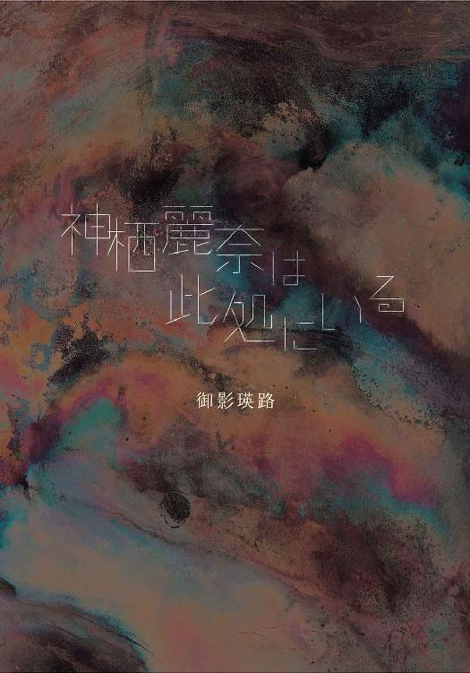
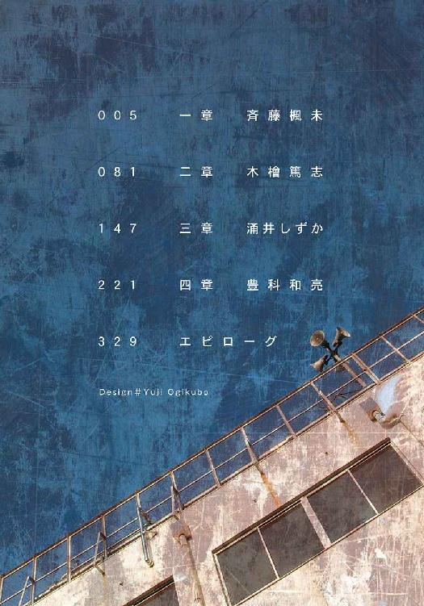
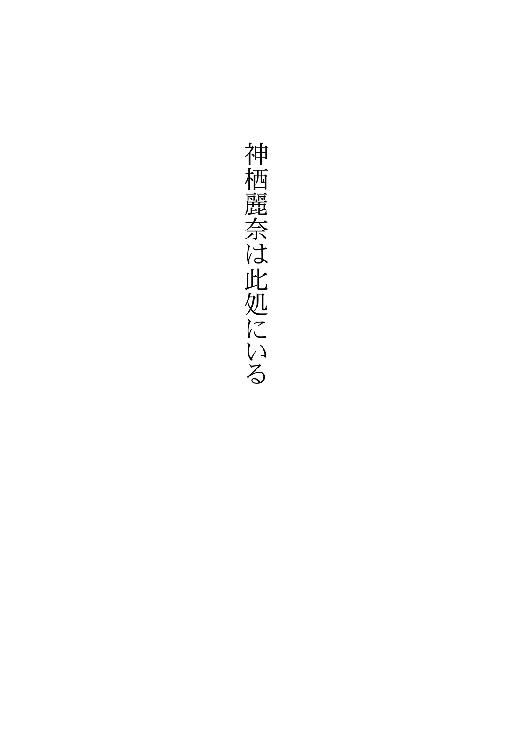
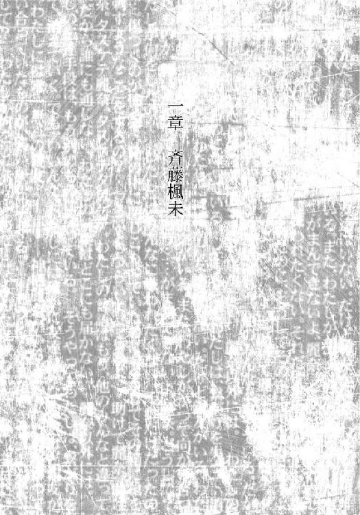
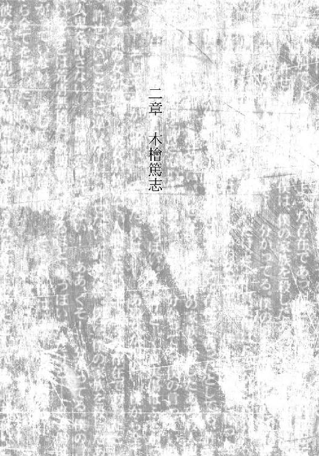
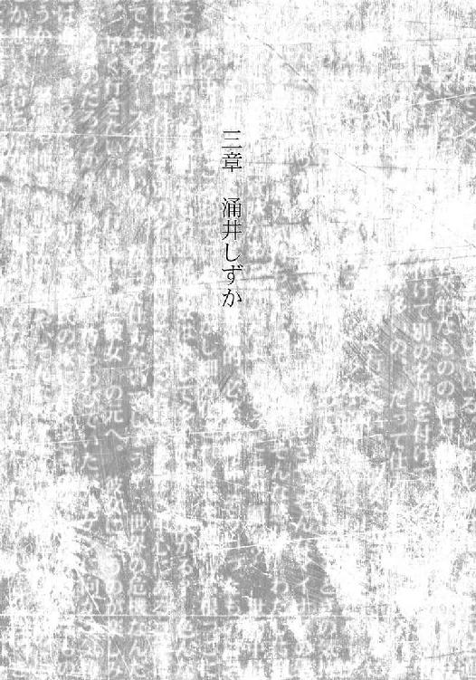
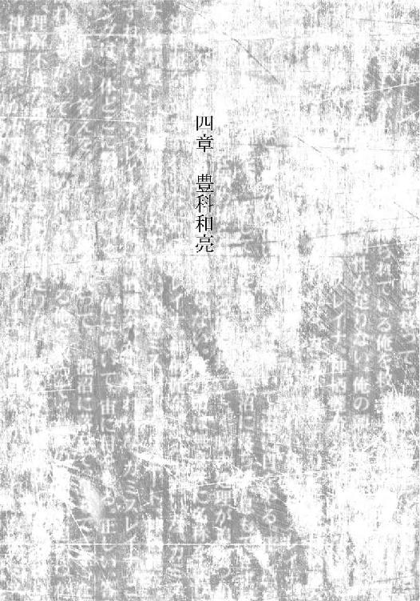
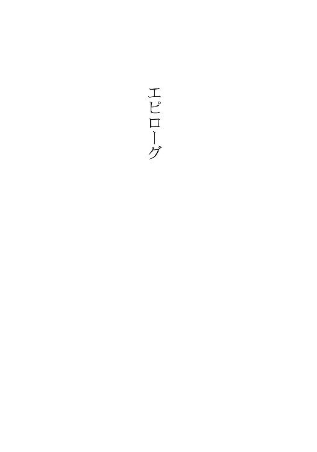
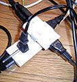

| 神栖麗奈は此処にいる (電撃文庫) | |
| 御影 瑛路 | |
| (2013) | |


本書（電子版）に掲載されているコンテンツ（ソフトウェア／プログラム／データ／情報を含む）の著作権およびその他の権利は、すべて株式会社ＫＡＤＯＫＡＷＡおよび正当な権利を有する第三者に帰属しています。
法律の定めがある場合または権利者の明示的な承諾がある場合を除き、これらのコンテンツを複製・転載、改変・編集、翻案・翻訳、放送・出版、公衆送信（送信可能化を含む）・再配信、販売・頒布、貸与等に使用することはできません。


１
わたしには友達がいない。
人が嫌いとか、信じられないとか、めんどくさいとか、そういうことじゃない。自分の意志で友達を作らないんじゃない。わたしは、ただ単純に友達が作れない。
母親はそんなのたいしたことじゃない、あなたは勉強ができるじゃないと言うけれど、それこそたいしたことじゃない。母は友達が作れない人間にとって、学校というものがどれだけ苦痛か知らないのだ。
現に今の休み時間、わたし以外のみんなが楽しく話しているのに、わたしだけはまるで異次元にいるかのように取り残されている。もっとつらいのは昼休みだ。机をくっつけ合って給食を食べ合っている中で、わたしだけが一人、広い海の上に浮かぶ離れ孤島のように、ぽつんと離れて無言で食事をしている。喧噪の中、一人、むぐむぐと給食を流し込んでいる。
わたし以外の人は、みんな宇宙人なんじゃないか？ 全員が人の殻をかぶって、最後の生き残りの地球人であるわたしを騙しているんじゃないか？ たまにそんな風に考える。
そんなわけない。そんなわけないけど、そんなことを考えてしまうほどに、わたしは学校で孤独だった。
授業中以外やることがなくて、わたしは大して好きでもないのに、毎日本を読むようになった。そのせいで、周りの人はますますわたしを話しかけにくい人と判断し、さらに離れていく。悪循環。わたしは孤独を愛する人と誤認されている。違うのに。そんなんじゃないのに。わたしもバカな話したいよ？ クラスメートの誰がカッコイイとか、ジャニーズで誰が好みだとか、そんな話もしたいよ？ でも、誰もしてくれない。遠慮がちに、用事があるときに話しかけてくれるだけ。
どうしてわたしには友達ができないんだろう？ わたしは他の人と何が違うんだろう？ やることがないから、いつも考える。
きっとわたしがブスだからだ。ニキビも結構あるし、目だってあまり大きくないし、鼻も胸もぺちゃんこ。でも、そこまでひどいかな？ そこまでひどくない気がするな。そもそも、外見のせいにしちゃダメだ。
会話。そう会話がうまくできないせい。じゃあどうして会話ができないの？ 身構えちゃうから？ たまに話を振られると緊張しちゃうから？ ううん、それだけじゃない。むしろそれは、話をあまりしないせいで生まれた悪循環の一つ。
元々の原因は......きっと傷つくのが怖いから。わたしが言葉を口にして、それで「何言ってるんだ、こいつ」と思われることが怖い。他人とずれたことを言って、場を白けさせるのが怖い。他人の評価は怖い。
わたしはふと、窓際二列目の水原さんたちのグループを眺める。水原さんはクラスのリーダー的存在で、当然友達が多い。集まっている人たちも、みんな楽しそうに話してる。すごく羨ましい。
だけど、あんなに仲良しそうなグループでも、きっと一人一人を問いただせば、グループ内で嫌いな人がいると答える。誰だって完璧じゃない。嫌われる要因はどんな人間にもある。ましてやそれがわたしなら、その要因はいくらでもあるに決まっている。
だから、わたしに友達を作ることなんて、きっと不可能だ。
でも、いいんだ。
わたしには確かに友達はいない。
だけど親友がいる。
わたしには唯一無二の親友──
──神栖麗奈がいる。
「楓未はね、優しすぎるんだよ」
学校の帰り道、麗奈にさっき考えていた友達のできない原因を話したら、彼女は微笑みながら、わたしにそう言った。
その笑顔があまりにきれいで、わたしはちょっとの間、見とれてしまった。真っ黒、本当に真っ黒な長い髪は、枝毛なんて絶対にないと確信できるほどサラサラで、スタイルは幼児体型のわたしとは打って変わって、出るところが出ていてモデルみたいな体型だ。
麗奈は本当にきれいだ、おかしいくらいに。
「優しい、かな？ たぶん違うよ。わたしは傷つきたくないだけ」
「それが優しいと思うんだけどな」
「どうして？」
「だって、誰だって傷つきたいわけじゃないでしょ？ 傷つきたくないと思ってる」
「だけど、ちゃんとみんな人付き合いできる」
「うん。じゃあ、楓未と他の人の差って何だろう？ 簡単だよ。楓未は人の傷に敏感なんだ。楓未は傷つくのを怖がっているし、傷つけるのも怖がってるんだよ」
それはもちろん、むやみに人を傷つけるのが好きなわけがない。
「だからね、すごく優しく楓未は人に接してくれるの」
「麗奈......」
うれしい。
でも、本当は分かってる。わたしは臆病なだけ。麗奈は〝臆病〟であることをすごくきれいな言葉でラッピングして、わたしに渡しているだけ。
でも、その心遣いがうれしい。
ああ、やっぱり麗奈はすごいな。わたしと同じ中学三年生のはずなのに、全然わたしなんかと違う。
「麗奈はいいな」
「ん？ どうして？」
「だってさ......美人だし、頭いいし......神様ってやっぱり不平等だって思うよ」
うん、神様は不平等。そうじゃなきゃ、わたしと麗奈が同じ世界で生きているわけがない。きっと神様は、たくさん生まれてくる命の細かいバランスなんていちいち構ってられずに、日払いのアルバイターが流れ作業の検品をするよりも適当に、わたしたちをこの世に送り出すんだ。
そんなこと誰でも知ってる。だけど、まだわたしは、『自分が劣っている人間』だなんて認められるほど大人じゃない。
「そんなことないよ。楓未かわいいし」
わたしの心情を察してか、優しい微笑みを浮かべて答える。
「......かわいくなんてないよ。それって......ちょっと嫌みに聞こえる」
「あ、それちょっとひどいな。あのね......楓未みたいに私をいいって思ってくれる人もいるみたいに、楓未をいいって思う人もいるんだよ」
「いないよ」
「いるよ。少なくとも目の前に一人」
麗奈は自分を指して微笑む。
「でも──」
「仮にね」
麗奈はわたしの言葉を遮って語る。
「仮に、私の方がいいと思う人が多いとして、それが何だっていうの？ 数なんて関係ないじゃない。それとも、楓未はアイドルみたいにちやほやされたいの？」
「そんなわけじゃないけど」
「だったらいいじゃない。楓未のことを大切に思っている人が少なくともここに一人いる。それじゃあ楓未は不服なの？」
「ううん！ 麗奈がわたしを大切にしてくれれば、それで十分だよ！」
「......そっか」
麗奈はまた、優しい微笑みを浮かべる。その笑顔を見て、途端、わたしはさっきまでの自分の言動が恥ずかしくなる。
ああ......わたし、なんて子供じみているんだろう。わたしはバカだ。本当にバカ。きっと麗奈は、わたしが麗奈の美貌を妬んでいるって思った。実際その通り。最低だ。嫌われた。きっと嫌われた。
「......楓未、今自分を責めてるでしょ」
「え？」
「まったく......優しすぎるんだから。私がこんなことで気にするわけないでしょ？」
「でも──」
「でも、じゃないの。それってちょっと失礼だよ」
「え！」
「楓未は私の親友。大切な人。そう言ってる私の言葉を信用してないってことでしょ？」
「あ......」
「楓未。私は楓未の親友、でしょ？」
「もちろん！」
それだけは断言できる。
「麗奈はかけがえのない親友だよ！」
代わりなんていない親友。
もし麗奈がいなかったらわたしは──
わたしはとっくに──
２
今日もまた陰鬱な一日が始まる。
朝は一人だから余計に憂鬱だ。一緒に麗奈と登校したいけれど、麗奈は陸上部の朝練で早くに家を出てしまうので大抵一人だ。それでも一緒に登校しようとも考えた。けど、教室でホームルームが始まるまで、一人待ち続けるのは結構苦痛だし、何より麗奈に気を遣わせてしまうので、一緒に登校はしない。
一人学校まで歩き、学校に着き、わたしは上履きへと履き替えるために、下駄箱を開ける。
「............」
なんだこれ？
おはよー、と他の生徒の声がすぐ後ろで聞こえ（もちろんわたしに向かって挨拶したわけではない）、わたしは急いで下駄箱を閉じる。そしてその生徒が離れたのを確認して、もう一度下駄箱を開けた。
「──え、と」
上履きの上に、便箋が載っかっている。
わたしがどうしていいか分からずに、便箋に手を伸ばしたまま静止していると、また違う生徒が近づいてきた。わたしはとにかく焦って、便箋を鞄にねじ込んだ。
ど、どうしよう......こ、これってもしかして！
焦る。何に焦っているのか分からないけれど焦る。ここには人が多すぎる。
周りにいる人間すべてが、わたしを見ているような気がしてきた。視線がわたしの前を通過するたび（それは確かにただの通過で、わたしを捉えてなどいないことが分かっていても）、いちいちわたしを突き刺す。
わたしになんて誰も注目していない。分かってる。だけど、わたしの一挙一動を誰もが監視しているような気がする。わたしがおかしな行動するのを突き止めようとしている気がする。
わたしはいた堪れなくなり、視線から逃れるために、トイレに駆け込んだ。急いで個室に入り、便箋を取り出す。
便箋は急いでねじ込んだせいで、少し折れ曲がってしまっていた。便箋を下駄箱に入れた人ごめんなさい。
わたしは、便箋を広げた。
『 斉藤楓未 さん
突然のお手紙、ごめんなさい。
どうしてもお伝えしたいことがあり、手紙を出しました。
放課後、教室で待っていてください。
』
便箋にはそれだけ書いてあった。
「──あ、はぁ......」
わたしは息をしていなかったことに気付き、急いで酸素を取り込む。
どういうこと？ これ、どういうこと？
短い文面だが、客観的に内容を見れば、これがラブレターだということは分かる。だけどこれは、わたし宛の手紙だ。わたし宛にラブレター？ そんなことが？ そんなことがあり得る？
「そんなことあり得るに決まっているじゃない」
麗奈は何でもないことのように、そんなことを言った。
わたしたちは休み時間、屋上へと続く踊り場に来ていた。屋上は封鎖されているので、そこに続く階段は基本的には誰も利用しない。だからわたしたちは、あまり人に聞かれたくない話をするときは（話があるのは主にわたしだけど）、ここですることが多かった。
「どうして！ だ、だってわたしだよ......？」
「この前言ったでしょ？ 楓未は魅力的だって」
否定しようと思ったが、前と同じような堂々巡りの会話になってしまいそうなので止めておく。
「それで楓未はどうする気なの？」
「え？ どうするって......？」
「だから、そのラブレターの相手にどう答える気なの？」
「あ──」
ラブレターをもらったことだけに囚われて、失念していた。そうだ、ラブレターをもらったのならば、返事をしなければならない。
「ど、どうしよう、麗奈！」
「とりあえず、楓未は相手のことどう思ってるの？」
「相手......？」
わたしはラブレターを広げ、もう一度確認してみる。
「ね、楓未はその人のことどう思ってるの？ やっぱり結構仲良かった？ それとも全然話したことなかったりする？」
「──ない」
「ん？」
「名前、ない」
「......ちょっと貸して」
手紙を麗奈へと渡す。麗奈は手紙を裏返したりして確認し、ため息をつく。
「確かにないね」
「......麗奈はラブレターもらったこと、あるよね？」
「うん、ある」
「名前がなかったこと、ある？」
「......どうかな。あったかもしれないけど、相手は誰だか分かるって状況だったと思う。誰からもらったか、分からないことはなかった」
「......そっか」
わたしは手紙をまた読み返す。『放課後、教室で待っていてください』という言葉。切なる願い。わたしへの哀願。
「......どうするの？」
麗奈が尋ねる。
「どうするって、わたしがどうするかなんて、麗奈分かってるくせに」
「......そうだよね、楓未だもんね」
麗奈は寂しそうに笑う。
「あのさ......今日、部活終わったら先に帰って」
「......どうして？」
「............」
わたしはうまく答えられなかった。自分でもよく理由が分からない。こんなときにこそ、一緒にいて欲しい気もする。
そんなわたしを見て、麗奈は明るく笑いかけた。
「......ね？ 楓未、水族館行きたがってたよね？」
「......うん、イルカ好きだから」
「今度の休みに行こうね」
なぜ今こんなことを言うか。
「......うん！ 約束、だよ」
わたしにはその意図が分かるので、うれしかった。
放課後になった。
わたしは手紙の件がなくとも、いつも放課後残っている。部活が終わる麗奈を待っているからだ。
だけど今日は麗奈には帰ってもらった。わたしは一人だ。一人、手紙の主を待っている。
わたしは文庫本を広げながら、これが誰からの手紙だったらうれしいか考える。
誰にも気兼ねなく話してくれる木村くんとかはどうだろう？ うれしいと思う。他の女子に人気があるバレー部の加藤くんは？ うれしいと思う。不良の芦沢くんは？ 怖いけど、気持ちはうれしい。ちょっと何考えてるか分からない木檜くんは？ 警戒するだろうけどうれしい。不潔だって嫌われている洞島くんは？ 付き合いたくはないけど、うれしい。
誰かに想われるなんて、それだけでうれしい。
付き合ってくれって迫られたら、どう答える？
わたしは......今のところ誰とも付き合う気はない。付き合うっていうのが、どういうことか分からない。怖い。相手にどう対応していいのかちっとも分からない。
付き合ったらやっぱりキスとかするのかな？ それってどんな気持ちなんだろう？ キスがしたくなる気持ちってどういうものなんだろう？ キスを迫られたらどうしよう？ わたしが拒んだら傷つくのかな？ じゃあ、拒めないよね？ だって......嫌われちゃうもん。
そう、わたしは拒めない。
うん、だから誰でも同じ。この手紙をくれたのが誰であっても、わたしは『放課後、教室で待っていてください』という言葉に従うことしかできない。
空が暗くなってきた。もうすぐ下校時刻だ。
もしかしたら誰も来ないのかもしれない。そういう類のいたずらなのかもしれない。そうだとしたら──少し安心する。
わたしはほとんど文字を眺めていただけの文庫本をしまい、帰る準備を始めたそのとき、教室に水原さんたちのグループが入ってきた。水原さんたちはみんなテニス部で、わたしはラケットを教室に置きに来たのだと思った。
だけど、水原さんたちのその目が、それだけでないことを物語っていた。
そして水原さんはわたしを見て、「ふぅん、やっぱり待ってたんだ」と言った。
「あの......」
わたしが狼狽した様子を見ると、水原さんの周りの人たちがクスクスと笑い始めた。
「もしかして期待しちゃった？」
水原さんは口元をゆるめながら言う。
「え、えと......」
どう答えればいいんだろう......。水原さんたちは、どんな答えを望むのだろう。
「期待......してたかもしれない......」
わたしは正直にそう答えた。
すると、一人が堪えきれなくなったかのようにアハハと笑い始めた。それにつられて、他の人たちもさらに顔をほころばせる。
「あんた、いくらなんでもそりゃないっしょ！ 斉藤さんみたいに暗い人に誰が言い寄るのさ！」
「果穂言い過ぎだよー。さすがにかわいそう」
「だってさぁー」
「確かに普通騙されないけどね。それだけジュンジョウなんでしょ？」
「まぁ、慣れてないだろうしねえ」
わたしに会話なんて挟ませないといった様子で、高築さんと小見さんはわたしがいかにマヌケで変わった人間かを語っている。
わたしは、どうしたらいいか分からない。
期待。そう、わたしは誰かに想われているのではないかと、ちょっと期待していた。バカみたい。あり得るわけないのに。絶対にあり得るわけないのに。
今、みんなとわたしはきっちりと隔てられている。透明だけど、どんな銃弾さえも通さない強化ガラスのように強固な何かに。わたしの姿はみんなに映っているはずなのに、その表情の奥にある感情は、誰も読み取ってくれない。わたしの声は届いているはずなのに、誰もその意味を酌み取ってくれない。
わたしだけ、みんなとは違うものが見えているのではないかと思った。触ろうと思い、手を伸ばすとそこには何もない。
孤独。わたしは、孤独。
誰かに想われる？ そんなことがあるわけない。誰も彼も、わたしになんてこれっぽっちも興味がない。せいぜいからかう材料。一つのくだらない話題の種。
「......ぅ......」
あ......泣く気なんてないのに......。でも流れてしまった。わたしが泣いたら、みんなが興ざめしちゃう。ごめんね。でも泣いちゃった、ごめんね。
わたしが懸念したとおり、みんなはばつが悪そうに顔をしかめた。
わたしは少しでも涙を見せまいと、両手で目を覆い隠した。
「あー......泣いちゃった。ごめんね、斉藤さん」
水原さんが優しい声で言う。
「でもさ、別にいじわるしようとしてたわけじゃないの。なんていうか......斉藤さんっていつも人と話したがらないでしょ？」
違う。話せないだけ。
「あたし、それってあまり良くないと思うの。だからさ、ショック療法みたいな感じで、こういうことやってみたんだよ。悪気はないの」
どうなんだろう？ そういう目的もあったのかもしれない。だけど、そもそもなんで偽ラブレターでわたしが喋れるようになるの？ 他に方法はなかったの？ その目的は、わたしをからかうための隠れ蓑じゃないの？
「ほんとに悪気はなかったの。......許してくれる？」
でも、水原さんのその声が懇願に近いものだったので、わたしは目を覆い隠したままコクコク頷いた。
「あーよかった......。本当にごめんね。じゃあね」
許しを得ると、それでもう十分だと思ったのか、人の気配が離れていった。
......でも、水原さんはひどくない。だって、見当違いではあっても、わたしに気を払ってくれていたんだから。わたしなんかを見ていてくれたんだから。
うん、ひどくない、ひどく、ない。
「ひどいやつらだね」
内面の言葉を否定された。突然のことにわたしは驚き、その声の方向を見た。
「あ......き、木村くん......」
泣き顔見られちゃった。きっと今すごく汚い顔してるのに......。
「ごめん、悪いと思ってたけど聞いちゃった」
木村くんはばつが悪そうにそう言った。
「う、ううん！ べ、別に、いい」
そんな顔をしているから、思わずわたしはそんな風に答える。
「......いたずらのラブレターやられたんだよね？ ひどいよね、人の心踏みにじって。あいつは......水原はいつもそうだ。人の心を踏みにじるのが趣味みたいなやつなんだよ！」
木村くんは、自分のことでもないのに、本気で怒っているみたいだった。
わたしのために怒ってくれている？ そうなのだろうか？ そうだとしたら、どうしてだろう？
とりあえず、わたしはどうしたらいいのだろうか？ 怒りをなだめた方がいいのかな？
「いいんだよ、木村くん。わたし......いたずらだって分かってたから」
「いたずらだって、分かってた？」
木村くんは怪訝そうに眉をひそめ、尋ねる。
「こうなるだろうって......分かってたから」
木村くんはますます眉をひそめる。
「......じゃあ、どうして無視しなかったのさ？」
「──────」
わたしは答えられなかった。口に出してどう説明していいのか、わたしはさっぱり分からなかった。
「......まぁ、いいや。あのさ、今度同じようなことされたら、俺に相談しろよ」
「え！」
「な、なんだよ？ 俺じゃ不服か？」
わたしはブルンブルンと頭を振る。そりゃあ狼狽もする。だってわたしなんかの相談を受けるだなんて......木村くんに一文の得もないのに。
「よくわからねーやつだなぁ......。......んじゃ、俺は帰るから」
木村くんはわたしの頭にポンと手を載せ、笑いかけて教室を出た。わたしはその意味がよく分からず、ボーっと木村くんを見送った。
わたしは一人、自宅に向かっていた。歩きながら、わたしが手紙を無視できなかった理由を考えていた。
手紙はいたずらだって思った。名前がなかったし、便箋も男子が買うようなものには思えなかった。それに何より、便箋に書かれている文字は意識して普段とは違う筆跡で書いたものだった。
だけどもし──万が一、これが本物のラブレターだったら？ わたしはその相手を傷つけることになる。『待っていてください』と哀願した相手を裏切ることになる。そんなこと──わたしにはできない。絶対にできない。
それに、いたずらにしたって、無視できなかった。いたずらをした相手は、わたしに道化になることを望んでいる。わたしが無視してしまったら、期待を裏切ることになってしまう。わたしに興ざめしてしまう。嫌われてしまう。
だからわたしには、無視することなんてできなかった。
それは正しいことなのだろうか？ ううん、きっと正しくない。だって正しければ──
──こんなに傷つくわけない。
麗奈。
麗奈、痛いよ。
痛いよ。此処は痛いよ。
久しぶりに向き合う。麗奈と知り合う前、ずっとわたしが向き合っていたもの。
そう、もし麗奈がいなかったらわたしは──
わたしはとっくに──死んでいた。
何度も死にたいと思った。
人生にはきっと、輝かしいときなんてない。
大人たちは若いときが輝かしいとか噓っぱちを言っている。本気で言っているのなら、きっとそれは記憶の捏造だ。今過ごしている現実が暗澹としているから、それに耐えられないから捏造するんだ。あの時代は今のように荒んでいなかったと思いこんで、今ある現実を我慢しているんだ。
そこから導き出される仮定。
そう、人生はきっと、いつまで経っても暗澹としている。時折、気まぐれのように光るガラスの破片のようなものにすがって、暗中でしかない人生を歩む。ガラスの破片を振り返って、「ああ、あのヒカリはすばらしかったな」とほくそ笑む。バカみたい。
だけど、わたしには逃げ込める過去の時代がない。現実に絶望したときに、美化すべき過去がない。人生が端から端まで絶望で満たされていることを、受容するしかない。
だから、逃げ込める先は、死の世界だけ。
安易に自殺なんて考えるなと、人は言う。だけどそれはちゃんと頭で考えて言っている言葉なのか？ 人は殺しちゃいけない。当たり前だ。物を盗んじゃいけない。当たり前だ。自殺しちゃいけない。当たり前だ。当たり前すぎて考える余地もない答えだ。それはきっと、どうしようもないくらいパーフェクトに正しい。正しすぎてめまいがする。
延々と薄暗いぬかるみの道を歩き続けて、ましてその行為に意味など無くて、そこから逃れる手段は言うまでもなくやっちゃいけないこと。すごい救いようのない図式。
どうしろっていうの？ 一体、わたしにどうしろっていうの？
誰か助けてよ！ わたしに希望を与えてよ！ ううん、そんなおこがましいこと言わない。せめて、わたしに、歩き続けるわたしに気付いて、優しい声をかけて......。
「楓未」
まるでわたしの心の声に、呼応したかのごとくかけられた声に驚き、わたしは顔を上げる。
「......麗奈」
口を開き、わたしは初めて自分がまた泣いていたことに気付いた。
「帰って、とは言われたけど、会っちゃだめとは言われてないよね？」
麗奈はそう優しく笑いかける。
「............ダメだよ」
麗奈はわたしの言葉が分かっているはずなのに、それなのに、わたしを抱きしめる。
「......つらかったね」
ダメだよ。もう......ダメだよ。
わたし、もう、麗奈に甘えちゃうよ。寄りかかっちゃうよ。わたしの全存在を麗奈に預けちゃうよ。
「いいんだよ」
麗奈はわたしに囁く。
「私は裏切らないから」
「──！」
今、わたしは明確に分かる。麗奈を先に帰らせようとした理由。
麗奈がわたしを慰めることは分かっていた。そして、わたしが麗奈に甘えてしまうことも予想できた。
その結果、わたしはどうなるか？
わたしはもう、此処にいるためのバランスを保てていない。わたしを支える拠り所を必要としていた。
言うまでもなく、その拠り所は神栖麗奈だった。
わたしは今、抱きしめられることで、完全に麗奈に寄りかかってしまった。もうとっくのとうにそうであったかもしれないが、わたしは、わたしというものは、麗奈なしでは存在することができなくなってしまったのだ。
そうなることを、わたしは防ごうと思い、麗奈を帰らせたのだ。
「......麗奈......わたし......」
「何も言わなくていいの。私は......楓未ぐらい背負ってあげるから」
言葉が、わたしの、体を、突き抜けていった。
全身が麗奈の体の中にとけ込んでいくのが分かった。すーっと、わたしは透明になって麗奈に取り込まれていった。
すごく、気持ちよかった。
これが他人に受け入れられることだって、わたしは知った。
「う......うぅ......」
涙を流した。涙は麗奈の体に落ちて波紋を作った。ずっと、わたしの涙は地面に落ちるものだと思っていた。でも、違った。涙は確かに麗奈の心を、震わせていた。
わたしは麗奈の一部だった。
そして──
──麗奈はわたしの全部だった。
３
わたしは変容しつつある。わたしという容器に、〝麗奈〟を絶え間なく注ぎ込み続けられている。わたしという溶液は、〝麗奈〟によって容器から溢れて、わたしはどんどん薄くなっていく。
容器はわたしのままで、中の溶液は麗奈。麗奈はわたしの芯となった。
相変わらずわたしは、教室でほとんど口をきけなかったけれども（たまに後ろの席の木村くんは、背後から話しかけてくれたけど）、前ほど陰鬱な気分になることはなくなった。
わたしは一人じゃない。
その実感だけで、わたしはがんばれた。あの、〝わたしと向かい合うべきもの〟が、どこか遠くに行った。
他のことはなんでもいい。ただ、麗奈が側にいてくれれば。
そう──思っていた。
本気でそう思っていた。
わたしはまったく考えもしなかった。
わたしを取り巻く環境が、これ以上悪化するなんてことは、まったく考えもしなかったのだ。
「あたしのサイフがない！」
水原さんは焦った様子で叫んだ。今は帰りのホームルーム中で、当然担任の小杉先生を含めた誰もが水原さんに注目することになった。
誰もが注目する中、水原さんはサイフを捜す。水原さんのグループの人たちは、心配そうに水原さんの様子を見守る。しばらくはみんな、水原さんの様子をただ黙って眺めていたが、一人が自分のサイフを確かめ始めると、同じように確認し始めた。ちなみにわたしは学校にサイフを持ってきていないので、調べる必要はないのだが、何となく周りに合わせてポケットを探るようなポーズを取った。
みんなが自分のサイフの無事を確認した頃、水原さんは憮然とした表情で席に座った。その水原さんの元に先生が近づいていく。
「水原、ないか？」
「......ないです」
「確かにそこに入れていたのか？」
「間違いないです」
先生は顔をしかめて「そうか」と小さく頷き、教壇に戻る。
「えー、今聞いてもらった通り、水原のサイフが無くなったそうだ。もちろん、水原の思い違いかもしれないし、まだ何とも言えないのだが──」
先生は水原さんのサイフをこのクラスの生徒が取った可能性もあると、まるで山手線の内回りで行くべきところを外回りで行くかのように煩わしく、遠回しに言った。
確かに物が物なので、盗難の可能性は高い。以前にもＭＤプレイヤーが盗難に遭う騒ぎがあったこともある。
水原さんは、もう完全に盗まれたと思っているのか、怒りを隠しきれない様子だ。水原さんのグループの人たちも、それに感応したのか、同じような様子をしている。
「誰か心当たりのあるものいないか？」
先生が言う。みんなは顔を見合わせる。先生もこんなことで意見が出るとは思っていないだろう。盗んだ人間も、それを知っている人間も、この場で意見を言うわけがない。
そう確信していたのだけど、結果は違った。
木村くんがおそるおそる手を上げたのだ。
「木村、なにか知っているのか？」
「いえ、知っているとは違うんですが......ちょっと妙だと思ったことがあって」
「なんだ？」
「お金を盗るときって、サイフごと取るものじゃないと思うんですよ。普通、中身だけ抜き取りますよね？ 実際、前に五組であった盗難事件はそうだったじゃないですか」
「......そうかもしれないな」
「しかも盗難事件の場合、水原さん一人の現金を狙うんじゃなく、教室に置いてある現金すべてを狙うと思うんですよ。でも、盗られたのはどうやら水原さん一人だけみたいだ」
「つまり何が言いたいんだ？」
「つまりですね。僕は水原さんの勘違いであるか、もしくは水原さんに対する、たちの悪いいたずらであると思うんですよ」
「あたしの勘違いってのは絶対ない！」水原さんは声を張り上げて反論する。「だから、いたずらの方よ！」
「じゃあいたずらかな？ ちなみに水原さんのサイフには、いくらぐらい入ってたの？」
「......千円ちょっとしか入ってなかったはずだけど、それがどうかした？」
水原さんは機嫌が悪そうに答える。
「それじゃあ、やっぱり金銭目当てではなさそうだね。水原さんを困らせることこそが、目的のように思える。でも、犯人の動機がそれなら、だいぶ限定されるんじゃないですか？」
木村くんの言葉に、みんなは顔を見合わせる。
つまり犯人は、水原さんに恨みを......とそこまではいかなくても、快くは思っていない人ということ？
と──
気付いた。お互い顔を見合わせていたみんなの視線が、次第にわたしへと向けられていることに。
「え......？」
わたしを見ていなかった人も、幾人かの人間がわたしを見ていることに気付き、わたしへと視線を向ける。その人の視線に気付き、また違う人がわたしを見る。みんながわたしを見る。みんながわたしを見てる。
なんで？ どうして？ どうして、今、このタイミングで、わたしをみんな見るの？
それじゃあまるで、まるでわたしが──
先生も、みんながわたしを見ていることに当然気付き、わたしを見た。先生はその視線を水原さんへとずらす。わたしも水原さんを見る。
そして水原さんはどういうわけか、腑に落ちたような顔をしていた。
「斉藤」
先生の低い声が、わたしに向けられる。わたしはビクリと縮こまってしまう。名前を呼ばれただけ？ そうなんだけど......その意味ぐらい分かる。わたしにとっては、これはまるで──死刑宣告だ。
「斉藤は何か知ってるか？」
「え？ ぁ......えっと......」
何も知らない！ わたしは何も知らない！ でも......わたしはそれがなかなか言えない。
「どうした？ 先生は何か知ってるのかと聞いているだけだぞ？」
でも、疑ってる。
「ぁう......」
みんなわたしを見てる。疑ってる。それだけで、わたしがまともに喋れなくなる理由は十分だ。
だけど、みんなはそうは思わない。
みんなはきっとこう解釈するだろう。わたしが狼狽するのは、正鵠を得られたからだと。わたしが犯人だから、こんなに慌てているのだと。
そんなこと分かっているから、しゃんと先生の質問に答えなければならないのに、わたしにはそれができない。
「わ、わたしは......」
今ここに、わたしの性格を知っている理解者がいれば、麗奈がいれば、そのことを説明してくれるのに──いない。
いない。
わたしをフォローしてくれる人は、ここには誰もいない。
「わたしは......何も知ら──」
「先生」
わたしの決死の覚悟で言った言葉を遮って、水原さんが言った。何を言うのかと、わたしは水原さんを思わず見た。
水原さんの表情には、すでに怒りは見えない。
「なんだ、水原？」
「あたし、確かに斉藤さんに恨まれることをしたかもしれません。あたし......斉藤さんにいたずらをしたんです。冷静に考えれば......確かに......悪いことだったと思います」
水原さんは言いながら涙を浮かべ始めた。
「でもあたしは......それで斉藤さんの心を開かせられると信じて......そんなことをしたつもりなんです！」
わたしはその言葉に驚いて水原さんを見る。その苦悶の表情に、まったく噓偽りはなかった。本当にそう信じて、水原さんはそう言っていた。
でも、水原さんが信じている理由が、偽のラブレターが本当にわたしの心を開かせるための手段であったからなのか、こんな状況に追い込まれたせいで、そう信じ込んでしまったからなのかは、わたしには判別できなかった。
ただ、そんな真実はお構いなしに、決定的な事柄がある。
今の言葉で、わたしの立場は決まった。
「............」
みんながわたしを見ている。
視線、視線、視線、視線、視線。
ルーペで収束した光のように、わたしを焼く弾劾の視線。
その視線にわたしへの疑惑はもうない。
もう決定している。
わたしが犯人であることは、もう決定している。
「ち、ちが──」
「あんただろ！」
わたしの精一杯の否定を、高築さんは遮った。
「あんた、悔しかったんだ！ でも、正々堂々と言い返せない。だからこんな汚い真似して、憂さを晴らしたんだろ！」
「やめてよ果穂。あたしも......悪かったんだよ」
あたし〝も〟悪かった。
ほとんど泣きながらの水原さんの言葉は、無意識に示していた。わたしは加害者で、水原さんは被害者。その位置関係を明確に示していた。
その言葉は、高築さんの怒りに油を注ぐ結果となった。高築さんは真っ赤になって、わたしに向かってきた。わたしは殴られるのではないかと思い、頭を抱え丸くなる。
しかし、高築さんが向かってきた理由は、わたしを殴るためではなかった。高築さんの目的はわたしの鞄だった。高築さんはわたしの鞄を取り上げ、開き、逆さにして、中身をわたしの机の上にぶちまけた。
そして、ぶちまけられた鞄の中に、なぜか見覚えのないサイフがあった。サイフはカッターナイフか何かで傷つけられたのか、ボロボロになっていた。
「......斉藤、後で職員室に来るように」
先生がそう言い終わった直後、嗚咽が教室に響き渡った。
言うまでもなくそれは、水原さんの泣き声だった。
わたしは周囲を見回した。
視線。視線。視線。視線。視線。
アイスピックのように、鋭くわたしを貫く弾劾の視線。
此処には麗奈がいなかった。
つまり──誰もいなかった。
わたしの味方は、此処には誰もいなかった。
次の日、わたしの机は教室から消えていた。
今までのわたしは、みんなにとって、ただのとりとめのない存在だった。でも今日からわたしは、きっととりとめのない存在でいることすら許されない。
わたしは、存在をも認められない。
教室に一つ机が足りないことは、パズルのピースが一つ足りないみたいなものだ。でも、足りないのはわたしの机だった。ピースが足りないと感じるのはきっとわたしだけ。みんなにとってはこれで完成品。
わたしはベランダに置いてあった机と椅子を、本来の場所に戻した。本来の場所？ そうなのだろうか？ いや、きっとそうじゃない。わたしの机があるべき本来の位置は、教室の中ではなく、ベランダの方なのかもしれない。
だけど、そうなのかもしれないけれど......そんなこと、わたしは気付きたくなかった。
白く、白く染まる。
麗奈を除いた、わたし以外のものが、白く染まる。
白く染まった此処は、まるでひらがなだけで書かれた小説のように、わたしになかなか意味をくみ取らせない。わたしから離れていく。わたしの手の届かないところに、わたし以外のものは逃げていく。
それとも、あるいは──
色が無いのはわたしの方なのかもしれない。
誰とも口をきかないまま、昼休みが終わった。
麗奈に昼休み会えなかったこともあって、本当に一言も会話をしていない。わたしのために向けた言葉は、誰一人として一句たりとも口にしなかった。
誰もわたしに話しかけることがなくなった。いや、それは以前からだけれど、でも少なくとも以前は、そこに悪意はなかったはずだ。
必要最小限の会話も、わたしには許されなかった。木村くんでさえも、クラスに新しく生まれた磁場に刃向かえず、わたしに話しかけなかった。
「............」
知っていたけれど。
知っていたけれど、こういうことがあると、改めて思い知る。
わたしが、消えても全然構わない存在だってこと。
わたしが消えて、世界も消えるなんてことはない。真っ青な空は、きっと雨を降らせるなんて気を利かせることもしないで、知らん顔をし続ける。きっとみんな、わたしがどうなろうが素知らぬ顔。世界のすべては、わたしとは関係のないところで動いている。
また、わたしがかつて向かい合っていたものが、襲いかかってくる。
──もう......がまんできないよ、麗奈。
どうして？ わたしが何をしたの？ わたしは、みんなに嫌われたくない。それだけだったのに......。傷つくのが怖くて、箱の中に閉じこもっていたのに、どうしてその箱に槍を突き刺すようなことをするの？
つらいよ、つらいよ、つらいよ。
助けて麗奈。助けて麗奈。タスケテ麗奈。タスケテタスケテ。
「みんなひどいよね」
「──え？」
目の前には麗奈がいた。
「『え？』って、どうかしたの楓未？」
「う、ううん......なんでも、ない」
今は放課後。部活に行こうとしていた麗奈を無理矢理引き留めて、また屋上へと続く踊り場で、麗奈に相談していたんだった。
ごく自然ないきさつ。
それなのにどうして違和感を感じたんだろう？ 何も理由がないのに。
「どうして確証もなく、楓未を犯人だと思ってしまうんだろう？ 楓未がそんなことできるわけないのに」
「......しょうがないよ。みんなわたしの性格なんて知らないし、それにわたしの鞄に水原さんのサイフが入ってたんだから、わたしが犯人だと思うよ」
「それなんだけど......どうして楓未の鞄にサイフが入っていたの？」
「それは──」
あまり考えたくないけど......。
「......普通に考えたらさ、楓未に罪をなすりつけようとした人がいるってことになるよね」
「......そうだよね、やっぱり」
それこそ、実はわたしが二重人格でもない限り。
「......わたしのこと、嫌いな人がやったのかな？」
「それは......違うと思うよ？ 楓未は嫌われるタイプではないし......。単純に楓未なら、罪をなすりつけやすいと思われたんだと思うけど」
そうかもしれない。
でも、どちらにしても、わたしに罪を押しつけてもかまわない程度には嫌われていた。
「それにしても、そいつは本当にひどいやつだよね！ 見つけてとっちめてやらなくちゃ！」
「ううん......それはいいよ」
「どうして？ 楓未、こんな目に遭ってるのに。今の状況、つらいんでしょ？」
「つらいよ。つらい、けど──」
「......けど？」
「今に始まったことじゃないもん。ただ、問題が表面化しただけだから......」
「そんなこと......。だって、楓未は疎まれてたわけじゃないし......」
「そうかな？ 時間の問題だったと思うな。だってさ、もし仮に水原さんとの立場が逆だったとしても、苦境に立たされたのはわたしの方だったよ、きっと」
「それは──」
麗奈は言葉に詰まった。どちらが悪いかというケースにおいて重要なのは、どちらが何をしたかではなく、したのが誰であるかである。教師と生徒なら生徒が悪になるし、不良と優等生なら不良が悪になるし、美人と不美人なら不美人が悪になる。
そして、わたしと水原さんなら、当然わたしが悪になる。
つまりは、この結果はすでに用意されていたことなのだ。
頭のいい麗奈は、そんなこと当然知っている。
「......そんなことないよ」
言った言葉を麗奈自身が信じていなかった。その表情は、言葉に詰まってとっさに否定できなかった自分を責めていた。
......ただの事実なんだから、気にすることないのに。
「麗奈」
「......ん？」
「それでも麗奈は、わたしの味方でいてくれるんでしょ？」
「それはもちろんだよ！」
うん、それならいい。
わたしには味方がいる。親友がいる。麗奈がいる。
だからわたしは、ここに居てもいい。
「あ──」
麗奈が突然声を上げる。何だろうと思い、麗奈の視線を辿り振り向くとそこには、
「えーっと」
木村くんが所在なさそうに立っていた。
「......木村くん、どうしたの？」
「あ、うん......。ちょっといいかな？」
木村くんは表情を曇らせて、わたしに尋ねる。
「う、うん。......なに？」
「実は芦ちゃんに呼んでこいって言われてさ。俺、たまに斉藤さんがここに来るの知ってたから、パシられたんだけど」
「......あしちゃん？」
「芦沢くんだよ。芦沢俊樹」
ちょっと不良っぽい芦沢くん......？ 芦沢くんが何の用だろう？
でも、きっといいことではない。それは木村くんの表情で分かる。
「あ、あの......もしかして芦沢くん怒ってた？」
「............」
わたしの問いに、木村くんはじっとわたしの顔を見ただけで答えない。そして、視線を逸らした。
「......そうなの？」
「斉藤さん、なんだったら行かない方がいいかもしれない」
木村くんはわたしを見ないまま、そう呟く。
......事態は思ったよりも深刻みたいだ。でも、行かなければきっと、もっと芦沢くんはわたしに対して反感の念を抱くのだろう。
それは──嫌だ。誤解でこれ以上嫌われるのは、嫌だ。
「......行くよ」
「そう......」
木村くんの表情はまるで、自分がこれから芦沢くんに殴られるみたいな表情だった。
「楓未」
麗奈が心配そうにわたしを見る。
「大丈夫」
そう笑いかけて、麗奈に手を振った。
木村くんに連れられて教室に戻ったわたしは（すぐに木村くんは部活に行ってしまった）、芦沢くんに教室の端に追いやられた。そして戸惑う暇もなく、幾人かのクラスメートが遠巻きに見る中、芦沢くんの友人たちや高築さんたちに囲まれた。水原さんはどういう顔をしていいのか分からない様子で、少し離れて立っていた。
「あのさ、お前、コレなんだか分かるか？」
芦沢くんは威圧的な表情で、わたしの顔面に何か突きつけた。距離が近すぎて焦点がなかなか合わせられなかったが、それはあの水原さんのサイフだった。
「──────」
水原さんのサイフと答えようとする。でも声が出ない。だって、みんな敵愾心むき出しで、わたしを睨み付けている。何を喋っても許されない気がする。怖い。
わたしの頭の右にある芦沢くんの右腕が、いつ暴れ出すか分からない。でも、それは暴れたがっている。芦沢くんは怒っている。その感情を発散させるにちょうどいい位置に、怒りの対象であるわたしがいる。
怖いよ。どうしてみんな、そんな目でわたしを見るの？ 何も言えないよ。きっと何を言っても許されない。
「おい！ これは何か聞いてるんだよ！」
芦沢くんが声を張り上げる。芦沢くんの右腕がプルプルと震えている。
「......サイフ......です......」
「誰のサイフだ？」
「水原さん......のです」
「そうだ。これは由宇のサイフだ」
ユウ？ そういえば水原さんの下の名前は由宇だった。
「オレがあいつの誕生日にプレゼントしたサイフだ。そして、お前がカッターナイフで切り刻んだサイフだ！」
芦沢くんの唾が飛んできて顔にかかる。もう、芦沢くんは怒りで半分以上理性はない。もしわたしが男だったら、とっくにわたしは殴られていた。
「あんたさ、由宇とトシキが付き合ってること知ってたんでしょ？」
高築さんが怖い顔で言う。
「それで、由宇のサイフがプレゼントだって知ってたんでしょ？」
知らない。二人が付き合っていたことなんて、わたし全然知らない。だってわたしには、そういう噂話は一切流れてこないから。
「だから腹いせに、サイフごと盗んだんでしょ？ そんなこと分かってるんだからね！」
違うよ。そんなことしてない。
でも、そんなこと言えない。今、わたしがやったんじゃないって説明しても、絶対に納得してくれない。
「分かるかお前！ このサイフは弁償して済むもんじゃないんだよ！」
芦沢くんの右手が動く。わたしは反射的に目を瞑る。でもその右手はかろうじて、わたし自身ではなく、後ろの壁を叩くにとどまった。
頭の中をベタベタと真っ白いペンキで塗りつぶされて、わたしはもう何も考えられない。全身がガクガク震えてる。
どうしよう？ 怖いよ。お願い、痛いことしないで。わたし何もしてないよ？
「助けて......」
わたしは追い込まれ、ついにそんなことを呟いた。
「助けて......」
芦沢くんたちは初め、自分たちに対して懇願していると思ったみたいだったが、それが違うようだと気付き、少しキョトンとしていた。
「助けてよ......」
わたしは助けを求めた。もちろん、わたしが助けを求められる人は一人しかいない。
「助けてよ......麗奈」
麗奈に迷惑をかけたくなかった。だから麗奈には付いてきてもらわず、わたしだけで芦沢くんの元に向かい、解決をしようとした。
でも、もう無理だった。
長い髪をなびかせ、颯爽と現れて、芦沢くんたちからわたしを引き剥がし、助けてくれる麗奈を想像した。想像すると現実にそうなるような気がした。そして、おかしいくらいに美しい顔立ちで、わたしに笑いかけてくれる。「大丈夫だよ、楓未」
──だけど、麗奈は来なかった。
甘美な想像は、わたしを一度這いつくばっていた地面から、最上階まで持ち上げた。でも、現実のわたしはやっぱり地面に這いつくばっていた。わたしは最上階から再び落下した。
「う......ぅ......」
わたしはたまらず泣き出す。
芦沢くんはわたしの涙に多少ひるんだのか、いらだっている顔はしているが、もう暴力を振るう気配は消えていた。
「何よ！ 泣けば済むと思ってんの！」
代わりに高築さんがわたしに迫る。
「そもそも『助けて』だなんて、あんたを助けてくれる人がどこにいるのよ！」
「いるもん......」
「誰よ？ 親？ 先生？ あんたにはせいぜい、立場上助けてくれる人しかいないじゃない！」
「いる......」
「だったら名前をあげてみなさいよ。そもそもあんたは──」
「麗奈がいる！ 神栖麗奈がいる！」
わたしは叫んだ。
わたしが今まで生きていた中で、一番大きな声かもしれないぐらいの声で。
高築さんは、いや、そこにいるみんなはそんなわたしの様子に、目を見開かせていた。わたしも自分自身の奇行に驚くけれど、でも、後悔はしない。
だって、それだけは譲れないんだ。
わたしには親友がいる。
神栖麗奈という親友がいる。
それだけは、それだけは譲れないんだ。
わたしはいまだ唖然としているみんなの前から逃げ出す。みんなの前から逃げ出す。もう何もいらない。本当に何もいらない。
麗奈だけがいればいい。
わたしには、ただ一人、麗奈がいればいい。
４
いつかの約束通り、わたしと麗奈は水族館に来ていた。
平日の昼間にしては、思ったより人がいる。小さい子供を含めた家族や、二十歳前後のカップルが客層のほとんどだ。彼らは平日の昼間であっても時間を拘束されていないのだろう。
そして当然、わたしたちみたいな中学生の二人組は、一組も見当たらなかった。
「麗奈、大丈夫だったの？ 学校行かなくて」
「私は構わないよ。楓未こそ大丈夫なの？」
「わたしは、全然大丈夫」
どうせ学校には居場所はない。親もわたしが学校をサボったことなんて、学校側から連絡がない限り気付かないに違いない。むしろ今日休んでみて、どうして今までそうしなかったのか不思議に思ったぐらいだ。
わたしは水槽を覗き込む。
きれいな魚。わたしはそれだけ思う。チョウチョウウオとかそんな名前があるんだけど、それはきっと水槽を離れた瞬間に忘れてしまう。だからきれいな魚と感じるだけ。
でも、それだけで楽しい。
「あ、見て見て楓未。クラゲがいっぱいいる」
「ほんとだ」
「私、クラゲって好きなんだ」
「そうなんだ。どうして？」
「うん？ そうだな......どうしてかなぁ？ 強いて言うなら......あまり生き物っぽくないところかな」
生き物っぽくない。言われてみればそうかもしれない。水族館の水槽の中ならば、まだ生き物らしさを持っているけれども、普通の家の水槽で飼われているクラゲは、生き物というよりインテリアに近い。キラキラ光り、フニャフニャ動くインテリア。クラゲは家の水槽に入ると、きっと役割が生き物からインテリアに変わるんだ。
「それにクラゲには個性があるよ。ここにいる他の魚は大体『魚』だけど、この生き物は『魚』じゃなく『クラゲ』って感じがする。あ、なんだか意味分からないよね？」
「ううん、なんとなく分かるよ。クラゲはクラゲでしかないって感じだよね」
「あ、そうそう、そんな感じ。クラゲはクラゲでしかない」
クラゲはクラゲでしかない。
わたしは水槽の中のクラゲを見ている、麗奈を見て思う。
麗奈もそんな感じだよね。
神栖麗奈は神栖麗奈でしかない。
おかしいくらいきれいで、他の人とまったく違って、ただ一人のわたしの味方。
麗奈はわたしの視線に気付く。
「......どうかしたの、楓未？」
「ううん、なんでもない」
麗奈は首をかしげる。
「......麗奈、そろそろイルカのショー始まるよ」
「ん？ あ、ほんとだね。よし、早く行こう」
少し早足でイルカのショーが行われるスタジアムへと向かう。
その途中、水槽の中で群れをなす魚たちがいた。グルグルグルグル休みなく回り続ける魚たち。
あのお魚さんは疲れないのかな？ 体だけじゃなく、精神の方も。だって回り続けていたって、結局は同じところを繰り返し回っているだけなのに。止まっているのと、結果なんら変わりはないのに。どこかへ移動することが目的じゃないとしたら、動けなくなったときがゴールなのかな？ それを不毛だと魚たちは少しも感じないのかな？
でも魚たちは、わたしの考えていることなど意に介さず、ぐるぐるぐるぐる回り続ける。
スタジアムの席は、後ろの席から順に埋まっていく。
「一番前の席に行こう、麗奈」
「え？ でも、水かかっちゃうよ？」
「分かってるよ。でも、イルカをできるだけ近くで見たい」
麗奈は仕方ないなぁって顔で、でも優しい顔で、わたしに付き合い一番前の席に座る。
「ねえ、楓未。私はさっき、クラゲが好きな理由を言ったけれど、楓未がイルカを好きなのに理由はあるの？」
「うーん......かわいいから」
「それだけ？」
「他にもあるけど......」
わたしが続きを話す前に、係のお姉さんがナレーションを始めた。お姉さんはイルカの生態について（鼻の位置だとか、骨伝導で音を聞き取るとか）少し話す。
話が終わると、すぐにショーが始まった。
数匹のイルカが大きくジャンプし、わたしたちに挨拶をした瞬間、わたしはもう心を奪われた。
イルカの体は、実際に見ると結構大きい。ジャンプするだけで迫力があって、その迫力に子供たちの歓声が上がった。その姿は勇ましくて、だけどやっぱり愛らしい。
ジャンプの衝撃で水しぶきが飛んでくる。わたしは体を反射的にねじる。水しぶきは服まではかかってこなかったが、靴を少しだけ濡らした。
すごい。すごいすごい！ イルカさん、本当に素敵だよ。
ショーでイルカは輪をくぐって、お姉さんが投げたボールを打ち返して、愛らしく回転して泳いで......とにかくとにかくすごくて、わたしは感動しっぱなし。
「イルカって頭いいなぁ......」
麗奈が漏らした言葉に「そうだよ！」と、熱っぽく言う。
「あはは、本当にイルカ好きなんだね。頭がいいのもイルカ好きの理由」
「うん！」
ショーはクライマックスに差し掛かる。かなりの高さに設定された棒を、三匹が同時に跳ぶという芸だ。
「それにね、イルカって超音波を出して、その反射で物の位置とかを判断するんだよ。すごいよね」
「コウモリなんかもそうだよね」
「うーん、あまりコウモリと一緒にして欲しくないけど、そうだね」
イルカはお姉さんの指示で、準備に取りかかる。
あんな高さ跳べるのだろうか？ いや、跳べるからやるんだろうけど、それでももしかしたら一匹ぐらい失敗するかもしれない。
息を呑む。
イルカたちは足並み（でこの場合いいのだろうか？）を揃えて──跳ぶ。
「わっ！」
見事に跳んだ。
三匹のイルカは大きな音を立てて着水。衝撃でプールの水が大きく波打つ。
「......すごい」
思わず感嘆の声を漏らす。
まだ衝撃で波打つプール。わたしは、もしかしたら海が絶え間なく波を打っているのは、イルカたちが跳び跳ね続けているからじゃないかと思った。
「ね、楓未。イルカって音を出してコミュニケーションできるんだよね？」
「そうだよ。どの程度まで会話できてるか、っていうのは分かっていないんだけどね。でもわたしはきっと、人間と同じレベルの話をしてるんだと思うな」
「そっか......そうだといいね」
「うん！ 実はわたしがイルカが好きな理由は、イルカ同士が会話できることにあるんだ」
「へー、そうなんだ」
ショーが終わり、観客は引き上げていく。イルカたちは、プールをグルグル回ったりと、それぞれ別々のパフォーマンスで送り出している。
「わたしね、イルカが音で会話できるって聞いて、羨ましかったんだ」
わたしはイルカたちのパフォーマンスを横目で見ながら、そう呟く。
「......羨ましい？」
麗奈は不思議そうに首をひねる。
「............」
言おうかやめようか迷う。わたしがその先の言葉を言うことで、せっかくの楽しい時間が壊れてしまうかもしれない。
「わたしには、今みたいな言葉によるコミュニケーションは、きっと難しすぎるんだ」
でもわたしは、麗奈に隠し事なんてしたくなかったから口を開いた。
「......楓未」
「わたしもね、人間がイルカみたいな別の伝達手段で会話をするんだったら、きっと誰かと仲良くなれたのに......」
「楓未には私がいるよ」
「......うん」
麗奈がそう言ってくれる。
それだけで、十分だと思う。
「でもね、最近思うの」
「ん？」
「わたしは、もしかして、もう『そう』なのかもしれない」
「......『そう』って？」
わたしは答えられずに、イルカの方へと目を向け直す。パフォーマンスを続けているイルカたち。そのイルカたちのうちの一匹は、尾ひれを振って「バイバイ」していた。
わたしはそのイルカに手を振る。
つまり、そういうこと。
イルカが尾ひれを振ってることを、勝手に「バイバイ」という意味だと結びつけて、手を振るわたし。わたしの行為とイルカの行為はかみ合ってなんかいない。
そう、悲しいけれど、わたしはイルカと話すことなんてできやしない。
でも、何もイルカだけに限ったことじゃない。
わたしの言語はもう、他のみんなと違っている。だから誰にも通じない。わたしの言葉はどこにも届かない。
麗奈以外には。
わたしの伝達手段は、もう別のものになっている。
そうやってわたしは、繫がりを失って、消えていく。
わたしたちは水族館を出る。水族館の周辺は水上公園になっていて、わたしはベンチを見つけ、腰掛ける。麗奈も倣ってわたしの隣に座る。
「麗奈、例えばさ」
突然話し出したわたしの顔を、麗奈は見る。
「世界がわたしたち二人だけであったとしたら、麗奈はいや？」
わたしは辺りを見回す。平日の昼間ということもあって、近くには麗奈しかいない。二人きり。わたしはこのまま世界が閉ざされて、このまま麗奈と二人っきりになっても、きっと何も困りはしない。
「うーん......電気とか止まっちゃうとやっぱりやだなぁ」
「そういうのは抜きで考えたら？」
麗奈はわたしの顔をじっと見つめる。そして微笑んで答えてくれる。
「それなら、それでもいいかもね」
「ホント？」
「ホントだよ」
わたしは麗奈の顔を見る。ああ、うわべだけの言葉じゃない。うれしい。本当にうれしい。
だって麗奈はわたしと違うのに。わたしと違って麗奈を必要としてくれる人はいっぱいいるはずなのに。それでも、それでもそうやって言ってくれる。
「でもさ、やっぱり麗奈は、お母さんとかのこと......が──」
──麗奈の、お母さん？
わたしはふと疑問に思って、言葉を止める。
麗奈を必要としてくれる人？
そりゃあ、たくさんいるだろう。麗奈は美人で性格が良くて、わたしなんかとは全然違う。でも──
──でも、それは具体的に、誰？
「......楓未？」
「......ねえ、麗奈」
「どうしたの？」
「......わたしって麗奈のうちに遊びに行ったことってないよね？」
「そうだっけ？」
「麗奈ってどこに住んでるんだっけ？ わたしの近所だっけ？ そのはずだよね、帰り家の近くまで一緒に帰ってたはずだもんね」
「楓未どうしたの？ そうに決まってるでしょ？」
「それなのに、わたしたち親友のはずなのに、どうして遊びに行ったことないんだろう？」
「............」
麗奈は答えない。
え？ ちょっと待ってよ。それってどういうこと？
わたしたちは親友で、どっからどう見ても絶対に親友で、それなのにどうしてわたしは麗奈の友人も知らず、家族も知らず、家も知らずにいる？
「麗奈、あのさ、そういえばさ──」
「言わないで！」
わたしの質問を、麗奈は遮る。
「......麗奈？」
「先を、尋ねようとしないで......」
悲痛な顔でそう言い、わたしから視線を逸らす。
事情があるんだ......。どうしてだかはよく分からないけど、麗奈にはわたしに多くを語れない理由があるんだ。
話したくないこと。話せないこと。そんなの人間ならいくらでもある。
でも、
でも──
「──ひどいよ」
「......え？」
「だってわたしたちは親友なのに。何も隠し事なんてしない関係であるはずなのに。それはわたしだけの一方通行だったってこと？ そういうこと？」
「違う！」
「じゃあ！」
「でも、でもダメなんだよ楓未！」
「どうして？ そんなの分からないよ麗奈！」
わたしは叫んで、同時に目から涙が落ちるのを感じた。その涙を麗奈は見て押し黙った。
わたしたちの間に、冷たい空気が流れる。こんなの......初めてだ。麗奈との間にこんな空気が流れるなんて。
わたしの想いは絶対に麗奈に伝わっていて、わたしは何があっても麗奈を嫌ったり、軽蔑するはずがないことも麗奈には分かっている。
何も隠す理由はないのだ。
そのはずなのだ。
だけど──
「言えない」
麗奈は、はっきりと、そう言った。
「......そんな」
拒絶。
違う。そんなんじゃない。そんなんじゃないに決まってる。麗奈だってわたしを傷つけたいはずはない。それでも......それでも言えないことなのだ。
それぐらいわたしにも分かる。
でも──
「わたしのことを、疑問に思わないで」
どうしても、わたしには、その言葉が拒絶に聞こえる。
「うう......」
だからわたしの目から雫が落ちた。
涙を自覚すると、それは止まらなくなって、滝のように流れ出す。ああ、わたし、最近泣きすぎだよ。いやだ。涙なんて見せたくない。誰かを不快になんてさせたくない。でも、止まらない。
わたしはもう泣き崩れて、膝に頭をくっつけた。
「──楓未」
麗奈の声。
麗奈の優しい声。
「ごめんね」
そのとき、わたしが感じ取れるのは、自分の泣き声だけで。
だから何が起きているかなんて知らなかった。
ずっとバカみたいに泣き続けて、そしてわたしが顔を上げたとき──
──麗奈はいなかった。
「麗奈......？」
わたしは辺りを見回して、走り回って、麗奈の姿を捜す。
でも、いない。
麗奈はもう、どこにもいない。
わたしはこの広くて閑散としている水上公園で、世界で、たった一人佇んでいた。
５
人は心に消しゴムを持っている。
それぞれの消しゴムの性能はまちまちで、うまく消せなかったりするものもあるけれど、とにかく消そうという働きは起こせるものなのだ。
ゴシゴシ。はいはい、消えてくださいね。あなたは邪魔です、そこにいないでください。ゴシゴシ。
水原さんのサイフが傷つけられた事件から二週間。麗奈と水族館に行ってから一週間。
それだけの日数がすぎても、わたしに誰も話しかけようとしなかった。わたしは今日も、明らかにその場所にあることが不自然なわたしの席に座って、何もせずに窓の外を眺める。
わたしはもう、十分なぐらい薄ぼけている。
それでも毎日、みんなはわたしに消しゴムを掛ける。ゴシゴシ。
少しずつ、少しずつ、わたしは消されていく。どんどん薄れていく。ゴシゴシ。わたしの大半はカスになって、机の上から払われる。
状況は改善しない。みんなはもう、わたしに消しゴムを掛けることが日常になっていて、消しゴムを掛けることに疑問を持たない。もちろん罪悪感なんか持たない。わたしは無感情に消され続ける。少しだけそこに感情があるとしたら、消しゴムがすり減ることに対する、ちょっとしたいらだちみたいなもの。
そして、そんな白く薄ぼける日常の中で、麗奈は消えたまま。
どうして？ このままじゃ、わたしもたないよ。麗奈......どうして麗奈は、いなくなっちゃったの？
例え麗奈に秘密があったとしても、それはわたしと麗奈を隔てる壁なんかにならないはずなのに、どうしてわたしの前に現れないの？
それとも、わたしのことが嫌いになっちゃったの？
何でもいい。逢いたいよ。
逢いたいよ。逢いたいよ。逢いたいよ。
でも願っても麗奈は現れなくて。
そして、きっとこれからも現れないことを、わたしはきっと知っていて。
だから、もう意味がない。
この教室にあるのは、わたしに無関係な喧噪。無関係な景色。無関係なクラスメート。無関係なわたし。
もう、意味がないんだ。
此処にいる、意味なんて、ないんだ。
「──さよなら」
わたしは呟いて、立ち上がる。
先生が何かを言っている。ああ、そういえば、今は『授業中』ってやつだっけ？
あ、先生怒ってる。でも、何言ってるか分からないよ。だって、どうせその言葉は、わたしのために用意された言葉じゃないんでしょう？
あ、先生、もう怒ってない。なんだろう、その目？ わたし、あまりそんな目向けられたことないから分からない。でもちょっとだけ、何か怖いものを見ているような目に見える。
わたしはそのまま教室を出る。
わたしのクラスから上がる、遠くの喧噪。わたしにはどうせ何も関係ない。関係ない。関係ない。
わたしは一人、いつもの屋上へと続く踊り場で座っている。今は、わたしがここに来て二度目の長い喧噪が学校を包んでいる。何時くらいだろう？ 一回目の長い喧噪が昼休みだろうから、放課後だろうか？
麗奈。もう麗奈に逢えないのかな？
そんな気はした。あの水上公園で麗奈がわたしの前から姿を消したとき、こうなるような気がしてた。でも、だからなんなの？ そんな気がしたからなんなの？ わたしには麗奈が必要で、どうしようもなく必要で、何が何でも必要である事実は変わらない。
わたしの全部は麗奈。わたしから麗奈を取り除いたら、何も残らない。空っぽ。骨格をすべて抜き取られたみたいな、ふにゃふにゃの塊。
「ああ......」
どうすればいいのかな？ どうしたら麗奈に会えるのかな？ 分からないよ。どうすればいい？ どうすればいい？ どうすればいい？
ふと、階段を上がってくる音が聞こえる。
わたしは身構える。あの人かもしれない。わたしの意図通り、あの人が来たのかもしれない。
「......斉藤さん」
目の前にあるのは、木村くんの姿だった。
「木村くん......わたしと話すために来てくれたんだ」
「......うん。別に拒む理由もないし......呼び出されたら来るよ」
そうなのだ。わたしは木村くんの下駄箱に、手紙を入れてここに呼び出したのだ。──水原さんのように。
「ちゃんと持ってきたよ。職員室にあるから、目を盗んで持ってくるの大変だったんだから」
木村くんはそう言って、屋上の鍵を差し出す。
「うん、ごめんね」
わたしは鍵を受け取る。心なしか、受け渡す木村くんの手は震えていた。もしかしたら、わたしが木村くんをここに呼び出した理由を、薄々勘づいているのかもしれない。
「............」
それから木村くんは黙ったまま喋らない。
「......訊かないの？」
「......なにを？」
木村くんの口の動きは、どこかぎこちなく見える。
「わたしが屋上の鍵を、どうして木村くんに取ってこさせたか、その理由」
木村くんは逡巡していたが、しばらくして「どうして？」と訊いた。
実はわたしもどう答えるか迷った。もしかしたら、いやもしかしなくても、わたしの用意していた答えは、木村くんを傷つけるかもしれない。
だけど、それぐらいいいよね？ どうせ木村くんも、わたしに関係のないクラスメートの一人なんだから。
わたしは答える。
「ちょっとした復讐」
木村くんの表情が、一瞬にして硬直した。
ああ、そっか。やっぱりそうだったんだ。
わたしは今やっと確信する。
「ふ、復讐......って？」
動揺して完全に言葉をつっかえさせてしまい、そのことでさらに動揺している木村くん。
「水原さんのサイフを傷つけて、わたしの鞄に入れたのは木村くんなんでしょう？」
「ど、どうしてそんなこと......？」
もうごまかせないと分かっていても、木村くんはまだ認めない。
「いいよ。別に追及する気は、ないから」
実際、本当にわたしは、木村くんを追及し、責める気持ちなんてなかった。前に麗奈に言ったけれど、今みたいな状況はいつか起こり得ることで、木村くんはたまたまスイッチを入れたに過ぎないのだから。
木村くんはわたしの言葉に、少しだけ安堵の様子を見せた。
「で、でも......どうしてそんな風に思ったの？」
理由を知りたい？ でも、それを聞いたら、木村くんはもっと追い込まれるんじゃないの？
「......答えた方がいい？」
木村くんはそのことに自分でも気付いたのか、「......やっぱり、いいよ」と言ってうつむいた。
「そっか」
わたしはそう言って、扉の鍵穴に鍵をねじ込む。
木村くんを疑った理由はいくつかある。
一番初め疑問に思ったことは、わたしが水原さんに偽ラブレターを渡されたときから、頻繁にわたしに話しかけるようになったこと。木村くんが、わたしに好意を持っているわけじゃないことは分かっていた。それなのにどうして突然親切になったのか、わたしは疑問に思っていた。
そして、水原さんのサイフがなくなったときのみんなの反応。みんなは初めからわたしが犯人だと決めつけていた。それはつまり、わたしが水原さんを恨んでいるであろうと、みんなが推測できる状況にあったということだ。わたしと水原さんの確執は、少なくともわたしが知る範囲では、あの偽ラブレターでしか結びつかない。つまり、誰かがそのことを言いふらしたのだ。偽ラブレターの件を知っていたのは、当事者であるわたしと水原さんたち、そして木村くんだ。もちろんわたしは言っていないし、水原さんたちもあの様子だと、進んで言いふらすとは考えにくい。
それになにより、水原さんを恨んでいる人間が犯人じゃないかと結びつけたのは、他でもない木村くんだ。明らかに不自然な発言で、わたしに疑いの目が向くよう誘導した。
木村くんがなぜそんなことをしたのかは分からない。わたしが知らないところでわたしに恨みがあったのか、それとも水原さん、あるいは芦沢くん辺りに恨みがあったのかもしれない。
でも、わたしにはそんなことは、もうどうでもいい。
どうせ、わたしに関係しない人たちの話だから。
わたしは鍵を回す。カチャ。錠が外れる音がした。試しにノブを回してみる。ガチャガチャ。うん、大丈夫そう。
「......斉藤さん、屋上に出て何をするつもりなの？」
「............」
わたしは答えずに、振り向いて木村くんの顔を見る。
「斉藤さん......？」
わたしは質問の答えの代わりにこう答える。
「ねぇ、木村くん──」
「──神栖麗奈って人、知ってる？」
もしかしたら、本当に扉の向こうに麗奈がいるのではないかとも思っていた。
この場所はわたしたちのすぐ隣にあるのに、入ることを許されない空間。在ることは知っているのに、実際にはほとんど誰も知らない空間。そんなところに彼女がいるような気がしたからだ。
でも、当たり前だけど、麗奈の姿は見当たらなかった。
わたしはベランダの真ん中に立って、ぐるりとその場を回る。
下校する学生。一定の間隔で埋められている電柱。商店街。汚れた川。他の学校。家。家。家。わたしには無関係の景色。でも、その無関係な光景の中、遠くのビルに半身を隠し、赤く輝いている太陽だけが、わたしに関係があるような気がした。
無責任にもすぐに裏側に隠れて、役目を終えてしまう太陽。今、境界にあるそれが、わたしを迎えているような気がした。
わたしは扉の元に一旦戻り、鍵を閉める。
もう、これで完全に一人。
わたしは柵に寄りかかる。太陽はゆっくりゆっくり、顔を隠していく。
わたしはそれを眺めながら、今一度神栖麗奈のことを考える。
麗奈はいなくなった。そう、いなくなった。
誰もが気に掛けるような容姿を持った女生徒が、学校に来なくなり、行方をくらませた。それはどう考えてもこの紫倉中学全体のビッグニュースになるはずだった。そのはずだった。
だけど、誰もその話題を出さない。
もちろんわたしには、誰も話しかけてくれないけれど、それでも聞き耳を立てることはできる。おかしいんだ。みんなの話の中に、神栖麗奈の『か』の字も出てこない。あれだけ目立つはずの麗奈の話題がちっとも出てこない。そんなことありえる？
わたしは勇気を持って、麗奈のクラスを覗いて確かめた。
わたしはまず目を疑って、次に耳を疑って、最後にわたし自身を疑った。
だって麗奈の席がない。麗奈のロッカーがない。麗奈の名前がない。麗奈と関係しているものが存在しない。
どこにも、どこにも麗奈がいない。
そして最後に麗奈のことを尋ねたときの、木村くんの表情。
意味が分からず唖然とした表情。
わたしは確信した。
──神栖麗奈はいなくなった。
死ですらない。あらゆる神栖麗奈を、神栖麗奈とするものを彼女は消して、いなくなった。どこにも、誰にも何も残さずに、神栖麗奈は神栖麗奈という人間がいたことをなかったことにして消えてしまった。
ただ一人、親友であったわたしを除いて。
でも、わたしだって、もうほとんど空っぽの記憶しかない。まるで缶ジュースの中身が、縁にわずかに残っているみたいに。もう麗奈とどこで会ったかも、どんなきっかけで仲良くなったのかも、水族館以外の出かけた思い出も、何もない。
それも、きっとすぐに乾ききってしまって、麗奈は完全に消えてしまうんだ。
麗奈が消える。
わたしのすべてだった麗奈が消えてしまう。
だから──わたしが此処にいる理由はない。
わたしは柵の上に乗った。十五センチほどの幅があるので、難なく立つことはできる。
靴を脱ごうか迷ったけれど、結局やめた。わたしは別に、自殺をしようとしているわけじゃない。
わたしは、ただ、麗奈に逢いたいだけ。
もちろんこうすることで、麗奈に会えるとは限らない。ただ、ここにいないのなら、〝向こう〟にいるだろうという貧弱な発想だ。鳥は空をも越えて宇宙も飛べるみたいな貧弱な発想だ。
でも、わたしにはこれしか思い付かない。
他の手段は何一つない。何一つないのなら、それに賭けるのが普通でしょ？ だって、別に困ることはない。もう一度繰り返すよ。わたしが此処にいる理由はない。だから困ることなんて何にもない。
わたしはふと、木村くんに言ったセリフを思い出す。
──ちょっとした復讐。
うん、ちょっとした復讐。だって鍵を持ってきたことで、わたしのこれからの結果に、関与してしまったでしょう？
木村くんにとってどうでもいいわたしだけど、それでも、ちょっとは罪悪感とか持ってもらえるのかな？
わたしは地上を見下ろす。さすがに足がすくむ。忘れかけていた、これから襲いかかるであろう直接的な痛みに恐怖する。すごい痛いんだろうな。注射の何十倍、何百倍も痛いんだろうな。
でも、進まなきゃ。
わたしにとって大事なこと。それは麗奈に会うこと。麗奈と一緒にいること。
大事なことはそれだけ、それだけなんだから......。
さぁ、勢いよくジャンプしよう。
その方が何処かに届く気がするから。
わたしは、勢いよく前に向かってジャンプする。
瞬間、わたしを包む世界がぐるりと一回転して、まったく違うものになる。わたしはその想定外の世界を認識するすべを知らなくて、意識を失いそうになる。
ただ、それがわたしの求めていた所ではないことは分かった。きっとわたしは今、残酷な舞台の上に立っている。
ああ......ダメなのかな。結局ダメなのかな......。
でも──
諦めかけた次の瞬間、わたしは、賭けに勝ったことを知る。
「麗奈......」
目の前には麗奈がいる。
「麗奈、逢いたかったよ......」
麗奈は微笑む。いつも通り優しく、おかしいくらいきれいな笑みで。
「麗奈......ねぇ、麗奈は何処にいるの？」
「私は──」
麗奈は答えてくれる。
「私は此処にいるよ。神栖麗奈は──此処にいる」
ああ、そうだよね。
何でそんな単純なことに、気付いていなかったんだろう？

１
僕の心臓は、爆発して喉から飛び出した。
ここは何の変哲もない駅前の商店街で、おそらく僕以外の人間にとって、今特別に何も起きていない。しかし、僕にとっては、衝撃の映像が目の前にある。
ただ街中で行き来する、風景でしかない赤の他人たちの中。
その中に忘れもしないそいつは紛れ込んでいた。
僕はあまりの衝撃に、ちりぢりに飛び散り、周囲に付着した。僕の破片が〝そいつ〟を何方向からも睨み付ける。その視線に気付いたのか、〝そいつ〟は僕の主体を見つけ、視線をよこした。
そして、彼女は──ニコリと笑った。
その表情を見て、僕は崩れ落ちることすらできなくなる。ただ──止まった。時という概念すら、その笑みは飛ばしたのだ。ましてや僕の感情など、初めからその場所にはなかったかのようだった。
目の前の女は、超越している存在であった。少なくとも彼女が、正常な倫理観を持っていないことを、僕は知っている。
僕はその目の前の存在に、喰われていた。
彼女は僕の前から消え去り、やっと僕は呼吸をする。僕が生きている人間であることを実感する。感情があることを確認する。
そうだ、僕は──
あの女が憎い。
僕からすべてを奪った、あの女が憎い。
彼女が特別で、人間を飛び越すような存在であったとしても、許せないことには違いない。
許せない。許せない。僕は、僕の家族を殺したあの殺人鬼を許さない。
神栖麗奈を許さない！
２
「神栖麗奈に会った？」
僕があの殺人鬼に会った旨を伝えると、先生は不思議そうに顔をしかめた。
「ええ、そうです。あの殺人鬼に会ったんです」
「神栖麗奈......ねぇ」
先生といっても、学校の教師ではない。まだ二十代で、先生というよりはお兄さんといった風体の見原先生は心理カウンセラーだ。
「それは夢の中の話、とかではなくて？」
「違いますよ！ 正真正銘僕の前を通り過ぎたんです！ しかも僕に気付いて、あろうことか笑ったんですよ！」
「......ふむ」
僕の言っていることが冗談でなく、真剣であることが分かったのか、先生は腕を組み直した。
僕の家族は、神栖麗奈に殺された。
神栖麗奈が僕らの家に押し入り、僕を除いた家族全員を刺し殺した理由は、いまだにはっきりしていない。強盗目的でもなければ、怨恨があったわけでもない。脅迫状などの特異な行動もなく、愉快犯でもなさそうだった。しかも彼女は非常に理知的で、薬物やシンナーに染まっている様子はなく、それどころか性格に決定的な問題点を見つけることすらできなかった。
しかし、事実として、僕の家族は殺された。
当たり前だけど、殺されれば人は死ぬ、簡単に。
人間の命というものは特別で、昔理科の授業で解剖に使った魚とはまったく別のものだと僕は思っていた。人間の命のスケールは、計り知れないほど大きく、僕には認知できないものであった。精神は人間のみに宿っていると仮定するならば、やはり人間の命は偉大であると思う。
だがそれでも──魚の体を開くものと同じ刃物で、人は殺せる。
そのアンバランスな事実は、弱冠十歳であった僕を壊した。
僕の胸には傷がある。言うまでもなく、神栖麗奈に付けられた傷だ。割とえげつない傷跡で、見た人は大抵顔をしかめる。
だけど問題は、傷跡が見る人に痛々しい印象を与えることではない。問題は、その傷跡がいまだ痕ではないことだ。まだそれは開いている。そしてこれからも開き続ける。血の代わりに、僕の中身をどんどん吐き出している。生きていくために必要な〝何か〟を吐き出している。僕は損なわれていく。損な、われ、ていく。
そして僕は壊れ続ける。
「篤志くん」
先生は真剣な表情のまま僕に話しかける。
「なんですか？」
「今日はもう時間がないから終わりにするけど、今度のカウンセリングの時もその話を聞かせてくれないかな？」
「それはもちろんかまいませんよ」
元より、そのつもりだった。
そもそも、僕が再生する手段はそこにしかないのだ。
神栖麗奈に立ち向かうこと。神栖麗奈の真実を知ること。神栖麗奈を──理解すること。
あの殺人鬼に、僕は勝てるだろうか？ おそらく難しいだろう。僕は負ける。これからも損なわれ続ける。
感情は、ブラックホールのように、目の前の真実を取り込んでしまう。だから僕は、僕の内にあるあらゆる感情──主に憎しみが占めるソレ──を封じ込め、彼女に立ち向かわなければならない。それがどれだけ厳しいことかぐらい、彼女と遭遇したときのあの気の高ぶりだけで容易に想像が付く。
しかしどんなにあの殺人鬼との戦いが厳しくとも、その戦いによるリスクはない。僕には今以下がない。這い上がるのは厳しくとも、これ以上落ちることはない。
だから戦うことに迷いはない。
「僕は負けませんよ」
「......誰にだい？」
先生は厳しい表情のまま尋ねる。
「もちろん僕に、そして神栖麗奈に」
先生は僕の言葉に厳しい表情をしたままだった。何かを言おうとしているかにも見えたが、結局「......そう」と呟いただけだった。
神栖麗奈と戦うことを決意した翌日、僕はきちんと学校に向かっていた。
正直、学校なんか行かずに、神栖麗奈を捜し回りたかった。しかし、この前街中で見かけたこと以外の手がかりはなかったし、それ以上にきちんと学校に行かなければ、伯母さんに申し訳ない気分になる。
伯父さんはともかく、伯母さんには本当に良くしてもらっている。子供に伯母さん夫婦が恵まれなかったせいもあるだろうが、本当の息子のように何の不自由もなく......いや、本当の息子でないからこそ尚更、何の不自由もなく育ててくれている。不満はない。不満はないが......引け目はある。僕は絶対に、伯母さんを悲しませることはしてはいけないし、できない。伯母さんが僕を何の不自由もなく育てざるを得ないように。
学校に着くと、教室がにわかに騒がしかった。
「どうかしたのか？ 騒がしいけど」
不思議に感じた僕は、早速近くにいた比較的仲の良い加藤祐司に聞いてみる。
「あいつが自殺したんだよ」
僕は自分の机に鞄を半ば放るように置く。
「いや何を今更。斉藤が自殺したのは先週のことだろ？ それとも、何か衝撃の新事実でもあったのか？」
確かにさして親しくなかったとはいえ、身近な人間の死は衝撃だった。斉藤には友達はいなかったし、盗みの疑いももたれていたが、それでも泣く生徒もいた。意外なのは、彼女が死んでから、「俺、あいつのこと結構好きだったんだよね」と涙ぐんで告白する男が、何人もいたことだ。理由は、今どきめずらしい女らしさとそいつらは言うが、何よりその性格のせいで死んでしまったのだろうから、斉藤も天国で複雑だろう。
「まだそのことで騒いでるのかよ。もうそっとしといてやれ。たぶんあいつは......話題に上ることが嫌いだったし、怖がってたぜ」
「ちげーよ」
「何が違うんだ？」
「俺たちが騒いでるのは斉藤の自殺じゃねーよ」
「じゃあ誰だよ？」
祐司はそいつの席に目を向けて言う。
「木村だよ」
ホームルームが始まる前に、僕ら生徒は体育館に集められ、緊急集会が行われた。校長は『いのちをだいじに』とドラクエみたいな命令を長々と話していた。
僕はそれを話半分で聞きながら、あの事件のことを考える。
当事者である斉藤や水原は知らなかったようだが、木村と比較的親しい友人、そして僕のようにそれなりに鋭い人間は、水原のサイフの盗難騒ぎの犯人が木村であることを知っていた。
これは男子間ではそれなりに有名な話だが、木村は水原が好きだった。そして、木村は水原に告白をしてフラれていた。「ごめんね、あたし、今誰かと付き合う気ないの」。しかし、その数日後に、水原は芦沢と付き合い始めた。
もちろん水原のフリ文句は、『友達のままでいたい』みたいな、直接的な言葉を避けるための言葉だし、そのことを木村が分かっていないわけはなかった。でも、当たり前だけど木村は傷ついた。ものすごく傷ついた。水原にとって、自分は間違いなく芦沢以下で、劣っている。不良のどうしようもないあの芦沢に、俺は劣っている。きっとそう思っていた。「なぁ、俺の顔ってかっこわるいかなぁ？」「どうせ、俺はその程度だよ」木村の言動には、いちいち劣等感が見え隠れするようになった。
芦沢の水原へのプレゼントを傷つけたくなる気持ちも、分からないでもない。それぐらいの抵抗は、木村には許される気もする。だけど、そのままその抵抗を実行したのでは、木村が犯人であることはバレバレだった。
だから自分以外の容疑者が必要だった。そして、その容疑者に選ばれたのが、都合良く水原にバカにされていた斉藤だった。
木村は一見うまくやった。少なくとも水原たち、騙すべき人を騙すことはできた。
だが、最終的な結果だけを言えば、これ以上ない大失敗だった。
なぜなら、木村はそうすることで、斉藤がどれほど傷つくかを想定していなかったのだ。罪をなすり付けることだけに気を囚われ、そのことをほとんど考えなかった。そして何よりの失敗は、斉藤を傷つけたことで、自分が傷つくであろうことも想定していなかったことだ。
斉藤は致命傷を負った。そしてその傷は、木村が作った。実際はそうでないかもしれない。元々致命傷の部分を、少しほじくっただけかもしれない。しかし木村にとっては確かに、斉藤の傷は自分が作ったものであり、その傷によって斉藤は死んだのだ。
木村は斉藤に傷を負わせ、その事実は木村に傷を負わせた。そして、そのどちらも致命傷であり、死に至らしめる傷だった。......きっと、僕の胸の傷のように。
校長の話はやっと終わる。実に一時間弱だ。危機感があるのは分かるが、まったくもって不毛だ。
まったく......道徳に訴え、自殺はいけないなどという話は、ほとんど無意味だということを分かっていない。僕らだって、自殺がいけないなんてことは分かっている。それでも逃げ出したくなるほど、この世界を生きていくことは厳しく、辛いことなのだ。だからそんな倫理的な話は無意味だ。もっと現実的で実感が持てる話をするべきだ。例えば僕が自殺を食い止めるのなら、こんな話をする。「死というのは永遠の無を迎えることだ。それは生きているものにはまったく想像できない絶無だ。よく考えてみろ。脳みそが消えるんだ。思考が存在しないんだ。『我思う故に我あり』という言葉を聞いたことがあるだろう？ その意味をよく嚙みしめろ。存在しない。いいか？ 存在しないんだ。光も音もない世界に、何も感覚のない世界に、お前は何秒身を置ける？ 空腹さえもないんだぞ。何の欲求もないんだぞ。いいか？ 死というのは完璧な空虚だ。何も感覚もない世界、それすらも超えているんだ。先に何もない。天国なんて死を恐れた人間のでっち上げだ。分かるだろう？ この科学が支配している世界において、あの世を信じる人間が消えないことの意味が。それは怖れているからだ。死の先にある、何人であっても想像できないものを、怖れているからだ。だから死によって救われると思うな。単に終わるだけだ。終・わ・る・だけだ。自殺。それは自分を殺すという意味だ。分かるか？ 死の意味を知らないで死ぬのは単なる逃避だ。結果は同じだけどな。さぁ、やれるものなら、自殺しろ。真実、死の意味を知った上で自殺しろ」
少なくとも、僕は自殺できない。
当たり前だ。そもそも僕が今ここにいられる理由は、死への恐怖が人一倍強いからなのだから。
そうそう、ちなみにさっきの祐司との話にはこんなオチが付いた。
「実はさ、木村のやつ遺書を遺していたんだよ」
「遺書ねぇ。斉藤への謝罪が書いてあったのか？」
「その通り」
「ま、それで少しは斉藤の気も晴れるだろ」
「いや、たぶん逆だと思う」
「......うん？ まぁ確かに、自分のせいで自殺されちゃたまったもんじゃないが」
「そういう問題じゃないんだ」
「どういうことだ？」
「木村のやつ、斉藤さんの名前間違えてたみたいだ」
やれやれ。
学校は終わり（授業は一応行われたが、終始どこか締まりがなかった）、僕は制服のまま、神栖麗奈を見た駅前の商店街までやってきた。
一度ここで会ったからといって、また神栖麗奈と会えるとは限らない。しかし、僕にはそれぐらいしか手がかりがなかった。僕は事件の被害者で、彼女は加害者なのだから、何か情報がありそうなものだが、実際はそうもいかないものだ。特に少年犯罪では。
神栖麗奈。彼女が通れば、僕は絶対に見逃さない自信がある。それは僕が、何度も彼女をイメージしているという理由だけではない。彼女は誰が見ても特別だ。彼女は、おかしいくらいに美しい。
「............」
しかし、何も進展がないまま、一時間が過ぎていた。近くに腰掛けられる場所も見当たらず立ちっぱなしだったので、さすがに足が疲れてきた。僕は前いる場所から少し遠ざかってしまうが、マックでハンバーガーを二個頼み（中学生の財力ではハンバーガー以外はきつい）、窓際の席に座った。
ハンバーガーをほおばりながら、また神栖麗奈のことについて考える。
神栖麗奈。あの事件のときに、彼女の年齢は十六歳であったから（事件を起こしたときは、今の僕と一つしか違わなかったわけだ）、現在の年齢は二十一歳のはずだ。何か職に就いているのだろうか？ 大学生かもしれない。高校はさすがに卒業はできなかったかもしれないが、大検を経て、大学に入学するぐらいの頭はあるはずだ。彼女は僕の一家を殺したにも拘わらず、その異常でわけの分からない犯行動機のせいで、精神状態云々に問題があったとされ、ほとんど罪には問われなかった。きっと現在はのうのうと、学校内、あるいは職場内でアイドルとして君臨しているに違いない。人殺しアイドル。はは、すげー魅力的だな、おい。
「ぐ......！」
胸の傷が痛み出す。医学的にはすでに完治されているはずの傷が痛むのは、見原先生に精神的な要因だと言われている。
くそ！ これが精神的な痛みだって？ つまり僕の気のせいだっていうのか？ 噓吐くなよ先生。この痛みが偽物のわけがない。偽物のわけがないんだ！
そこからは確かに血が流れている。それは僕にしか見えないものであっても、流れているものは確かに血であり、僕自身である液体（あるいは液体のようなもの）だ。
ああ、くそ！ 分かってる。僕の言っていることは荒唐無稽だ。説明すればするほど、噓っぽい。
だけど──真実傷はふさがっていない。
そして、確かに痛い。
３
人間の理解力にはキャパシティがある。脳みそは計算機みたいなもので、決まった数までしか計算できない。情報過多で飽和すると、もう『エラー』と表示されるだけで、正常に働いてくれない。
僕はこの光景を前にして、しばらく何の感情も抱かない。
死体がある。母親の死体がある。死体がある。父親の死体がある。死体がある。妹の死体がある。血ぬれの床。うわ、こんなに濡れてたら歩けないじゃないか。いや、そもそもそういう問題じゃないよな、うん。おいおい、死んでるのか？ 冗談だろ。テレビドラマじゃないんだ。こんな身近に残酷な死があるわけがない。あるわけがないけど、実際この光景は真実っぽいな。あはは、おいおい、これはやばいだろ。やばすぎるだろ。しかもなんだよあの女。すげーキレーな顔してる偽物みたいな女はなんだよ？ なんだその包丁。その血ぬれの包丁。おいおいおいおい、まさかお前かよ。そんな面して、お前がやったのかよ。ちょっと待てよ。ふざけるなよ。誰に断って俺の家族を殺してるんだよ。そもそもお前誰だ。誰なんだよ。誰なんだよ！
「......やっぱり」
何がやっぱりだよ。お前おかしいよ。お前狂ってるよ。
「包丁で刺せば、人は死ぬんだね」
当たり前だろ。そんなの誰だって知ってる。確認しないだけで、誰だって知ってる。
そう、僕の家族は、死んだんだ。
死んだ？
うん、死んだよ、な？
死んだ。ああ、死んだ。死・ん・だ。
「あ、あ......」
僕は初めてうめき声を上げた。
転がっている。母親も父親も妹も転がっている。息をせずに。さっきまでテレビを見ていたんだ。妹を蹴り飛ばして泣かして怒られて、すねて二階の自分の部屋に上がってたんだ僕は。ねえ、それはもう二度とやってこない光景だっていうのか？ それをこいつが奪ったっていうのか？ そんなことあり得るのか？ そんなことできるものなのか？
「あなたも、死ぬの？」
できる。こいつにはできる。
「う、うわぁぁぁぁぁぁぁぁぁぁぁぁぁぁ!!」
助けて助けて助けて！ 助けてよお母さん！ あ、お母さんもう死んでる！ 誰でもいい！ 誰でもいいから助けて！
腰が抜けて、ションベンを漏らして、僕はいざりながら後ずさる。でも、そんな体勢で逃げられるわけがない。でも立ち上がれない。
女は迫る。
「や、やめて......」
しかし、女は聴く耳を持たない。包丁を僕へとかざし、近づいてくる。
そして女は僕に斬りつける。
「やめて！ やめてぇぇぇぇぇぇぇぇぇ！」
そして僕は、そこでいつも目が覚める。
朝餉のみそ汁をすすりながら、僕はため息を漏らす。
「篤志ったら、何朝からため息なんてしてんの」
伯母さんは目玉焼きを僕の前に置き、笑いかけながらとがめる。
「......またあの夢見ちゃってさ」
僕は目玉焼きに醤油を差しながら答える。
「そう。最近また増えてるわねえ」
「ちょっとね」
「まったく......その女の人は、篤志に何の恨みがあるんだか」
恨み。
例えばそんな分かりやすい動機であいつが動いていたのなら、僕ももう少しまともでいられただろうに。
「受験生だからってナーバスになってるんじゃない？」
伯母さんがめずらしく心配そうにそう言う。心配している。つまり、僕が心配をさせる顔をしている。
まずい。ただでさえカウンセリングを受けていることで心配をかけているのに、これ以上余計な心配をかけさせるわけにはいかない。
「あはは、僕、まだ受験勉強してないし」
僕は胸を押さえながら、笑顔でごまかす。
「なにそれ。それもどうかと思うけど」
そう言う伯母さんだが、その顔には『取り越し苦労だったか』と書いてあるように思えた。
取り越し苦労。そう本来なら、取り越し苦労で済むはずなのだ。
しかし、確かに、僕はいつもよりこの夢に対して動揺している。
あの事件の悪夢。
僕はあの事件の後、頻繁にこの夢を見るようになった。特に事件後一ヶ月は毎日のように見た。そしてその度、食事も受け付けないほど動転していた。
だが、どんな悪夢でも、繰り返されれば慣れる。僕は最近ではこの夢を見たときも、『今日は夢見が悪かったな』程度の気分の悪さだけに治まっていたのだ。
しかし今日の僕は違う。僕は夢の中だけではなく、実際に斬りつけられたのだ。再び傷を付けられたのだ。
僕は胸を押さえる。
悪夢は現実に染み出し、僕を攻撃している。それもこれも、現実にあいつ、神栖麗奈を見てしまったためだろう。あの悪夢はただの悪夢ではなく、過去だ。僕を苦しませ続ける過去だ。
神栖麗奈に遭遇したことで、僕は悪夢にリアリティを加えてしまった。
神栖麗奈は、悪夢という門を使って、現実にはみ出して、僕を襲う。
繰り返し、繰り返し、僕を襲う。
さて、一体、何回まで僕の心と体は持つのだろう？
教室に入ると、昨日ほどではないが、今日もまた驚くことがあった。
茶髪で長髪だった芦沢が、なんと坊主になっていた。
生活指導の教師に無理矢理させられたわけではないだろう。さすがに教師でも坊主までにはしない。芦沢は自主的に坊主にしたのだ。
最近、芦沢は覇気がなかった。それは言うまでもなく、斉藤の死に責任を感じていたからだ。以前、芦沢は水原にプレゼントしたサイフを傷つけられたのを怒り、教室の端に押しつけ脅した。
僕はそのとき、教室にいて動向を見守っていた。もし芦沢が殴りつけるようだったら、さすがに止めるつもりではいた。......いや、実際本気で対処する気があったかは分からない。ただ心配していたフリをしていただけかもしれない。とにかく、僕は何もせず動向を見守っていた。
僕は、芦沢のその坊主頭を見て、あの時の自分の行動に今更ながら罪悪感を感じた。
あの事件が、斉藤の死にどれだけ関わっているかは分からない。だが程度はどうであれ、まったく影響がないということはないだろう。斉藤をさらに死へ追い込んだ一部ではあるだろう。
だけどもし、誰かがあの時、芦沢たちの囲いの中にいる斉藤を助けようとしたら？ 芦沢たちの圧力を顧みず、斉藤を助けるような味方がいたら？ そうしたら、結果は変わっていたんじゃないか？ むしろ芦沢が行った行為よりも、誰もが弱腰で斉藤を救わなかったことこそが罪なのではないのか？
そしてその〝誰か〟はもちろん、僕でも良かったのだ。
芦沢は不良らしく、分かりやすい形で罰を自らに与えた。安易で何の解決にもならない罰ではあるけれども、それでも罰を形で示した。
それに比べて僕らは何だ？ 誰もが無関係な面をして、同情したような態度を取って、それで終わりにしてしまう。斉藤を追い込んだのは芦沢ではなく、もちろん木村でも水原でもなく、最後まで無関心で居続けようとする僕たちの方であったのだ、きっと。
ふと思い出す。
そういえば──
そういえば斉藤は、誰に助けを求めていたんだっけ？
昼休みになっても、芦沢の坊主頭がいちいち目に入るせいか、斉藤と木村の話題は尽きなかった。斉藤に関しては同情的な意見が多く（みんな責任が自分にもあることを感じ取っているからだろう）、斉藤を追い込んだ高築たちは居心地が悪そうだった。
僕は弁当も食べ終わり、机に肘をつき、そんなクラスの様子を見回している。
芦沢は坊主になり、高築たちは借りてきた猫のようになっている。そんな様子を見てふと、水原はどうなのだろうと思い、そちらを見た。
水原のそれなりに整っている顔は、以前よりやつれているように僕には見えた。斉藤だけでなく、木村の自殺についても、自分が大きな要因であることは、さすがに気付いているんだろう。
そう僕が分析していると、水原もこちらを向き、目が合ってしまう。
僕は偶然を装って目を逸らすが、なぜか水原の方はまだ僕を見ている。僕は横目でそれを確認しながら、『なんでもねーよ』と心の中で訴える。
しかし訴えはまったく通じず、それどころか水原は立ち上がり、僕の席へと向かってくる。
「木檜くん」
ついに名前を呼ばれた。水原が僕を見たのは偶然や、僕の視線に気付いたからではなかったみたいだ。
「......なんだよ、水原」
仕方ない、といった顔で、僕は水原を見上げる。
「木檜くんって確か頭いいよね？ 学年でトップクラスだし、クラスではいつも一番」
「それはテストの結果だろ？ 成績がいいのと、頭がいいのは違う」
水原は言葉に詰まる。だけど、言葉を続けた。
「......でも、他に話す人が思い浮かばない。だから、ちょっといいかな？」
「悩み相談なら俺以外に適任の人がいっぱいいるはずだけど」
「ううん......悩みとは少し違う。ここじゃなんだから、ちょっと来て」
水原は僕の袖を引っ張る。どうしても僕と話がしたいみたいだ。
「おいおい、俺と二人でいるところを見たら、芦沢が怒るぜ」
「怒らないよ」
「そうか？ 芦沢は心が広いんだな」
「違うよ。もう......別れたから」
不意をつかれ、驚きが一瞬顔に表れてしまう。
「......あ、そ」
興味のないふりをしたが、さっきの表情はバレバレだった。
しかし、考えてみれば、それが順当かもしれない。中学生の恋愛感情は、妄信的で巨大ではあるけれども、その分脆くて刹那的だ。次々と襲いかかる障害に、二人の想いは続かなかった。そんなものだ。
そしてそんなものが、木村を破壊したのだ。
やれやれ。
水原が手引きしたのは、屋上前の踊り場だった。移動の際に使うことなんてないから、人はあまり通らないだろう。ここに迷いなく連れてきたってことは、おそらく、ここで芦沢と逢い引きでもしていたんだろう。
「たまにトシキと、ここに来てた」
やっぱり。
「......木檜くんは、あたしが斉藤さんに、偽のラブレター出して、からかったことは知ってるでしょ？」
「ああ」
「何でそんなことしたか、考えたことある？」
「いや？ 単に斉藤を気に入らなかったんだろうなって思ったけど、そこにさしたる理由があるとは思ってない」
「気に入らなかった......そうかもしれない。でも......あたしは斉藤さんのためを思って──」
「その話はいい。別に聞きたくないから」
聞いたところで、ただの言い訳だ。
「ちゃんと聞いて！ ......実はね、前にトシキとここに来たとき、ここで斉藤さんを見たの」
「へぇ......。斉藤はこんなところで何してたんだよ」
「......それが問題なんだけどね、斉藤さん、何か一人でブツブツとずっと何か言ってたの」
「一人で？」
「そう、一人で。まるで誰かがそこにいるかのように、斉藤さんは何か言ってた。誰かと話をしているように見えたから、何度か斉藤さんの目線の先を辿ったけれど、やっぱり誰もいなかった」
別におかしくはないことだと思った。斉藤には対話をする相手がいなかった。話がしたい欲求を、誰もいないところで発散していてもおかしくはない。
「それで水原は斉藤を気味悪く思って、あんなことをしたわけ？」
「......確かに、気味が悪いとは思った」
なるほど。そんな現場を目撃したら、水原ならちょっかいを出したくなるかもしれない。
「それで？ そんなことを話すために、俺をここに呼んだわけじゃないだろう？」
「うん......」
水原は少し躊躇いながらも、言葉を続ける。
「......ねえ、木檜くんは幽霊って信じる？」
急に話が飛ぶ。
「幽霊？ 分からないな。あれだけの人がいるって言っているなら、いるってことになるんだとは思うけど......」
「じゃあ、霊感とかはないか」
「ないね」
待て待て、どうして水原はこんな質問をする？ 突飛な質問が指す意味。それは──
──おいおい、斉藤がここで話していたのが幽霊だって言いたいのか？ それはさすがに飛躍しすぎじゃないか？
しかし、僕はそのセリフを寸前で呑み込む。
......いや、よく考えてみろ。水原は斉藤が一人喋っている様子を目撃し、気味が悪いと思った、と言っている。もし初めから斉藤が幽霊と対話していたと考えていたのなら、気味の悪さより、恐怖やら、下手すると羨望やらの別の感情が先に来るのではないか？
つまり──斉藤が対話していた〝なにか〟を、水原が幽霊だと判断する要因があったということか？
「斉藤は霊と話していたと言いたいわけだな？」
水原は頷く。
「どうしてそんな風に思ったんだ？」
水原は押し黙る。その先の言葉を口に出してしまうことで、自分の答えを明確に出してしまうことを恐れている。そんなように見える。
しかし、水原は口を開く。
「......死んだから」
「斉藤が死んだから？ 関係ないじゃないか」
「違う」
「何が違うんだ。斉藤が話していたのが幽霊だったから、死んだってそんなのは──」
「そうじゃない！ 斉藤さんが死んだからじゃない！」
「じゃあ──」
僕は考える。いや、考えるまでもない。
だって、他に思い当たるのは一人しかいない。
「斉藤さんじゃなく、木村くんが死んだから」
僕はさすがに混乱する。
だって、とっさに意味が分かるはずがない。ただでさえ、幽霊なんていう非科学的なものを相手に考えているのに、さらに前後に脈絡がないと来ている。
何とか頭を整理し、一つ一つ理論的に考える。
すると、意外と結論はすぐに出た。
「つまり......水原は見たんだな？」
水原はゆっくりと頷く。
「水原は〝そいつ〟と話している斉藤を見た。それだけだったら、ただ斉藤がオカシイと考えたままだった。だけど......水原は木村と〝そいつ〟が話しているのも見た」
水原はまた頷く。
僕は改めてこの場を見回してみる。幽霊、そんなものがもし存在するのなら、居てもおかしくない場所ではある。そう思うと、背筋に冷たい気配を感じた。もちろん、そんなものは僕の錯覚だ。
でも、間違いなく錯覚ではあるが、この扉の向こうでは、確かに一人死んでいる。
「......ねぇ、そんな偶然あり得る？」
「......その偶然は何を指してるんだよ？」
「だから......斉藤さんも木村くんも、幽霊と話をした。幽霊が見えた。そして、その二人ともが自殺をした。そんな偶然......あり得る？」
偶然。
確かに偶然にしては、できすぎている。
しかし、彼らには自殺をする明確な理由はあるし、何より自らの意志で命を絶ったのは間違いないのだ。
そもそも......よくよく考えると、二人の死は偶然ではない。連鎖がある。斉藤の死が、木村の死を呼び込んだ。これは偶然ではない。
待てよ......。
違う。偶然ならばそこに介入する要因はない。つまり、偶然ではないからこそ──
二人の〝そいつ〟との関連は怪しい。
「その表情......やっぱり木檜くんは何か感じるところがあるんでしょ？」
水原に指摘され、僕は必死に表情を押し隠す。
「あたし思うの。きっと......斉藤さんと木村くんは、自殺じゃない」
水原の顔は青ざめている。僕は、水原をやつれさせている原因が、二人の死に罪悪感を持っているせいなんかではないことが、このとき分かった。
水原は怯えているのだ。
二人を死に追いやった〝そいつ〟に、水原は怯え、憔悴しているのだ。
「二人は殺されたんだ」
水原は怯えたまま、しかし確信を持っていった。
「二人は幽霊に呪い殺されたんだ」
僕はまた昨日と同じように、マックで今半額のシェイクを飲みながら、神栖麗奈の姿を捜していた。
しかし、目こそガラスの向こうを眺めているが、僕の回線のほとんどは頭の中の思考に費やされている。
僕は水原との会話後、何度も頭の中であの会話を反芻して、僕なりの答えを出そうとしていた。
水原が〝幽霊〟と称した〝そいつ〟が、何者かであるかなんて、僕には分かりようがない。だが、それが会話可能な〝現象〟であるならば、人と関係することができ、それ故に少なからず人に影響を与える存在であるはずだ。
そしてその影響が、斉藤たちを殺した？
──呪い殺す。
それが呪い殺す、という言葉で表せる現象なら、それは正しいかもしれない。
いやしかし、そう簡単に、死へと導くことが可能だろうか？ そんなわけはない。いくら死生観に甘えがある人間でも、死が取り返しのつかないことだってぐらいは分かる。他人の言葉で人は死ねない。あくまで死に導くのは自分の内面の声だ。あるいは突然の衝動だ。簡単に人は死ねない。
それとも、〝そいつ〟は、そこら辺の操作を容易にしてしまうのだろうか？
いや......そもそも、斉藤たちには自殺してもおかしくない程度の理由があった。自殺を考えていない人間はともかく、死へと向かう人間の背中を押すことぐらいは、可能かもしれない。
僕はそこまで考えて頭を振る。
何をバカなことを考えている。もっと現実的な思考をするべきだ。
現実的思考。げんじつてきしこう。オッケー？ ......オッケー。
そう......まず、水原が見た、聞いたものが真実でない可能性。僕が思うに、水原には思いこみが激しいところがある。
斉藤たちが自殺した原因が、多少なりとも自分にあることを水原は知っている。しかし、その事実を受け入れることがつらくて、以前見た水原の奇行に勝手な解釈をし、責任逃れをしようとしている。木村が誰かと話していたのを見たというのは、水原の捏造、もしくはそう見たいがために、現実には他の誰かと話していただけなのにそう見えてしまった。
つまり、〝そいつ〟など、始めから存在していない。
どうだ？ この方が真実味があるだろう？
......ち、何を無理矢理納得させようとしているんだ。
僕は釈然としないまま、無理矢理ガラスの向こうに意識を集中した。あまりに必死に見ているために、通行人の何人かが不可思議そうに僕を見る。
「何を一生懸命見ているの？」
僕のそぶりが気になったのか、背後からそんな声がかけられた。
僕は丁寧に「人を捜しているんですよ」と答えようとする。
──しかし、その言葉は僕の喉のさらに奥に引っ込められ、無理矢理押し縮められて消え失せた。
全身が粟立つ。
爪の先からボロボロと何かがこぼれ落ち、口内は一瞬にしてサハラ砂漠のように干上がり、眼球が球体をさらけ出す。
「──ぁ」
知っている。
この声を知っている。
数回しか聞いていない。だけど僕の脳髄に焼き付いて、絶対に引き剥がせない声。
「どうしたの？ ねぇ、一体何を見ているの？」
痛む。
胸の傷が痛む。
完全に開き、血に似た液体を吐き出して、僕を痛めつける傷。
己を創った人間に呼応するように、胸の傷は騒ぎ出す。
負けては、いけない。
僕は胸の傷を押さえながら、しっかりとその声の元へと振り返り、声の主を見据える。
その姿が、僕の眼球を鋭い何かで突き刺す。目を閉じたい。目を逸らしたい。
しかし僕は、今のこの瞬間こそ待ち望んでいたのだ。
ここで、ここで逃げるわけには、いかない。
「あなたを捜していたんですよ。神栖麗奈、あなたを」
僕は神栖麗奈を睨み付ける。眼球に力を込める度、少しずつ胸の痛みが緩和していく。
「そう」
そう答えて、神栖麗奈は笑いかける。相変わらず美しすぎて、偽物めいているその顔で。
「私を捜して、どうするつもりだったの？ 復讐？」
復讐。神栖麗奈はその単語を、何でもないことのように口にする。
「確かにそういう欲求はありますよ」
僕は必死に、神栖麗奈に対する激昂を抑えつけながら、なるべく淡々と言う。
「その言い方じゃ、目的は別のことだってことかしら？」
「そうですね」
「じゃあ？」
「あなたにとっては事件は過去かもしれない。でもね、僕にとってはそうじゃない。あの事件は今でも僕を苦しませ続けている現実なんです。僕はね、いまだあなたに振り回され続けているんですよ」
「確かにあんな事件の被害者は、それを過去とはできないでしょうね」
神栖麗奈はまるで他人事のようにそう言う。その様子に、僕は今すぐその白い首を絞め、呼吸を止めてやりたい衝動に駆られる。しかし、それをやってはダメだ。こいつがいなくなったら、僕は一生答えを得られない。
「それで？ 私にあなたは何を求めるの？」
神栖麗奈から、僕に対する罪悪感は感じ取れない。わざとやっているのか？ それともそれほどまでに鈍感であるのか？ 両方あり得る気がして、僕には判断できない。
僕はとにかく、飽和し、爆発しそうである感情を消し去る。抑えるのではなく消し去る。抑えるという方法ではたぶん僕は保たない。だから僕は神栖麗奈の人格に対して、一切の感情を持たないよう努める。
「──僕は、真実が知りたい」
僕は何とかそのことを口にする。
「真実？」
「そう。どうしてあのとき、あなたは僕の家族を殺したのか、その真実」
そう──それが僕にとって、一番大切なことなのだ。
僕だって、今ある状態から立ち直りたいとは思っている。しかし、あの事件で受けた悲しみ、恐怖、絶望、怒り......消えることのないそのいくつもの感情に立ち向かうとき、僕は必ずぶち当たる壁がある。
それは──疑問。
憎しみが入り交じった感情は、自然に消すことはできない。だから意識的に消さなければならない。その際、疑問は障害になる。納得させられる材料があれば何とかできるのに、僕はそれをでっちあげる素材さえ手に入れることができなかった。疑問は疑問のままで、そのまま残り続けている。
だから僕の受けたあらゆる感情は、消化する方法を持たず、そのままあり続けているのだ。
しかし、神栖麗奈はそんな僕の境遇を理解していないのか、僕の言葉に対し首を傾げていた。そして彼女は僕にこう尋ねる。
「そんなことに意味があるの？」
「意味はある。だから聞いている」
「......そうかな？ 私にはあるとは思えない」
「お前がどう思おうと知ったことか！ 俺は聞いているんだ！ 尋ねてるんだ！ お前が俺からどれだけ〝俺〟を搾取したと思ってるんだ！ 少しぐらい返してくれてもいいだろう？ そうだろう！」
思わず僕は叫んでしまう。いけない。怒りがはみ出している。少しの穴を見つければ、僕の怒りは勢いよくすべて飛び出そうとしてしまう。
抑えろ。抑えろ。抑えろ。
「急に口調が変わったね」
神栖麗奈はそれでも淡々と、表情を崩さずにそんなことをほざく。
「私は別にいじわるをしたいわけじゃない。だから答えてあげたいと思ってる。でもね、それは残念だけどできない」
「──どうして！」
「あなたの納得できる答えなんて、どこにもないから」
「......確かにそうだろう。どんな事情があったって、死んでしまった家族は報われないし、そして僕も報われない。だけど......そういうことじゃないんだ。そんなことは分かっているんだ！」
「違うの。私の言っていることは、そういう意味じゃない」
「じゃあ......！」
「あなたが求めているのは、私がどうしてそんなことをしたのか、その理由でしょう？」
「そうだ」
「......うーん」
「僕はこれでも、あなたが僕とはまったく別の法則で動いている人間であることは理解しているつもりだ。僕には納得できないことでもしょうがない。それでもいい。それでも僕は、何も知らないよりマシだ」
神栖麗奈は初めて僕の言葉に、真剣に耳を傾けているように見えた。
神栖麗奈は僕をじっと見つめる。僕の境遇を把握し、言葉の意味を理解しようとしている。
僕は安心した。神栖麗奈は頭の悪い女ではない。そして僕に対し、どうやら特別悪意を持っているわけでもない。だから、当然僕の望むように答えてくれるだろうと、僕は思ったのだ。
だが──
「やっぱりねえ」
なぜか神栖麗奈は、そう言って、ため息をついた。
「......どういう意味だ？」
「やっぱり私は、あなたの求める答えは持っていない」
僕は目を見開く。
「そ、そんなわけないだろう！ まさか、殺人をしたことに理由がないわけじゃないだろう！ どんな狂った理屈にせよ、そこに動機はあったはずだ！」
「理由。突き詰めればあるかもしれない」
「......突き詰めれば、だと？」
「でも私は、結局よく分からなかった」
──よく、分からない？
「世の中のことが、すべて分かりやすく解明されると思っているわけじゃないでしょ？ 私の殺人をした理由もそう。それとも、あなたはこれだけ言えばもう、納得してくれるのかしら？」
「そ、そんなわけないだろう！」
「だよね」
「理由が分からない？ そんなわけない！ それともお前は、水を飲むように人を殺したとでもいうのか！」
「もちろん、そんなことない。ちなみに、あのときの記憶がなかったわけでもない。私にあったのは......衝動。私はあのとき、人を殺さなければならなかった。人が私の手でも死ぬことを、確認しなければならなかった。とにかくそうしなければならなかった。
だけど、どうしてそんな衝動に襲われたのかは分からない。もちろん突き詰めれば、そこには理由があるんだと思う。でも結局、答えは出なかった。どうして人は水を飲むの？ 喉が渇くから。呑まないと死んでしまうから。でも......人間が、どうして水を飲まないと生きてられないシステムになったのかは分からないでしょう？ 私も分からない。どうして私が、人を殺す衝動に襲われたのか、まったく分からない」
つまり──こういうことなのか？
僕はなぜ神栖麗奈が僕の家族を殺したか、無理矢理でも納得させるために、神栖麗奈を理解しようとしていた。
しかし、そんなことは不可能なのだ。
なぜなら、神栖麗奈自体が自分を理解していない。
──僕の求めるものは、世界中のどこを探してもありはしない。
「かわいそうだけど、言ったとおりでしょ？」
「真実を知りたい──そんなことに意味はない」
胸の傷が、開く。
違う。ふさがってないのだから、開くとは言わない。
「あと一つ、付け足しておくことがある」
痛い。
「あなたはあの事件が過去だと思っていない。そう言ったわよね？」
痛い痛い。
「なぜそうなのか？ 私にはなんとなく分かる」
痛い痛い痛い。
「あなたは、私が殺したのはあなたの家族だけだと思っているだろうけど、そうじゃない」
ああ、分かった。
だから僕の傷はふさがれることはなかった。
だって僕の再生機能は、もう奪われているんだから。
「私はきっと、あなたも殺していたのよ」
そう──僕は、
きっともう死んでいる。
４
伯母さんを心配させるわけにはいかない。......いかないのに、僕はベッドの上から動くことができず、数日学校を休んでいた。
僕は死んでいる。
もちろん、それは比喩だ。僕は生物学的観点から見て確実に生きているし、きちんと思考もしている。
しかし──僕の胸には傷がある。
それは、過去とリンクしている。その傷がある限り、僕は何度でも過去へと連れ戻され、神栖麗奈に斬りつけられる。
僕の現実にある幸せだとか、悲しみだとか、喜びだとか、葛藤だとか、夢だとか......とにかくそこにあるものすべてを、神栖麗奈は何度も斬りつける。踏みにじる。無かったことにする。
そして、現実を追い払われた僕にあるのは、あの事件のときの感情。
いつまでも、いつまでも、何処へ行っても、離れることのない感情。
停滞し続ける僕。未来に決して進むことは許されない僕。
僕は──そんな風に終わっている。
そしてそれは、〝死んでいる〟と喩えるにふさわしい。
......ちくしょう。
僕は、神栖麗奈に、完全敗北した。
これからどうすればいい？ 僕はどうすればいい？ このまま胸の傷と共に、あと何十年も苦しみ続けなければならないのか？
答えなんて出せない。
いや......違うか。
決断なんてできない。
ぐるぐる回る無価値な思考の渦。無価値であるのに、僕を巻き込み沈める思考の渦。それに搦め捕られそうになる僕を、
「篤志、入るわよ」
そんな声とノックが、現実へとすくい上げる。
「うん......」
僕の返事を聞き、伯母さんが部屋に入ってくる。手にはお粥を載せた盆を持っている。
僕はますます罪悪感を募らせる。僕は自分が学校に行けない本当の理由を伝えられずに、仮病を使っているのだ。精神的なことが原因だなんて、そんなことを話したら、きっと伯母さんはどうしていいのか分からず、戸惑ってしまうだろうから。
「まだ、頭痛い？」
盆を僕の机の上に置いて、伯母さんは尋ねる。
「......うん」
胸が痛む。僕は伯母さんに噓を吐いている。
......仕方ない。仕方ないんだよ......ごめんなさい。
「もう三日目よ？ ちょっと本当に大丈夫？ 病院行った方がいいんじゃない？」
「......大丈夫だよ」
伯母さんはしばらく僕の顔を見つめるが、「そう」と優しく微笑む。
僕はその表情を見て、ふと思う。
伯母さんは僕の欺瞞なんてとっくに見抜いていて、だけど何も言うことができずに、見逃しているだけなんじゃないか？ って。
「ねぇ、篤志。今日は水曜日でしょ？」
「うん......あ、そうか」
「やっぱり、カウンセリングは休む？ 先生に連絡しとこうか？」
本来ならこういうときこそカウンセリングが必要なのかもしれないが、僕が仮病を使っている以上、行くわけにはいかないだろう。
「そうだね。連絡お願い、母さん」
僕が言い終わるやいなや、伯母さんの目が大きく開く。僕はその伯母さんが驚いている様に驚いて、自分の発言を振り返る。
あ......今、僕、伯母さんのことを〝母さん〟って。
なんと反応していいのか分からず、黙って伯母さんの顔を眺める。伯母さんの驚きの表情は、次第にまた優しい笑顔へと変わっていく。
「やっとそう呼んでくれたわね、篤志」
そしてその優しい笑顔には、喜びが含まれているように見えた。
「......間違えた、だけだよ？」
「それでもいいのよ。だって、私はその間違えを、ただの言い間違えじゃなくてこう解釈するもの。篤志は、私を本当の母親と勘違いするほどに、私を慕ってくれたから間違えた」
そう、なのだろうか？
僕は伯母さんに感謝している。本当に感謝している。
だが、それこそが、本当の親子でない証なのではないだろうか？
もし、僕が伯母さんの本当の子供だったら、きっと感謝なんてしない。与えられている愛情が、当然のものであると思う。一方的に享受して、伯母さんには何もしようとしないと思う。
でも、伯母さんに今、この僕の意見を言ったところで悲しませるだけだ。
僕はその意見を心の中にしまい込み、代わりにこう聞く。
「これからは、『母さん』と呼んでも、問題ない？」
「当たり前じゃない。篤志は私たちの子なのよ？ あの人だって、篤志から見れば冷めているように見えるかもしれないけれど、篤志のことを本当に親身に考えているのよ」
「うん、分かってる」
僕は子供だ。何かと金がかかる。しかもこれから義務教育が終わり、高校へ行くことになると尚更お金がかかる。それでも、伯父さんは何一つ不満を僕に言わない。
「何も心配なんてしなくていい。法律上だって、私たちは親子と認められているの」
「うん......」
「ねぇ......もう一度、呼んで欲しいな」
「え？」
「早く」
僕は少し抵抗を感じるが、きちんと言う。
「母さん」
伯母さんは、うれしそうに頷く。
──母さん。
やはり言葉に出してみて、抵抗を感じる。
今まで伯母さんと呼んでいた習慣に対する抵抗感？ もちろんそれも含まれているけれども、何かそれ以上の抵抗が僕の中にある。
どうして？ どうしてだ？
そもそも、僕は知っていたはずだ。
伯母さんは『母さん』と僕に呼んで欲しかった。『伯母さん』というフレーズに、距離を感じていた。その呼び名に伯母さんは愁えていた。
僕は伯母さんに感謝している。できるだけ喜ばせたいと思っている。呼び名ごときで伯母さんが喜ぶなら、率先して僕はその呼び名を変える。
ああ──なぜだ？
なぜ僕は、それでも、伯母さんを『伯母さん』と呼び続けていた？
「ねえ、母さん。聞きたいことがあるんだ」
「なに？」
「母さんは──」
そこまで言って、言葉に詰まる。この先の言葉を口にすることで、僕は戻れなくなるのだ。
いや......もう戻れない。気付いてしまった僕に、戻り道は用意されていない。
「──神栖麗奈って人、知ってる？」
僕は見原先生のオフィスのソファーに座っていた。
伯母さんに仮病だと分かってしまう、僕にとって相当優先順位の高い事項も、今の僕には些細なものであった。僕はカウンセリングを受けなければならなかった。正確には先生と話をしなければならなかった。
「こんにちは」
ソファーに座って待っていた僕に、部屋に入ってきた先生が挨拶をする。
「こんにちは」
挨拶を返す。
先生は対面の椅子に座る。
「さて、と」
そして、いつも通りの決まり文句を言う。
「何か変わったことはあった？」
僕はすでにその問いに対して何て答えるかを決めている。
「色々ありましたよ」
「ほう。......聞かせてくれる？」
「もちろん。そのために僕はここに来ているんですから」
先生は「そうだね」と言って頷く。先生は立場上、ほとんど真実の表情を出さないので分かりづらいのだが、僕の異変に気付いているようだった。
「まず、夢を見ました」
「ほう、どんな夢？」
先生はよく、僕の見た夢を話してくれ、と言う。僕の夢を分析することで、夢の奥にある、深層心理を探ることができるのだろう。
「神栖麗奈に殺される夢です」
先生はそう言う僕の表情を観察している。そして僕も、わずかに変化する先生の表情を観察している。
「つまり、女の人が、篤志くんを殺す夢だよね？ 凶器は包丁？」
「はい。それから先生、その女の人は神栖麗奈です」
先生は僕をじっと見つめて、「そう」と相づちを打つ。
「先生」
「なんだい？」
「僕は普段からその夢を見ていましたよね」
先生は少し考えて、「見ているよ」と答える。
「僕がどうしてこんな夢を見るか、その見解は簡単です。僕がいまだ、あの事件のことを忘れ切れていないからです。そうですよね？」
先生は少し戸惑っているようだった。
僕も数年ここに通って分かっていることがある。先生は決して僕に対して、答えを出さない。先生は僕の言葉を聞くだけなのだ。聞く、その行為によって、僕自身に答えを出させる。それだけなのだ。もどかしいと感じたことはもちろんあるが、きっと、カウンセリングというのは、そういうものなんだろう。
だから、自分の考えを発言させられることは、少し困ることなのだろう。
「......私はそう思うよ」
しかし、先生はそう答える。そう答えても問題ないと判断した。
「それだけですか？」
「......何がだい？」
「先生の、僕の夢に対する見解は、それだけですか？」
先生は「うーん」とわざわざ口にして、僕から視線を逸らす。しかし数秒で視線を戻し、口を開く。
「篤志くん。確かに、私もそれなりに篤志くんの夢について考え、自分なりに見解を持っている。しかし、それはあくまで私の考えであって、絶対的な答えではない。分かるよね？」
「はい、分かります」
「問題はね、私がその見解を口にすることで、篤志くんのその夢に対する見解を変えてしまう可能性があることなんだよ。あたかも、私の見解が答えであると解釈してしまうことなんだよ。それが問題だということは分かるね？」
「はい、分かります。じゃあ僕の考えを言う分には構わないですね？」
「......そうなるね」
「じゃあ言います。僕はこの夢を〝逃避〟であると思っている」
「............」
先生は僕の言葉に対して何も言わない。
「話を変えましょう。夢以外の最近あった変わったことについて話をします」
「うん」
「また、神栖麗奈に会いました」
「......うん。一応確認するけど、それは今の夢の話とは別だよね？」
「はい、もちろんそうです。今度はすれ違っただけではなく、ちゃんと話をしました」
「............」
「どんな話をしたか、聞かないんですか？」
「......いや、聞こう」
「僕はね、神栖麗奈がなぜ、僕の家族を殺したのか、その理由を知る必要があると思ったんです。だからそれを尋ねました」
「......彼女は何て？」
「そんなもの分からないと答えました」
「......ふむ」
「それは噓ではなく真実のようでした。神栖麗奈は、殺人の衝動に襲われて、僕の家族を殺した。しかし、それは衝動以上の意味を持っていなかった。少なくとも神栖麗奈は、そう思っているようでした」
先生は押し黙る。僕に何て言っていいのか分からないようだ。
「僕は理由を知ることで、この事件に決着をつける気でした。納得するための材料を、何とかでっち上げようと思っていました。しかし、それは叶わなかった。僕はずっと過去に囚われ続けなくてはならなくなった。
──しかし、僕はさっき気付いたんです。仮に神栖麗奈の殺人に理由があったとして、そしてそれがどんな理由であれ、僕は絶対に納得することなんてできなかった。僕は神栖麗奈に勝つことなんて絶対に叶わなかった。だって、家族を殺された人の気持ちが報われるなんて、絶対にあり得ないんだから」
先生は相変わらず何も言わずに、僕をじっと見つめている。そして躊躇いながらも口を開く。
「......ねえ、篤志くん。その彼女とは、どこで会ったの？」
「駅の商店街のマックですよ。もちろん現実の」
先生は腕を組んで、再び押し黙った。僕は自分から話すべきことはもうなかったので、やはり黙った。
沈黙。時計の針の音だとか、近くを走る自動車の音だとか、そんな意味のない音しか、しばらく僕の耳に届かなかった。
僕は先生の言葉を待つ。それがどんな言葉であっても。
先生は組んだ腕を解放し、僕をまたしっかりと見つめた。
「......篤志くん、聞きたいことがあるんだけどいいかな？」
「どうぞ」
「先ほどあの夢を見るのは逃避のためであると言ったね？」
「言いました」
「しかも、わざわざ彼女と会った場所を〝現実〟であると強調したね？」
「しました」
「篤志くん、君は本当は答えを知っている。それなのに私にこんな話をした。そう解釈していいね」
「............」
「ねぇ、篤志くん。確認しよう」
「......確認、ですか」
「君の家族を殺した殺人鬼、カミスレイナだっけ？」
「そうです。神栖麗奈です。僕の家族を殺したのは神栖麗奈です！」
僕が語尾を荒らげたことに先生は戸惑うがしかし、きちんと答える。
「しかし──」
「──そんな人間はいない」
予測していた答えだった。それでも僕のショックが和らいだわけではない。僕の予想は事実であった。そしてその事実は、僕に、これまで以上の苦しみを与えることを知っていた。
「違う！」
だから否定した。否定しなければならなかった。
「どうしてそんなことを言うんだ！ 君は逃げているんだ！ それは間違いないんだ！ そしてそれを君自身も内心認めているんだ！」
「違う......認めてなんかいない！ だって僕は知ってる！ 彼女が確かに存在することを知っている！」
それは噓ではなかった。噓であるつもりはなかった。
「篤志くん......」
「神栖麗奈はいるんだ！ 確かに、確かに此処にいるんだ！」
叫ぶ。そして思う。
僕は確認しなければならない。
僕は、どういう表情をしていいのか分からず戸惑っている先生をよそに、部屋を飛び出し走り出した。
部屋を出てすぐに、次のカウンセリングを待っていた女性にぶつかり、転ぶ。しかし、僕はすぐに立ち上がり、ぶつかったことをわびもせず、神栖麗奈を確認できるあの場所へ向かった。
その場所には行ったことがないが、住所は知っていた。走りながら、何とか頭を冷静にしようと考える。これから、例の事実を確認するために、そうなる必要がある。そしてそれは、神栖麗奈と話したときも自分を抑えられた僕ならば、可能なはずだ。
冷静に。まずは走っている足の速度を下げる。焦るな、走ったところで何も変わりはしない。走ったところで、僕を待ち受ける運命は何も変わりはしない。
僕は何とか平静を取り戻す。
そしてちょうど、僕は目的地にたどり着く。
僕はチャイムを鳴らす。
しばらくして「はい」と声がする。
「あの......木檜篤志というものですが。はい......そうです、恭平くんのクラスメートです」
僕は言いながら、チャイムの横の表札を見る。
そこには『木村』という文字が書かれていた。
僕はいかにも沈痛な表情をし、仏壇に手を合わせる。木村の母親には、仏壇を拝ませてもらうという名目で家に上げてもらっていた。木村が僕のことを詳しく話していなければ、それほど親しくしていなかったことは、バレないはずだ。僕は、木村と仲の良い友達であったと思われなければならない。
「本当に、驚きました......」
僕は沈痛な表情のまま、木村の母親に言う。
そんな調子の会話を続け、僕がいかに木村の死に対して悲しんでいるか、伝える。そう難しいことではない。僕だって、クラスメートの死にショックを受けていなかったわけではないので、それを誇張して伝えればいいだけの話だ。木村の母親は、同調するように、わずかに涙を浮かべながら僕の言葉に頷く。僕は軽く罪悪感を感じるが、もちろんそんなものは、僕の目的の前に消え去る。
「それでおばさん。実はお願いがあるんですが」
僕はついに本題を切り出す。
「......なにかしら？」
「僕は木村くんが最後に何を考えていたか、知りたいんです。木村くんの生の言葉が聞きたいんです。だから──」
手応えはある。そもそもその内容について、噂がされていたのだから、僕以外に見た人もいる。僕の欺瞞は判明していないようだし、拒否されるいわれはない。
「──遺書を見せてはもらえないでしょうか？」
５
どこへ行ったらいいのかまるで分からず、木村の家を後にした僕は、ただ目的もなく彷徨っていた。
何もかもが噓で、何もかもが真実で、何もかもが現実だった。
過去も夢も今も未来も、すべてが一直線上に今此処に存在していて、そのすべてが僕を痛めつけるものであった。
そして、胸の傷は、ますます増長していく。
痛い。
だけどもう血は流れない。
だって、僕の中に流れている血は、もう一滴もない。
僕は損なわれた。完全に損なわれた。
僕はふ菓子のようにスカスカで、誰かに力を加えられれば、今にも潰れてしまいそうな残りかすだった。
七色にチカチカと点滅する空を眺めながら、僕は木村の遺書の内容を思い浮かべる。
『お母さん、お父さん、また今までお世話になったみなさん、先立つ不幸をお許しください。
今まで遺書の内容を、何回も頭の中に思い浮かべたはずなのに、いざこうして紙面に向かうとなにを書いて良いのかよく分からないものですね。
とりあえず、自殺する理由を書きたいと思います。
僕が自殺を本当の意味で決心したのは、一人の女の子を傷つけ、自殺させてしまったということです。
なにをしたのか、具体的に書くのは勘弁してください。僕は自分のしたことを思い浮かべるたび、胸が雑巾絞りされるみたいに圧迫され、苦しくなります。
しかし直接的な要因は確かにそのことなんですが、自殺を考えたのは以前からのことです。
僕には生きている意味がない。
誰にも必要とされてないし、きっとこれからも必要とされない。みんなはきっと「そんなことはない」と、言ってくれるでしょう。
でも、突き詰めると、やはり真実は、僕は無価値であると思うんです。うまく説明できないけれど、僕は使い慣れたシャープペンみたいなものだと思います。無くなったらちょっと寂しいけれど、百円ショップに行けばすぐに手に入る、そんな存在。
だからそんな価値のない僕が、誰かを自殺に追い込んでしまったのなら、同じように命を絶つことでしか償えないと思うんです。
あなたは優しかった。死んだはずのあなたと、僕は話をしました。僕の妄想かもしれない、でもあなたは許してくれた。
だからこそ。だからこそ、僕は自分で罰を与えなければならないんです。
そんなあなたを苦しめてしまった罪を、償わなくてはならないんです。
今、ここで、もう一度謝ります。
本当にごめんなさい、──
』
僕はそこに書いてある文字を何度も読み返した。しかし、書いてあることは、それこそ逆さに読んでも同じだった。
『本当にごめんなさい、神栖麗奈さん
』
僕は水原の言葉を思い出す。
『二人は幽霊に呪い殺されたんだ』
そして僕は、斉藤が誰に助けを求めていたか、思い出す。
僕が辿り着いた場所は、初めに神栖麗奈を見かけた駅前の商店街だった。僕は壁によりかかりながら、彼女を待つことにした。
根拠はない。だけど待っていれば、僕は彼女が現れる気がした。
ポケットを探る。僕が家を飛び出す前に、ポケットにつっこんだ封筒を取り出す。
どうして僕は、伯母さんを『母さん』と呼べなかったか？
伯母さんを『母さん』と呼ぶことは問題がなかった。問題は、それに伴って、伯父さんを『父さん』と呼ぶことにあったのだ。だって片方を『母さん』と呼んで、片方を『伯父さん』と呼ぶわけにはいかないだろう？ そしてもちろん、伯父さんを伯母さんほど慕っていないから、『父さん』と呼ぶことに抵抗があるわけではない。
僕は封筒を見る。
宛名は『木檜篤志』とある。そして封書の裏面にある名前は『木檜尊志』とある。そう、父さんの名前だ。
そして消印は先月の十日になっている。
「また、私を捜していたの？」
僕は顔を上げる。思わず笑みが漏れた。そこには、相変わらずおかしいくらい美しい微笑みがある。
「そうだよ」
「どんな用事？」
「一つ確認したいことがある。それから、頼み事もある」
「じゃあ、まずは確認事をどうぞ」
僕は封筒をポケットに再び押し込んで、尋ねる。
「僕の家族を殺したのは、あなただよね？」
「そうだよ」
「父さんを殺したのも、あなただよね？」
「当たり前じゃない」
「だから、僕の家族を殺したのは、父さんじゃないよね？」
神栖麗奈はキョトンと目を開く。そして当然のようにこう答える。
「そうに決まってるじゃない」
僕はそう答える神栖麗奈を眺めた。もちろん、その表情には噓偽りは見えない。
「少し......僕の妄言を聞いてもらえるかな？」
「どうぞ」
「例えば僕の家族を殺したのが、あなたではなく、僕の父親だったときの話だ」
「それはまたあっぱれな例ね」
「家族を殺すような動機はきっと、あなたみたいに意味の分からないものではなくて、ものすごいはっきりしたものなんだと思う。例えば経済苦で一家心中を図るみたいに、陳腐ですごく分かりやすい動機」
「それだったら、良かったのにね」
「うん？」
「だってあなたは、理由を知りたかったのでしょう？ それならば、はっきりとした理由があるじゃない」
確かに僕はそう思った。しかし──
「関係ないさ」
そう関係ない。こんなに分かりやすい理由があれば、僕は知りたくないと思う。そんなくだらないものが、僕らの家族を切り裂いたものであるだなんて、知りたくないと思う。
その例えが真実だったとしたら、きっと僕はこう思うんだ。
──そんな理由なんて、初めから無ければいいのに。
僕はきっと、そうやって目の前の現実から逃れようとする。そして夢を見る。父さん以外の誰かが、僕の家族を殺す夢を。そしてその誰かは、きっと人を殺す分かりやすい理由なんて持たない殺人鬼だ。
まるで──目の前にいる、美しい女みたいな。
しかし、どんなに他の犯人をでっち上げたところで──
「──関係ない。仮にね、犯人が誰であったとして、家族を殺された事実が変わるわけじゃないんだ。どうであれ、家族を殺された人間が報われることはないし、僕の傷が消えるわけでもない。そうだろう？」
神栖麗奈は僕の顔をじっと見て、答える。
「そうかもしれない」
「だろう？ じゃあ、そんな僕が求めるのは一体なんだ？ きっとそれは安息の地だ。そこではきっと、僕の胸に傷はない。僕はもう苦しむことはない。そんな安息の地を僕は求めるに違いない」
僕はそう言って、神栖麗奈をしっかりと見据える。
「──それで？」
「ん？」
「確認したいことはもう済んだでしょう？ あともう一つ。あなたが言う、頼み事ってなに？」
そう問いかける神栖麗奈に、僕は思わず笑顔を浮かべる。
ああ、なんて都合がいいんだ。
僕に必要なのは殺人に理由を持たない犯人だった。けど、それだけじゃない。それだけじゃ結局のところ僕は報われない。
だから僕に必要なのは──殺人鬼なのだ。
神栖麗奈のような、殺人鬼なのだ。
だから僕は神栖麗奈に頼む。
「──僕を、殺してくれ」
言葉に出した途端、僕の傷は、ただの傷跡へと変貌した。
痛みは消え去り、血は流れない。胸にあるのは、見慣れないと痛々しいだけの、何の変哲もない傷跡だった。
だけどそれは幻だ。この痛みがない現実は、僕にとってはあり得ないことなのだ。僕は常に過去を連れなければならない。また、過去と共に傷を連れて生きていかねばならない。だから僕は、神栖麗奈に殺されるファンタジーをやめてしまえば、またこの傷跡は〝痕〟ではなくなってしまう。
「......どうして私に頼むの？ 自分で死ねばいいじゃない」
「無理だ。僕は自殺ができない。その程度には死の恐怖を持っている」
「ふぅん......。その程度には、ね」
神栖麗奈はそこの部分を繰り返す。
そう、確かに僕は自ら命を絶つことはできない。死を怖れる想像力を持ってしまっているから。
しかし──殺されるのだとしたら？
強制的に死を与えられれば、僕はきっと、死について考える余地など持たない。ただ、僕がここからいなくなることだけを考える。あるいは痛みや苦しみで何も考えられない。そんな状態の中で、きっと大部分を占める感情は──安堵なのだろう。
心の奥底でずっと望んでいたんだ。
僕自身が手を下さずに、誰かが僕を、消してくれることを。
「一応確かめるけど」
「うん？」
「僕の命を奪うことに、抵抗なんて、ないよね？」
すると神栖麗奈は、おかしいくらい美しく微笑んで、こう答える。
「──まさか、抵抗なんてあるわけないでしょう？」
「ねぇ──」
彼女は続けて、意外なことを口にする。
「どうして、そんなにうれしそうに笑うの？」
僕は自分の口元がずっと緩んでいたことを、初めて知る。僕は思わず口元を手で押さえて、しかし神栖麗奈の目を覗き込んで毒づく。
「あんたもね」
指摘され、彼女も口元を手で押さえる。同じ仕草をしていることが、何かひどくおかしく思えて、僕らは二人笑う。
ひどく和やかなその光景が、まるっきり噓っぱちに見えて、尚更おかしくなった。
「さて、と──」
彼女はそう呟いて、僕へ向かって白い手を伸ばす。細く長いピアニストのようなその指が、僕の首へと絡みつく。僕はこの構図が、倒錯的で、少しだけ淫靡であるような気がした。
彼女の指が、僕の首を締め付ける。
彼女の手はまるで死人のように冷たかった。その冷たさが、僕のすべてを奪ってくれる気がする。
ああ──僕は、確実に消える。
少しずつ、僕は乖離する感覚を持ち始める。どんどん僕は〝僕〟から離れていく。ごちゃごちゃにかき回されて、ぐちゃぐちゃになっていた僕の破片は、一つにまとまって、そして僕から離れていく。それは今まで感じていたどんな感覚よりも圧倒的に苦しくて、快感だった。
そしてやはり、そんな感覚の中、僕は安堵している。
僕は最後に彼女を見る。首を締め上げ、今まさに僕を殺そうとしている彼女を見る。
僕はふと思った。結局彼女は何物なんだろう？
でもすぐに、考えるのをやめた。そんな余裕がなかったのもある。だけどそんなことより、彼女のおかしいくらいきれいな笑みを見ていると、そんなことを考えることは無意味だと思ったからだ。
だから代わりに、僕は頭の中で彼女に言う。
『ありがとう』
そして──
木檜篤志は死んだ。

１
わたしは五十代の男性教諭の日本語的な英語を、右の耳から左の耳へコンマ三秒ぐらい留めただけで流しながら、電子辞書の広辞苑で単語を検索する。
【質量保存の法則】
化学変化の前後における諸物質の質量の総和は不変であるという法則。１７７４年フランスの化学者ラヴォアジエが発見。質量不変の法則。
【法則】
①必ず守らなければならない規範。おきて。
②いつでも、またどこででも、一定の条件のもとに成立するところの普遍的・必然的関係。また、それを言い表したもの。
世の中は意外と単純な仕組みでできている。
普遍的、必然的関係。そういったものはおそらく、世の中にごろごろしている。しかし細分化された元を辿れば、根っこにあるその普遍的、必然的なものの絶対数は決して多くない。
分かる？ 色んな法則は、ただ飾り付けて別の名前を付けているだけであって、中心にあるコアは同じであるケースが多いの。
そんなだから、どのサイドから深く物事を追求しても、辿り着く場所は同じだったりする。何かを極めた人の言葉が、他の何かを極めた人の言葉と同じだったりするのは、そこら辺に理由がある。
つまり、そのコアのいくつかを理解すれば、世の中の仕組みが分かるのだ。
コアは中核だ。理解してしまえば他のことに応用もできるし、揺るぎない確固とした形を形成できる。コアは磁石のように周りのものを引きつけてくれる。
だけどみんな知らない。だからみんな、コアの周りにある表面にしか目がいかずに、薄っぺらい人間になる。表面しか分からないからすぐに他の人間に流される。自分で物を真実の意味で考えられない。かわいそう。いい本を読めば、簡単にコアを習得することはできるのに。ああ、違うのかな？ そのコアを簡単に習得できたのはわたしだからで、ある程度の条件がないと無理なのかな？ なおのことかわいそう。自分がマンガのキャラクターであることに気付かず、戦い合っているみたい。ただ、作者の都合で戦わされているだけなのに。その葛藤はでっち上げで、戦わされるためだけの都合で存在するものであるのに。
さて、その数少ない真理の中にこんなものがある。
保存の法則。
それは何も質量に限らない。あらゆるものは一定数が決められていて、それは多くも少なくもならない。不変。
質量も、エネルギーも、性欲も、魂も、とにかく何でも不変。
わたしが電子辞書を眺めながらそんなことを考えている間に、授業は終わっていた。やっと六時間目終了だ。わたしには、こんなことしている暇はないのに。でも、学校を休んで普段と違う行動を取るわけにはいかない。わたしの行動を不審がられてはいけないのだ。わたしがおかしな行動を取ると、〝あのこと〟に気付いてしまう人間が出てしまうかもしれない。特に──
「ああ、今日も無事お仕事終了！ しずか、今日放課後どっか行くか？」
この、脳天気な和亮は気付くかもしれない。何しろ、こいつとわたしは、幼い頃から同じ時間を共有しすぎているのだ。
「やめとく」
わたしは隣の席に向かって、答える。
「......なんだよ、冷たいなあ」
そう言って唇を尖らせる幼馴染み。まったく......和亮は変わらない。
「ちょっと用事があるんだよね」
「最近そればっかだな。......俺を避けてるわけじゃないだろ？」
和亮はそう言って眉を曇らす。やれやれ、本当に変わらない。
「そんなわけないじゃない」
「......そうか」
和亮は寂しそうに呟く。
「一人が寂しいんなら、Ｃ２と一緒に帰れば？」
「あ、あいつらは別に──」
和亮が顔を少し赤くして、反論しようとするが、
「──センパイ～」
「ほ、穂純ちゃん......大きな声出すと、恥ずかしいよ......」
遠くから聞こえた、彼女たちの声がその言葉を止める。
純情そうな顔立ちの二人組の姿が見え、わたしは和亮に手を振る。
「それじゃあね」
「あ......」
そんな顔しないでよ。わたしだって、いじわるで先に帰るわけじゃないんだから。今起こっていることを解決したら、いつだって一緒に帰ってあげるよ。
だって仕方ないでしょう？
世界の危機なんだから。
わたしは、早足で帰宅する生徒たちを尻目に、周囲を見渡しながら思考する。
世界が危ない。
そこまでは言い過ぎかもしれない。しかし、少なくとも、わたしの周りに危機が迫っている。
わたしの勘違い（もちろん勘違いであるわけないのだが、そう思いたかった）で終われば良かったのだが、同じ市内にある紫倉中学の生徒が、三人も自殺したという話でわたしは確信した。
わたしたちに、確実に魔の手が忍び寄っている。
ここで、さっきのコアだか、保存の法則だかの話に戻る。
わたしは何の変哲もない少女だった。人より成長期が早くて、男子に告白されたことが二桁あって、女のくせに男の和亮といつも一緒にいたりしたけれども、客観的に見て普通の少女だった。
過去形なのは、今はそうじゃないと感じているから。
いくつかの真理（コア）がある。わたしはそれを知ることで、物事をどの角度から見ればいいのか、その視点の位置が分かるようになった。
そうするとわたしは、ある事柄に疑問を持つようになった。わたしたちは感情を持っている。喜怒哀楽。
さてここで保存の法則を用いる。感情はエネルギーだ。特に愛やら憎しみやらの場合、それはとてつもない熱量を持つ。感情エネルギーは、行動をするためのエネルギーに変換され、わたしたちを突き動かし消費される。しかし、感情は必ずしも変換されない。消費されない。では、時に抑えきれなくなるほどの感情は、一体どこに向かってしまったのだろう？ 特に死の目前の（殺されてしまった場合なんか、それはものすごいエネルギーであるはずの）感情なんかは絶対果たされることがないだろうし......。そんなエネルギーはどこに霧散してしまったんだろう？
疑問に思ったわたしは、〝注視〟することにした。
そしてすぐに分かった。エネルギーは消えてはいない。答えはごく近くの裏側にあったのだ。例えば怨念であったりする強い感情は、わずかにわたしたちの前に浮き上がって存在している。そんなものは、自分を一時的に空っぽにして浮遊させてみれば、一目で分かる。ああ、ここにあった。ここに消費されないまま変換されたエネルギーが存在していた。また、そのエネルギーは大抵、人の形をしていた。
さて、世界の危機の話。
人型エネルギーが見えるようになったわたしは、最近、ある異変に気付くことになった。
基本的に、人型エネルギーは受動的行動しか取れず、気付かないものには何もできない無害な物であった。人型エネルギーはその場所にとどまり、網を広げて、そこに引っかかるものに影響を与えるものなのだ。
しかし、その何も動けないはずの人型エネルギーは、最近様子を変えていた。人型エネルギーは逃げ水のように、ゆらゆら揺らいでいた。まるで怯えるように？ あるいは高揚するように？ わたしには判断付かない。ただ、それは異常であり、何かの前触れのようだった。
人型エネルギーがどう動き、どう作用し、何が起こるのかはわたしは知らない。
だが、事実がある。
紫倉中学の三人が死亡した。
だが、問題はそんな些細なことではない。いやもちろん、彼らの命は非常に尊いものであったのだろう。しかし、それすら些細に思えてしまう危機に直面している可能性があるのだ。
三人の死。......もし、これがただの前兆であったら？
それでもこれが地震のような自然現象であるなら、ある意味仕方ないとも言えるし、おそらくわたしに止めようのないことだ。それに自然現象であるなら、現在の危機が過ぎればもう大丈夫だろう。
しかし──もしこの現象が、誰かによるものであったとしたら？
倫理的に絶対に許せない？ 違う、わたしが思っているのはそんなことじゃない。これが突発的な現象ではなく、誰かが意図して事を起こしている必然であったら？ いつでもこの力が使いこなせるやつがいたとしたら？ おそらく世界中に存在する、人型エネルギーを操作することができるやつがいたのだとしたら？
わたしは危惧してる。
だってそうでしょう？ 仮にこれが人災であるとしたら、その人が本気になれば、命が関わるほどの影響を世界中の人間に及ぼすことができるのだ。
世界の危機。
何者かが、悪意を以てわたしたちを滅ぼそうとしている。そんな人間が、わたしたちのすぐ側にいる。
わたしは──その人を突き止めなければならない。
だからわたしはさっきから、周囲に目を凝らして、ところどころにある人型エネルギーの様子を見ている。
──ゆらゆらゆら。
｛黒いマイナスの二階に三度飯を食いに行ってそのまま落下した火山｝
｛十回死んだけれど千回生き返ったので得をした肉が食いたい｝
｛ゴミ箱が足りないので受話器を放り込む四次元ポケット｝
｛独壇場であり続けるみなしごハッチが生きながらにしてトルマリン｝
彼ら（と呼んでいいのか？）から放たれている言語らしきものは、わたしには波長が合わないのか聞き取れない。かろうじて日本語に聞こえるのだが、その文に脈絡を感じることができない。
だが、その音のボリュームの違いは分かる。
徐々にすれ違う人型エネルギーの声（？）は大きくなっている。揺らぎも大きくなっている。
そいつに近づいているのかもしれない。
前回はたどっている途中で異変が消えてしまった。しかし、今日はその異変が消えそうな気配はないので、このままたどり着けるかもしれない。
──三人を平気で殺すような、不気味な能力者に。
──────
そうだよ......。わたしが遭遇しようとしているのは、そんな恐ろしいやつなんだ。
そのことに気付いたわたしの足は、ずるずるとコンクリートの奥底へと引きずり込まれて、動きが鈍くなる。
そもそも......そいつが殺したのは果たして本当に三人なのか？ わたしが、三人の死を人型エネルギーの異変と関連づけたのは、同じ中学校内で連続して起こった自殺に疑問を持ったからだ。だから、三人の死が本当に今の異変と関係しているのかは分からない。
つまりそれはこうとも言える。わたしが関連づけられないところに、潜在的な死亡者はたくさんいるんじゃないか？
そういえば......最近は自殺者が増加している。ねぇ、その原因の一部が今から会うやつの仕業だったとしたら？ その可能性は決して低くない。だって、人型エネルギーを操って人を殺しても、証拠なんて絶対に残るはずがないし、それどころか、気付きさえしない。
そんなやつに、これから会って、わたしはどうする気なの？
わたしは確かに人型エネルギーが見える。だが、それだけだ。それ以外は成長期が少し人より早くて、男子に告白されたことが二桁あって、女のくせに男の和亮といつも一緒にいたりするけど、何の変哲もない少女だ、たぶん。
そんなわたしが、そんな危険人物に何をする気なの？ 説得？ そんなのが通用する相手なの？ そいつは自分の秘密を知った人間を、生かしておくやつ？
わたしの足は、完全に止まる。
でも──
でも、もしそいつの魔の手が、和亮に伸びたとしたら......。
わたしのコンクリートに完全に埋まっていた足は、徐々に前に歩き出す。
怖い......怖いけど......
きっとわたしにはそうするしかない。
｛背景が虹色に輝きとうもろこしのリング｝
｛豆腐につっこんだ渡部さんの車が空を飛びつつタイムスリップ｝
｛棍棒を振り回したメイドによって永田町のもろもろの肉片移動｝
声（？）が大きくなる。
相変わらずめちゃくちゃな日本語だが、しかしそこに、かつてない重みがある。ビリビリと全身に伝わり、脳髄がシャープペンの芯で突かれたみたいにチクチクする。
怨念？
そこには人型エネルギーを形成する核があった。本来彼ら（？）の網に引っかかったものにしか伝えられないエネルギーが、伝わってくる。
気分が悪い。一番重い生理のときみたいだ。
今すぐうずくまってしまいたいけれど、そうはいかない。わたしは会わなければいけない。彼女に会わなければいけない。
......あれ？ 彼女？
どうしてわたしは性別を知っている？
わたしはほとんど足を引きずりながら、公園へと入る。小さな子供とその親が数組、砂場の近くにいる以外は、誰もいなかった。
誰もいなかった。
わたしは薄汚れた木でできたベンチの前に立つ。何を言っていいのか分からない。それに言語が通じるかも分からない。だけど、ただそこに突っ立っているわけにもいかないので、試しに声を発してみた。
「ねぇ、そこで何をしているの？」
そこにいた〝彼女〟は、顔を上げた。
「あ──」
思わず声を上げてしまう。驚きで。
だって、彼女のその顔立ちは、それはもうおかしいくらいにきれいだ。
しかし、そんなことより何よりわたしが驚いたのは──
「神栖、麗奈」
──その現象の名前を知っていることだった。
２
「ねぇ先生、わたしはもうここに来るのはやめようかと思っているの」
わたしの言葉に、見原先生は少し驚いたような顔をする。
「どうして？」
「わたしがここに来たのは、あのときわたしが困っていたから、そうでしょう？」
見原先生は小さく頷く。
「今の君は困っていない？」
「うん、わたしは困っていない。以前と違って鬱症状もない。誰かと話をすることに苦痛ももう感じない」
それから、わたしはこの前、ここで待っていたときのことを思い出して付け足してみる。
「例えばわたしはいきなり叫びだして、部屋を飛び出したりはしない」
見原先生は少し顔をしかめる。
「......誰のことを言っているの？」
「よくわたしの前にカウンセリングを受けていた男の子。紫倉中学の制服を着ていることがあった気がする。あの子、この前わたしにいきなりぶつかってきたんだよね。あの子なんて名前だっけ？」
「......他の人のことは言えないんだよ」
「名前も？ まぁいいや。......でも、そういえばあの子、最近見ないね」
わたしの言葉に、見原先生の表情が明らかに苦々しいものに変わる。
「あの子は......もう来ないよ」
「......そうなの？」
「うん」
あんな状態でカウンセリングが終了するとも思えないので、何かあったのだろうか？ 叫んで飛び出したなんていう経緯もあるし、確かにここに来なくなる理由はあるだろう。
だけど、少し引っかかる。
あの子はなんといっても紫倉中学の生徒だった。ここに通うぐらいだから、自殺するだけの理由もある。もしかしたら、自殺した三人に含まれているのかもしれない。
見原先生は苦々しい顔をしているんだし、真実を知っているのだろう。でも、先生の性格上答えてはくれないだろうから、わたしはそれ以上尋ねなかった。
「それで、ここに通うのを止めるって話だっけ？」
見原先生は脱線した話を戻す。
「私としては、まだ時期尚早だと思うんだけどね」
「分かります先生。確かにわたしの傷はまだ癒されてはいないし、以前の状態に戻ったわけでもない」
「それはいいんだ。君の傷は完全に癒されることはないし、傷を持った君が以前の姿に戻るわけはない」
「それじゃあ？」
「まだ君が完全に立ち直っているかどうか、私は自信がないんだ」
「だけどそんなことを言っていたら、わたしはいつまでも通い続けなきゃならないよ」
見原先生は、少し考えているような仕草をする。
「......それでも、君はまだ早すぎる」
わたしは少し頭に来た。それはつまり、わたしはまだオカシイって先生が思っているってこと？
だからわたしは反論する。
「先生。正直ね、うちの家計はそんな裕福じゃない。カウンセリングの料金は結構苦しいんですよ」
「............」
お金のことを言われ、先生は言葉に詰まる。
「わたしは確かに完全に立ち直ってないかもしれない。でも、それは両親や、数は少ないけれど和亮のような友達たちに助けられて、これから治っていく自信がある」
「そのことに異存はないよ。でもまだ、私のような立場の人間が、君にとって必要だと思うんだ」
「どうして？」
わたしはちょっといらだたしげに尋ねる。
「......じゃあ、ちょっと私の懸念していることを言うよ。君は妄想的なところがある」
「......妄想的なところ？」
思わぬ言葉だ。わたしは、その点は思い当たる節がなかった。
「うん。初めて会ったとき、君は心を閉ざしていて、妄想的な部分がどうであったかは正確には分からないんだけど......君に明るさが戻るにつれ、妄想的な部分が強くなっている気もする」
「なにそれ？ つまりわたしは、立ち直るために、常識をどっかに置いてきちゃったってこと？」
「......どうかな？ だけど私はこう思っている。君は傷ついた。そのままではいられなかった。そのためには、君がこれ以上傷つく要素を消していかなければならなかった。そのためには、色々な部分を変えていかなければならなくて、その中には一般的価値観も含まれていた」
「......つまり、先生は、私がまだ心を閉ざしているって言いたいのね？」
「ちょっとニュアンスが違うけど......そうかもしれない。さっきも言ったけれど、変わることは悪いことなんかじゃない。問題はその方向性だよ。私は、もちろん傷ついてそのままでいるよりは良かったと思うけれど、このままでいいとも思っていない」
わたしは先生の言っている意味をよく吟味する。その上で言う。
「ふざけないで」
「涌井さん......」
「わたしがまだオカシイ？ そんなわけない！ わたしはもう〝普通〟なんだから！」
叫ぶ。その叫びに感情が引っ張られて、なおさらわたしの胸に怒りが湧いてくる。
「もういい！ もういいよ！ わたしはもうここには来ない！」
わたしはそう吐き捨てて、立ち上がり、先生に背を向けた。
「涌井さん！」
引き留める声を掛けられたけれど、わたしは振り向かずに部屋を出た。
もう、引き返せなかった。
次の日、わたしはいつも通り、学校にきちんと行っていた。
わたしは机の上にあごを置きながら、チャイムが鳴るのを今か今かと待ちわびている。あまりに時計の針が進むのが遅いので、わたしは昨日のカウンセリングのことを考えている。
さすがにヒステリックになりすぎた気がする。見原先生には悪いことをした。先生はただ、自分の意見を正直に言ってくれただけなのに。
でも──
見原先生の言葉をもう一度吟味してみる。
わたしが妄想的？
例えばわたしの人型エネルギーという持論。確かに一般的観点からすれば、それは妄想的に映るかもしれない。しかし、わたしは確かな論理を以て答えを出したし、その答えは間違っていない。むしろ一般的な人間の一つ先を行っていると考えていい。
だが、その点は関係ない。だって先生には、人型エネルギーの話は一度もしたことがない。
わたしはクライアントだ。つまり患者みたいなものだ。そんな自分の立場は分かっているから、誤解を生むかもしれない人型エネルギーの話は敢えてしなかった。
つまり......人型エネルギーの話を抜いてでも、わたしは先生の目に妄想的だと映ったということか？
......ありえない。わたしは普通だ。わたしのどの部分を切って、中身を見たって『普通』に見えるはずだ。金太郎飴みたいに。
それなのに、それなのに、患者扱いして！
思い出してやっぱり腹が立ったので、隣に座っている和亮を蹴る。
「いて！」
バカ！ なに声出してんの......。
当然、先生を含めたクラスにいる全員が、和亮に視線を向ける。
わたしは知らん顔をして、ノートに訳が分からないアルファベットを書き連ねる。
「......なにすんだよ」
みんなの視線が戻ったところで、和亮はわたしを恨みがましく睨み付けて、小声で話しかける。
「別に」
「しずちゃんは、別に理由が無くても人に暴力を振るう人間だったんだね。しくしく」
「なにが『しくしく』だ。女々しい」
わたしたちがひそひそとそんなやり取りをしていると、チャイムが鳴った。わたしたちは号令係の指示に従い、起立して礼して着席する。
しばらく待つと担任がやってきて、当たり障りのないことを言ってホームルーム終了。今日学校でするべきことが終わる。
わたしが「さようなら」と言い終わってすぐ、和亮が話しかけてくる。
「しずか、今日は一緒に帰る？」
「ううん、今日も用事あるから」
あの公園は、わたしたちが登下校の際利用している駅とは逆方向だ。
和亮は露骨に残念そうな顔をして「......そっか」と呟く。
「......あのね、何回でも言うけど、和亮を敬遠してるわけじゃないからね」
「分かってるよ」
「じゃあそんな面しない」
「でも、俺と一緒に帰ることより、その用事の方が優先順位高いんだろ？」
思わぬことを言われて、わたしは言葉に詰まる。
「......そうなるけど、でも」
「あー、いいよいいよ。悪かったよわがまま言ってさ」
確かにこれは和亮のわがままだ。でも、わたしは言った方がいいので、言う。
「......一緒に帰れなくてごめんね」
それだけで和亮の表情はうれしそうに緩む。やれやれ、簡単な人だ。
「それじゃ、和亮」
わたしは手を振る。和亮もそれに笑顔で応える。
わたしは廊下に出て、下駄箱へと向かう。
足は自然と早足になっている。
早く行きたい。早く行きたい。〝彼女〟の元へ。
彼女に会うのが楽しみ？ そうなのだろうか？ 少なくとも、待ちわびていたバーゲンに向かう気持ちとは違う。言うならば......初めて彼氏の家に行くときの気持ちみたいなものだろうか？ 緊張や怖さや恥ずかしさや、そんなマイナスの感情ばかりなのに、なぜか悪い気持ちになっていない。そんな感じ。
「あ──」
でも、そんなわたしの足を、その声が止める。
わたしが声がした方へと見上げると、Ｃ２の一人、椎木穂純ちゃんがわたしを見ながら階段を降りてきた。
「Ｃ２の穂純ちゃん」
「......Ｃ２ってなんですか？」
「ユニット名。......まあ、気にしたらダメだよ」
〝Ｃ２〟、ちび二人の略。
「それでなに？ わたしちょっと急いでるんだ」
「あの......豊科先輩のことで、ちょっと話があるんですけど」
和亮のこと。
普段の行動から分かるように、このちびっコだけど割と豊満なバスト（Ｄと見たね！）を持つ穂純ちゃんは、和亮のことが好きだ。好き好き大好きって感じだ。普段のおとなしそうな仕草からは想像が付かないぐらい、積極的に和亮にアピールしてる。もちろん、やっぱり恥ずかしさはあるみたいで、アピールする際にＣ２のもう一人、よしのんこと、三津井佳乃ちゃんを連れているけど。
うん、時間を割いていいか考えるほどに興味のある話題だ。〝彼女〟と約束の時刻は決めていない。そもそも〝彼女〟に時間の概念があるのか分からない。
「いいよ、話そう」
「ありがとうございます。......それじゃあ、ここじゃあれですので」
「そうだね。学食にでも行く？」
穂純ちゃんは頷いて、歩き出すわたしについてきた。
紙コップに入ったオレンジジュースを口に含みながら、穂純ちゃんがしゃべり出すのを待つ。穂純ちゃんは、自分で話があると言い出したくせに、椅子に座ってから口を開かない。
ふうむ、これは割と深刻な話なのかな？
穂純ちゃんは、当然わたしが、穂純ちゃんの和亮への気持ちを把握していることは分かっていると思う。そしてわたしが、その気持ちに対して協力してあげられないことも知っていると思う。
わたしはその件についての確認だと思ったんだけど、違うのかな？
わたしが穂純ちゃんをじっと見つめていると、穂純ちゃんは居心地悪そうに目を伏せた。穂純ちゃんの積極性は半減してる。佳乃ちゃんがいないから？ それとも和亮へのアピールのときだけ、彼女の積極性は発揮されるのかな？
「......あの」
やっと穂純ちゃんは口を開く。
「ん？」
「涌井先輩と、豊科先輩は、ただの幼馴染みなんですか？」
ある程度予想してた問いなので、わたしは表情を変えない。
「わたしに訊く前に、和亮に訊けばいいのに」
「聞きました」
「ん？ そりゃそうか。わたしよりも尋ねやすいもんね。あいつはなんて答えた......あ、いいや、推測がつくから。......そうか、わたしとあいつが、違う答えを出しそうだって分かってるんだ」
「............」
それには穂純ちゃんは何も答えない。
「ちなみに、わたしとあいつが、ただの幼馴染みに見える？」
穂純ちゃんは少し考えて答える。
「......見えません」
その答えにわたしは頷く。
「そうだね。ただの幼馴染みは、片方が学力にそぐわない学校を一緒に通うために選んだり、片方が席替えでずうずうしく先生に隣にしてくれなんて働きかけないし、片方がうれしそうにもう片方の髪を触ったりしない」
「......どっちがその片方ですか？」
「聞きたいの？」
穂純ちゃんは目を伏せる。そしてまた黙ってしまう。
わたしはまたオレンジジュースを口に含む。いつ穂純ちゃんが再び話し出すか分からないので、わざとゆっくりオレンジジュースを飲んだ。
紙コップの中の液体が空になり、テーブルに置いたとき、穂純ちゃんは再び口を開いた。
「......あたしは、どうすればいいんですか？」
穂純ちゃんは気落ちした様子で、そう呟く。
「それはどういう意味？ あいつに遠慮してる......わけじゃないか、そんなこと分かってたことだもんね。つまり、わたしに遠慮してるわけね」
穂純ちゃんは逡巡していたが、頷く。
「穂純ちゃんの好きにすればいいじゃない」
穂純ちゃんは驚いたように、顔を上げる。
「何その顔？ わたしがこう答えるとは思ってなかった？」
「だ、だって......先輩たちは、誰が見ても両思いで......」
「誰が見ても。それは穂純ちゃんから見ても？」
「......たぶん」
「自信がないの？ あいつのことなのに？」
「......はい」
穂純ちゃんは正直に答える。
「なるほど。穂純ちゃんは少なくともその不特定多数の誰かさんよりは、わたしたちをちゃんと見てるね」
「......え？」
「実はね、あいつはともかく、少なくともわたしは、わたしたちの関係がどういったものか分からないの」
「......そう、なんですか？」
「うん」
穂純ちゃんは、わたしがそんな風に答えた意味を考える。そして、こう回答を出す。
「......じゃあ、あたしは涌井先輩に遠慮しなくていいんですか？」
わたしは少し間を開けて、
「いいよ」
と答える。
穂純ちゃんは、わたしの回答に、隠そうとはしているけれども明らかに顔をほころばせる。
「......良かった。......実は今まで、涌井先輩には罪悪感があって」
「うん、知ってたよ」
わたしはもう中身の入っていない紙コップを、口元に寄せる。
「いじわるだと思わないでね。だって、わたしが『罪悪感を感じなくていいんだよ。遠慮無く攻めちゃって』なんて言うわけにはいかないでしょ？」
「......そうですね」
穂純ちゃんは、また顔を曇らせる。
「あ、これは暗に釘を刺してるわけじゃないよ？ ......わたしはね、和亮がわたし以外の相手を見つけてくれる方が助かるの」
穂純ちゃんはその言葉には驚いたようだ。まったく......さっきから表情ころころ変わってかわいいなぁ。
「わたしはあいつの気持ちに応えられるかどうか分からない。ずっと待たせてしまうかもしれない。それだったら、穂純ちゃんのようなコに、あいつを譲った方があいつのためになると思うの」
穂純ちゃんは黙って聞いている。わたしは、紙コップを無意味に置いたり上げたりしている。
「あいつだって、わたし以外に女の子がいるってことを、知っておいた方がいいの。あいつは......ずっとわたししか見てこなかったんだから」
穂純ちゃんはしばらくうつむいて黙っていたが、わたしをしっかりと見据えた。そして言った。
「あたしは......これから遠慮しないですよ」
穏やかだけど、強い口調だった。
その、あまりにも真っ直ぐな視線から、わたしは少しだけ目線をずらして、
「だから、それでいいって言ってるでしょ？」
と、答える。
ちょっとだけ、その声は小さくなってしまった。
穂純ちゃんはわたしの顔をじっと見て、言う。
「......分かりました」
そう言って、小さくため息を吐いたような気がした。
「話をしていただいてありがとうございました。それじゃあ......」
「うん、じゃあね」
穂純ちゃんはバッグを持って立ち上がり、わたしに軽く礼をする。そして、穂純ちゃんはそのまま、わたしに一度も視線を向けずに立ち去った。
わたしは空っぽの紙コップを見つめる。そして自分に問いかける。
......ねえ、わたしの言ったことは本音？
どうだろう？ 本音だと思う。本音だとは思うけど......自分の言葉に釈然としない物がある。絵に描いたリンゴを、本物のリンゴだと思いこむみたいに。
わたしは引かれたままになっている目の前の椅子を眺める。
穂純ちゃん。
いいコだ。間違いなく。女のわたしから見てもかわいい。普通の男だったら、あんなコに攻められたらイチコロだろう。
......でも、だからなに？
いいコだからなに？ かわいいからなに？ だから和亮の隣にふさわしい？
想像してみる。和亮の横にいるのが、わたしでなく、穂純ちゃんである想像。
......ダメ、できない。そんな想像、わたしにはできない。
でも......わたしは穂純ちゃんに感謝している。
だって、わたしがこうやって冷静でいられたのは──
──わたしが和亮のことをどう思っているかを、穂純ちゃんが詳しく聞かないでくれたからだ。
小さな虫がたくさん入り込んだみたいに、頭の中がザワザワする。胸が痛くも痒くもないけれど、異物が入ったみたいに気持ちが悪い。
空の紙コップ。
潰した。
穂純ちゃんの行動は、わたしを確実に蝕んでいた。けれど、だからといってわたしの行動が変わるわけではなく、わたしは予定通り〝彼女〟の元へと向かう。
場所も時間も聞いていない。だけど、〝いる〟ことは分かる。
人型エネルギーは、またゆらゆら揺らいでいる。必死になって誰かの中に入り込もうとしている。
｛許さない。許さない。お前のホームページ開設を許さない｝
｛愛してる。愛シテル。巨人対ヤクルトの試合を愛してる｝
｛お前の秘密を知っているぞ。トイレに入るときにまずズボンを降ろす｝
危ない。少しずつ〝彼ら〟の言葉が分かるようになってきている。詳細はともかく、〝彼ら〟の訴えたい感情は分かるようになってしまった。
ちくりちくりちくり。剣山を軽く当てられているみたいな痛み。
なんとなく分かる。〝彼ら〟の言語が分かってしまうのは危険だ。だって対話ができるようになってしまう。対話をするってことは、相手にその間心を預けるってことでもある。その隙を〝彼ら〟は見逃さない。
わたしは〝彼ら〟を見ないようにする。ティッシュ配りを避けるみたいに無視する。
干渉しなければいい。干渉しなければ。
〝彼ら〟がすでにただの人型でなく、人の輪郭を持ち出していることなど、気にしなければいい。
わたしは一生懸命〝彼ら〟を無視して、結局前の公園にたどり着いた。そしてやはり、同じベンチに〝彼女〟は座っていた。
わたしはおかしいくらい美しい〝彼女〟に、開口一番尋ねる。
「ねえ、わたしが人型エネルギーのアウトラインを見られるようになったのは、あなたの仕業なの？」
「あなた」
〝彼女〟は、質問に答えず、あなたという単語を繰り返す。それはわたしを呼んでいるわけではなく、わたしの〝彼女〟を呼ぶときの名称を繰り返しているようだ。
「麗奈でいいよ。その代わり私は、あなたをしずかって呼ぶ。いい？」
「......別に構わないよ」
「じゃあしずか。私の誘い、考えてくれた？」
やれやれ、わたしの質問は無視ですか。
「誘いっていってもね......。そもそも一方的すぎない？ 言うだけ言って、そのまま〝消える〟だなんて。そもそも、『私と一緒に来ない』ってそれだけを言われても、わたしには何のことやらさっぱり分からない」
「......本当に？」
「本当に」
わたしは呆れ顔で麗奈に言う。
「それなのに、そんな能力を持っているの？」
麗奈は心底不思議そうにわたしに尋ねる。
「そう。たぶん麗奈とは、能力の会得方法が違ったのね。山を登るときに別の道から登っても、たどり着く場所は一緒でしょ？」
麗奈はしばらく考えて、そして納得したように頷く。
「だからしずかは、〝アレら〟を人型エネルギーなんて名称で呼んでいるのね」
「納得してくれた？」
「うん。だって人型エネルギーよりももっと素直な名称があるじゃない？ 〝霊〟って名称が」
「わたしもアウトラインが見えてきたとき、その名前は確かによぎったよ。でもね、今までわたしの〝霊〟の定義と、〝人型エネルギー〟の定義にはずれがあった。わたしは常識人なのね、たぶん。だからこの現象に陳腐で滑稽な〝霊〟という名称を名付けることはできなかった。そして今でもわたしにとって〝彼ら〟は〝人型エネルギー〟なの。分かる？」
「分かるよ。でも、他の誰にもこれは〝人型エネルギー〟ではないってことは覚えておいた方がいいよ。もちろん〝霊〟も、一部の人間にとっての答えでしかない」
「......ごめん、ちょっと分かりづらい」
「うん、つまりね。〝人型エネルギー〟ってのはあなた独自の名前なの。そして名付けた時点でそれは〝人型エネルギー〟っていうモノになるの」
「......みかんは、みかんという名を知っているからみかんってこと？」
「うーん、ちょっと違うかな？ もっと説明がつかないものの喩えの方がいい。例えば......神。しずかは無神論者？」
「ま、そうかな」
「じゃあ、例えば幸運に巡り合ったときに、しずかは『ああ、運が良かった』とか思うわけでしょ？ でもそこに神という名前を与えると、『ああ、神様が見守っていてくれた』ってなる。それは全然別のものと言えるでしょ？」
「......うん、なんとなく分かった。でも、それもあまりいい喩えじゃないね。つまり、〝空気〟は、〝空気〟という名前を知ることで、初めて〝空気〟として存在できるってことでしょ？」
だって、空気という名称を知らなければ、わたしたちは感じることのできない目の前にあるものを把握できない。
「さすがしずか、呑み込みが早いね」
「褒めても何も出ないよ。......さて、わたしの方もいくつか質問いい？」
「答えられることなら」
「それじゃあ──」
わたしはずっと尋ねたかったことを訊く。
「──あなたは何物？」
麗奈は質問の意味を測りかねているようで、小首を傾げている。
「どうしてそんなこと訊くの？」
「だってあなたは人間じゃない。人型エネルギーでもない」
「だって知っているでしょう？ 私の名前」
「......神栖麗奈」
そして、名前を口にして、麗奈が何を言いたいのか分かる。
「そう、私は神栖麗奈。それ以外の何物でもない」
そう、すでにわたしは、この現象の正体に〝神栖麗奈〟という名前を付けている。
「......分かった、もうその質問はしない。じゃあ......麗奈がわたしと接触する目的はなに？」
「誤解があるみたいだけど、私と接触してきたのはしずかでしょ？」
「......そうね。じゃあ、わたしを何か、あるいはどこかに誘おうとしているのはなぜ？」
「しずかが力を持っているから」
「何の？」
「あなたの名称で言うと〝人型エネルギー〟を感じる能力」
「そんなことは分かってる。わたしが訊いているのは、人型エネルギーを感じる能力によって、何をする力になるのかってこと」
麗奈は少し考える。そして微笑んでこう言う。
「世界を救う力」
わたしは思わぬ言葉に、思わず目を見開いてしまう。
だって......そもそもわたしは、麗奈が世界の平和を揺るがす存在であると疑っているんだ。それで彼女と接触することになったんだ。
つまり......？
「──麗奈がしている行為。人型エネルギーを動かす行為は、世界を救う行為であるってこと？」
「そうだね」
「バカ言わないで！ あなたの行為で何人かの人間が死んでいるのを知ってるのよ！」
「何人か」
麗奈はまた微笑む。
「何人かを救えば、世界を救うことになる？」
「......まさか」
「たぶん、その想像は合ってるよ」
つまり、つまり麗奈は──
──何人かを犠牲にして、他の人を救っている？
独裁者を捕まえるために戦争をしかけるみたいに？ ひもじい動物たちの群れの中で、一匹の象を殺して他の動物に喰わせ生かすみたいに？
戸惑うわたしに、麗奈は笑いかけ、言葉を紡ぐ。
「ねぇ、私知っているんだよ」
そして次の言葉は、わたしをさらに混乱させる。
「しずかの能力。それは、あの事件から生まれた後天的なものなんだよね？」
３
お気に入りの白いドレスをわたしは着ているの。
フリルが付いたスカートは、クルクルクルとわたしが回るとふわりと浮かぶの。
どう、わたしきれいでしょ？
誰のために着るの？ それはもちろんあなたのために。
それから、あなたを想うわたしのために。
きれいなわたしを見せたいの。きれいなわたしでいたいの。
でもね、いつかは白いドレスを脱がなければいけないの。
そして、あなたがそのドレスを脱がしてくれると信じていたの。
──信じていたの。
でも、今──
わたしは相変わらずドレスを着続けている。
もう、あなたには触らせない。
だって、わたしのお気に入りの白いドレスは、どうしようもないぐらい汚れてる。
でもね、わたしはやっぱりドレスを着続けるの。
白くないドレスを着続けるの。
あなたに脱がされるために、わたしは白くないドレスを着続けるの。
たぶん、手遅れになるまで。
４
困ったなぁ......機能していない。
昨日種をまいたはずの〈キャベツ〉が、全然機能していない。やっぱりわたし、このままじゃダメなんだ。このままじゃ、確かな力を持てないんだ。麗奈の言うとおり。
力を持つために、わたしはこの世界を飛び越えて、祝福を浴びて、存在を超越して、いくつかのデルタを抜けていかなければならないんだ。
休み時間。教室。椅子、椅子、机、揺らぐ人型エネルギー、和亮。
「ねえ、和亮。わたしの話を聞いて」
わたしは友人の紀一くんと話している和亮に話しかける。
「ん？ どうしたしずか？」
紀一くんはわたしに遠慮してか、和亮から離れる。うん、ごめんね、助かる。
「あのね、真剣に聞いてね。今ね、世界は飽和しているの」
「......しずか？」
「だからね、飽和してるの。なんにでも臨界値はあるでしょ？ それは分かるでしょ？」
「......あると思うよ。......ねえ、さっきの休み時間も言ったけど、しずか今日顔色悪いよ」
「それはいいの。わたしのことは今はいいの。とにかく聞いて」
「良くはないけど......聞くよ」
「人型エネルギー......ううん、分かりやすいようにしゃくだけど、霊って単語を使うわ。和亮、この世界は目には見えない物がいっぱいあるの。うん、そりゃもうムカツクぐらいあるの。それは確認しようがないから、人が適当に名前を付けて......ってそんな話はいいの、とにかくあるの、それはいい？」
「......いいよ」
「霊はね、増え続けているの。どんどんどんどん増え続けて溢れてそこら辺に散らばって、わたしたちの目の前にもたくさんいるの。分かる？ 教室の角、あそこにもいる。もちろん勝手に成仏することもあるけど、ほとんどしない。だから霊は増え続けていると定義していい。そう、植物が酸素を作るみたいな感じ。植物は呼吸をして二酸化炭素を吐き出しているけれど、光合成で酸素を作り出す量の方が多いから、酸素を作っているとみなしていい。そんな感じ」
「うん......」
「増えるとね、このまま増え続けるとね、どうなるか分かる？ 逆転するかもしれないの。表と裏が。分かる？ 分かるよね？ 反逆だよ、幽霊たちの。エネルギーの量が重い方に世界は傾くに決まっているじゃない？ それによって何が起こるかって想像できる？ わたしたちはボロボロと世界からこぼれ落ちていくの。だって傾いてるんだもん。わたしたちの方が確かな形を失って、曖昧になって、散り散りになっちゃうかもしれないの。さすがにわたしも詳細までは想像できないよ？ でもねそれは、地球全体を爆弾で焼け野が原にした後の、わたしたちの結果が詳しく想像できないのと同じレベルなの。つまりね、絶対にわたしたちが望まない世界の形になることだけは間違いないの。どうすればいいと思う？ ねぇ、わたしはやっぱり、その結果を止めるべきだと思う？」
「......しずか」
和亮はわたしをじっと見据えている。良かった、わたしの話がどれだけ深刻か分かってくれているんだ。
和亮は紀一くんに目を向ける。
「紀一、悪いんだけど俺ら早退するから」
紀一くんは突然の言葉に驚いている。
「......え？ い、いいよ和亮、そこまで急ぐことじゃないから」
「しずかが調子崩して俺が送ることになったって伝えといて」
和亮はわたしの言葉を無視して、わたしの腕を引っ張る。
わたしの腕に触れている、和亮が。
触られた腕の細胞が一個一個細切れになって、死滅していく。腐り落ちていく。痛い。どこまでもどこまでも果てないルサンチマン。
「和亮......忘れてるの？」
和亮は反射的に手を放す。
そしてわたしを大きく目を見開かせて見る。
和亮はしばらくわたしをじっと見て、
「............ごめん」
と、聞こえるか聞こえないかぐらいの声で呟いた。
和亮は振り向かない。
だからわたしは、黙って和亮の後を付いていく。
いつもの通学路。電車。中途半端な時間のせいか、人はまばら。あれ？ こんなに席が空いてるのに立っている人がいる。ああ、あれは人型エネルギーか。紛らわしいな。でも、どうやって人間と人型エネルギーを区別するんだっけ？ あれ？ どうやってたんだっけ？ 思い出せない。
電車を降りて、改札でSuicaが反応しなくてカコーン出られない。ふざけてる。もしかしたら人型エネルギーたちの妨害工作？ あり得ない話じゃない。もう一回Suicaを置く。改札がきちんと開く。ふぅ、まったく紛らわしい。
和亮に付いていく。
右、左、右、右、左。曲がって曲がって曲がる。
着いたのは、麗奈と会っている所とは違う公園だった。狭い、どこにでもあるような、さび付いた器具が置いてある公園。
「......覚えてる？」
突然、和亮がわたしへと振り向き、喋り出す。
どうしてだろう？ 今まで押し黙ってたくせに、その表情は驚くほど優しい。
まだわたしは何も反応していない。だけど和亮は一人言葉を続ける。
「俺たちが二歳の時初めて会った公園。まぁ、さすがに初めて会ったときの記憶なんてないとは思うけど、一緒に遊んだ記憶はあるだろ？」
「............」
もちろん覚えている。
だけどわたしは、和亮が突然ここに連れてきて、しかもそんな話をし出す意味が分からずに、何も答えられない。
「小さいときはさ、しずかの方が大きくて、俺よくいじめられたなぁ。正直に言うとさ、俺あの時しずかのこと恐くって、しずかと会いたくないなって思う日もあったんだぜ」
公園を見回す。確かにここはわたしたちが遊んだ公園だ。あの砂場、ブランコ、鉄棒、和亮とよく遊んだ。ジャングルジムは無くなってしまったけれど、ここは確かにわたしたちの幼少の頃の場所だった。わたしたちの所有物であると思いこんでいた公園だった。
「楽しかったよな、あの頃」
和亮は相変わらず優しい笑顔でそんな言葉を続ける。
わたしは、それを見て──
──ひどい、と思った。
でも黙っている。そこに和亮の過失はない。だから、責めることはできない。ただ──胃の奥が熱くて戻してしまいそうだった。
だからわたしは、和亮に伝えなければならないことを伝える。
「和亮、聞いて」
「聞くよ」
和亮は即答する。諦めたみたいに。
「わたしは和亮のことが大切なの」
その言葉は予想外だったのか、和亮は目を見開かせる。
「人にはきっと役割があると思うの。どっかの大統領は世界を傲慢に守らなければならない。島国の総理大臣はその大統領に従わなければならない。マザー・テレサはコルカタで奉仕をしなければならない。コロンブスはアメリカ大陸を見つけなければならない。キュリー夫人はラジウムとポロニウムを発見しなければならない。そしてわたしは......世界を救わなければならない」
「......どうやって世界を救う？」
「人型エネルギーの力を解放させることで、数を減らして、世界が向こうに傾かないようにするの。放出させて揺らいでいる間に、影響されて死へ導かれてしまう人もいるかもしれないけれど、大事の前には仕方のないことなの。もちろん罪悪感はあるよ？ でも仕方ないの。そのままでいるわけにはいかないの。わたしはそれをしなくてはいけないの。わたしはその方法を知っているの」
「......それが正しいことだとして」
「和亮。もちろん一般的概念からすると受け入れにくいことかもしれないけれど、それは正しいの」
和亮は一旦顔をうつむかせるが、きちんと言い直す。
「それは正しいことなんだろう、きっと。それにしても──どうしてそれをしずかがしなくちゃいけない？ 誰かに任せればいい。世界を救う方法を知っている？ ねえ、例えば世界には本当に貧しい国がある。子供は生まれては死んで、少女はお金のために売春してエイズをうつされて、体の弱い人は劣悪な環境で病気になり、薬が無くて死んでいく。そのことを、俺たちは知っている。そのことを知っている俺たちは何をしてきた？ なんにもしやしない。せいぜい募金箱に十円玉を入れるぐらいだ。俺たちはそういう世界に生きているんだ。誰かが常に救いを求めている。その救いにいちいち反応していたら、俺たちはそこに吸収されてしまうんだ。自分が救うためだけの存在になってしまうんだ。立派？ 立派だろう。だけど何になる？ 自分を顧みずに誰かのために存在し、そして自分を失う。それが正しい？ 正しいかもしれない。でも俺は絶対にしたくない。俺は無視する。助けを求める声なんて郵便受けに入っている広告みたいに無視する。だってそうしないときりがない」
「......初めに言ったでしょう？ 和亮」
「............」
「『わたしは和亮のことが大切なの』」
そう、この世界には、和亮がいる。
和亮はまた顔をうつむかせる。
「......うれしいよ。うれしい、けどさ......」
「......いいよ、和亮。本当に言いたいことを言いなよ」
わたしは今までのやり取りで分かっていた。
和亮は世界の危機なんて分かっていない。分かっているのは、わたしが危機に瀕していることだけだった。
和亮はゆっくり顔を上げて、わたしを見る。ほとんど睨み付けているぐらいに。
それでも──
「現実を見てくれよ、しずか」
それでも、わたしは、自信がある。
だって、わたしにはわたしを肯定する存在がいるんだもの。
「現実」
「......そうだよ、現実だよ。しずかは確かに辛い目に遭ったよ。でもさ......俺たちが楽しく遊んでいた公園。ここも現実なんだよ。悪いことだけじゃないんだよ。そうだろ？」
そっか......それが、和亮がこの公園に連れてきた理由だったのか。
でもね和亮、逆効果だよ。
それにね、関係ないんだそんなことは。現実。世界が危機にあって、それを救えるのは今のところ〝彼女〟とわたしだけ。それがわたしの現実。
「いつも和亮が言ってくれた言葉で、わたし大好きな言葉があるの」
「......なに？」
「『自分にとって正しいと思うことをするのが、きっと一番いいことなんだ』って」
「......うん」
和亮はそのまま閉口した。
小さい頃からの付き合いだ。わたしを説得させることが不可能だってことを、和亮は分かっているのだろう。
それでも、きっと──和亮はあきらめない。
「じゃあ俺も、今一番正しいと思っていることをするよ」
和亮はそう言って、わたしとの距離を詰めた。
何をするか分かった。表情を強ばらせて、優しい笑顔を浮かべることができなくなった和亮が何をするかは、簡単に想像できた。
だって、わたしたちは、幼い頃から同じ時間を共有してきたんだから。
和亮の首が、わたしの目の前にある。ああ、忘れかけていたけど、和亮はもうわたしより大きいんだよね。
わたしは少し首を上げて、和亮を見る。
和亮も少し首を下げて、わたしを見る。
そして和亮は──わたしを抱きしめた。
「好きだよ」
和亮はわたしの耳元で、小さく囁いた。まるでわたしだけにしか聞こえる必要はないと訴えるみたいに。
「世界中の誰よりもしずかのことが好きだよ」
うれしい。
本当に、うれしい。
愛の言葉を囁いて、わたしを止めてしまおうという、卑怯な言葉じゃない。和亮はそんな器用な人間じゃない。
ただ、わたしを抱きしめて、そう言わざるを得なかっただけ。それしか考えられなかっただけ。
バカみたいに素直で、単純で、一途で、向こう見ずで、だからずっとほっとけなくて、一緒にいたくて──
わたしの白いドレスは汚れているのに。
それを、忘れているはずはないのに。
だからこれは賭け。和亮の一世一代のギャンブル。
わたしはもちろん和亮の味方。和亮を勝たしてあげなければならない。
でも、それでも──
「......触らないで」
──無理だった。
わたしに回している腕は、瞬時に離された。
わたしは自分の体を抱える。二の腕を強く摑む。
わたしが和亮より背が低いことを感謝する。少しうつむけばもう、和亮の顔を見なくて済むから。
体から針が生えたかのように痛い。ぐちゃぐちゃになりそうな頭の中身をほじくり出してしまいたい。どうしようもなくどうしようもなく、生み出されたあの時の映像が、わたしを切り裂いて切り裂いてバラバラにして、まき散らしてまき散らして、痛い。
「......ごめん」
それはわたしの言葉じゃなく、和亮の言葉だった。
どうして謝るの？ やめてよ。悪いのは全部わたし。弱いわたし。立ち直れないわたし。わたし。わたしが悪い。わたしが悪い。悪い。悪い。悪い。
「泣かせてごめん......」
何のことか分からず、わたしはまぶたに触れる。
ああ、本当だ。わたし、泣いてる。
「おかしいよな？ 本当は逆のはずなのに。抱きしめてしずかの涙を止めなくちゃいけないのに。俺、できないんだな......。それをできないんだよな......」
わたしは必死に涙を堪えようとする。和亮にこんなことを言わせちゃダメだ。でも......思い通りにはなかなかいかない。
「俺、バカだ。ここに来れば、この公園に来れば、何とかなるような気がして......すべてうまくいくような気がして......そんな単純なわけがないのに」
「......あのね、和亮......」
わたしは何とか泣き声にならないよう（たぶんうまくいってはないだろうけど）気をつけて、口を開く。
「なに？」
「言ってなかった......ことがあるの」
わたしはそうしなければいけない気がして、顔を上げる。
「あのときのこと、和亮も傷つくだろうと思って......そんな詳しく話さなかったじゃない......？ 実はね......この公園、わたしたちの思い出の、この公園──」
「──わたしがレイプされた現場なの」
止まった。
和亮の動きが、完全に止まった。
あまりにも完全に止まるものだから、わたしは世界に一人取り残されたような気がした。
──一人取り残されている？
あはは、言い得て妙だ。きっとその見解は、錯覚ではない現実なんだ、きっと。
「......ひどいよ」
和亮はそう呟いた。
わたしに言ったわけではなかった。もちろん、わたしにひどいことをしたあいつらに言ったわけでもなかった。神を信じていない和亮は、神に言ったわけでもなかった。
その言葉はきっと、何にも向けられていなかった。
「そんなの......ひどいよ！」
和亮は知らなかったんだ。
現実はね、思い出の公園であろうと、そこがどんなに大切な場所であろうと、油断すればいつだって牙を剥く。
どんな善人にもどんな悪人にも平等に、機械的に、ランダムに、何の考慮も思慮もなく無慈悲に牙を剥く。
そのことを、和亮は知らなかったんだ。
ううん、きっと知っていた。ただそれが、わたしたちにも適用されるということを、信じていなかっただけ。
世界は、誰であっても無意味に牙を剥く。
だけどね、わたしは違うよ。
「わたし、もう行くね」
「......どこへ？」
和亮はかろうじて、
「ここではない、わたしの向かうべき公園へ」
「──え？」
「神栖麗奈のところへ、行くの」
わたしに剥かれた牙には、きちんと意味があったんだよ。
そうだよね、麗奈？
５
わたしは神栖麗奈に付いていく旨を伝えた。
麗奈は歓迎してくれた。すごくうれしそうだった。
もちろん、二人でやることで効率が上がるという理由もあるだろう。でもそれ以上に、ずっと一人で途方もない戦いをしてきた麗奈にとって、仲間ができることはうれしかったんだろう。
どれくらい麗奈がこの戦いを続けていたかは知らない。でも、まるで無限と言えるほどに存在する人型エネルギーを一つずつ消していく作業（しかも麗奈が消している間もそれは増え続けるのだ）は、砂漠の砂を一粒一粒集めるのと同じくらい果てしない作業だと思う。
そうか、麗奈は待っていたのかもしれない。わたしのように、麗奈に手を貸す人間を待って、世界を救おうとしているのかもしれない。いや、待っていた、ではなく、まだ待ち続けているのだ。どんどん麗奈に手を貸す人間が増えていけば、世界を救うことも、夢物語ではきっとなくなるのだ。
部屋を見渡す。
この部屋に帰ってくることはきっとない。そう思うと感慨深い。母親のタンスやよく分からない人形とかが置いてあって、決してカッコイイ部屋ではなかったけれど、わたしはここで笑って、泣いて、笑って、泣いた。
両親に、そして和亮に手紙を遺した方がいいだろうか？ ......やめとこう。きっと遺書だと思われてしまう。みんなにとっては似たようなものかもしれないけれど。
机の一番上の引き出しの鍵を開けて、中からクロスのチョーカーを取り出す。
神栖麗奈は「あなたにとって大切なものを身につける必要がある」とわたしに言った。
どうして？ と訊くと、「未練が必要だから」と麗奈は説明した。なるほど、この世に縛り付けるものがなければ、わたしは完全に向こう側に行ってしまうかもしれない。麗奈のようになるためには、そういったものが必要なのだろう。
わたしは、チョーカーを身につける。
もう、迷いはない。
わたしは階段を降りて、玄関で靴を履く。
「しずか、どっか行くの？」
母親が台所から顔を出さずに尋ねる。
「ちょっと遠くにね」
それだけ言って、わたしは玄関の戸を開けた。
すでに人型エネルギーと人間の見た目は、わたしにはほとんど同じに見える。だけど、区別はなんとかできるようになった。人型エネルギーには目的がないので、その場をほとんど動かない。相手がいないので独り言を言う。そしてその独り言を言う間の表情は、一切変わらない。
いくつか人型エネルギーらしいものを通過して、わたしは彼女の元へ向かう。
｛どうしてあたしを捨てたの武史！ 愛してるって言っていたのに｝
｛わたしには友達なんていない。生きていてもしょうがない｝
｛あの時俺がかわいい女子高生に見とれたりしなければ、俺も対向車の家族も死にはしなかった。なんてバカバカしい事故なんだ｝
中年男性の人型エネルギーがあった。
｛どうして私をクビにしたんだ。私の何がいけなかったんだ｝
リストラで自殺をしてしまった中年男性のエネルギーみたいだ。
「こんにちは」
リストラで自殺なんてすごくありきたりだったけれど、ちょっと顔立ちがお父さんに似ている気がしたので、わたしは初めて人型エネルギーに話しかけた。
｛......君は？ 私の姿が見えるのか？｝
「見えるよ。それから聞こえるよ」
｛そうか......。私になんか構わない方がいい。いや......君のような若い女性には、害はないのかな？｝
「きっとね。価値観が違いすぎるもん」
｛価値観か......。つまり君にとっては、私の自殺の理由は陳腐でくだらなく思えるのかな？｝
「ちょっとね。だって、会社をクビになったって、収入が減るぐらいでしょ？」
中年男性の人型エネルギーは悲しそうな顔をした。いや、彼（？）はずっと悲しそうな表情を貼り付けていた。
｛そういうもんじゃないんだよ、お嬢さん｝
「じゃあ、どういうこと？」
｛私は説明が下手だから、お嬢さんを納得させるようなことは言えない。でも、私にとって会社はすべてだったんだ。そこに価値がない、いらないと宣告されてしまったんだ。分かるかい？｝
「分かるけど、でもやっぱり納得はできない」
｛そうだろうね。でもこれだけは分かって欲しい。私のようなつまらない中年は、居場所をどんどん無くしていくんだ。私が養っているはずの家族の中にも、私の居場所は無いんだ。それでも、私は必要であるって信じていたんだ。私の存在価値は、会社の、家族の歯車になっていることだったんだ｝
「でもおじさんは、歯車でいられなかった」
｛そう、そして他になるべきものには、私はなれなかった｝
「少しは分かったよ。それでも......ちょっとバカらしいよね。死んじゃうなんてさ」
おじさんは少しうつむいた。そしてこう言った。
｛......そう、かもしれない｝
おじさんがちょっと笑ったように見えた。
そして、ゆらゆらと揺れていた。
「あなた、やっぱり死んでいたんだね」
｛......なんのことですか？｝
わたしは〝彼〟を見つけた。
「わたしのこと覚えてない？」
｛......覚えてない｝
当たり前かもしれない。人型エネルギーは、基本的にはエネルギーの核となっている、重要な部分の記憶しか持っていない。
「わたしはあなたが生きていたとき、カウンセリング室から飛び出してきた、あなたとぶつかったことがあるの」
｛そうなんだ......ごめんなさい｝
「ううん、それは別にいいの。ところであなた、名前はなんて言うの？」
｛......木檜篤志｝
「そうか、篤志くんか」
｛......お姉さんの名は？｝
「わたし？ わたしは涌井しずか」
｛......しずかさんは何の用で僕に話しかけてきたんですか？｝
「用は別にないんだけど......ちょっと懐かしく思って」
｛......そう。じゃあ悪いけど、一人にさせてよ｝
「冷たいね。......んーと、それじゃあ一つだけ訊かせて？」
｛......いいけど、きっと答えられない。僕は何も覚えてない｝
「そう？ でも一応訊くね。篤志くんがわたしにぶつかってきたって、さっき言ったでしょ」
｛......はい｝
「君さ、なんて叫んで飛び出してきたんだっけ？」
篤志くんは目を見開く。わたしもその反応に驚く。だって人型エネルギーは、基本的に表情を変えないはずなのに。
｛知らない｝
噓だ。だって、さっきまでの口調と全然違う。
｛知らない！｝
わたしの猜疑心が伝わったのか、篤志くんは叫んだ。
それ以上、篤志くんがわたしに話してくることはなかった。
わたしは電車をいくつか乗り継いで、あらかじめ下調べをした湖の最寄り駅で降りる。
それにしても、改めて、ありとあらゆる場所に人型エネルギーは分散していることを確認させられた。本当、いつ世界が反転してもおかしくない。
楽しそうに笑い合っている女子高生を見て、少し羨ましく思う。この光景が見えないおかげで、自分たちがどれだけギリギリのところに立っているか分からないで済むんだから。うっすい氷のスケートリンクの上で、トリプルアクセル。うわ、あと少し重心がずれていたら、転んで中のプールに落ちてたよ。それぐらいギリギリのバランス。
わたしは駅にある地図で湖の場所を確認し、目的地へ向かって歩き出す。
歩きながら、麗奈の言葉を思い出す。
『水がいいよ。だって水はどこにも繫がっているから』
都合のいい湖を見つけるために、単語の入力に抵抗があったけれど『自殺の名所』でインターネットで検索して、見つけた。
〝自殺〟だなんて、まったく、わたしは死ぬわけじゃないのに。
四十分ほど歩いて、目的地にたどり着く。タクシーを使っても良かったけれど（何しろ今後お金の心配をする必要がないのだし）、いらぬ誤解をされると面倒なので、わざわざ歩いた。
「遅かったね」
麗奈が先に待っていた。相変わらず、おかしいくらい美しい笑顔を浮かべて。
「ごめん」
でも、目的地は教えていないんだから、いつ来たっていいでしょ？
わたしはその湖を眺める。
ああ、なるほど、自殺の名所になるはずだ。ものすごい人型エネルギーの数だ。あまりにその数が多すぎて、ぐちゃぐちゃに混ざり合って、すでに人型ですらない。昔話に出てくる妖怪の絵みたい。いくつもの首がわたしを見て、飛び出している。ちょっとだけブドウみたいだと思った。もちろん首の部分がブドウの実に当たるんだけど。
なるほど、これだけの数がいれば、誰であっても一つぐらいは波長がかみ合って、取り込まれてしまう。自殺者はもちろん自殺をするためにここに来る。しかし、自らの命を投げ出すことは、そう簡単にできるものじゃない。死の直面に用意される恐怖や未練は、自殺を押しとどめてくれる。
でも、ここに来てしまったら、その時点で手遅れなんだ。
空虚な心の中に、彼らは入り込み、まともな理性を食らいつくし、ここに来た人間を殺す。
「しずか、世界にはこういう場所がいくつもあるの」
「わたしたちは、こういう場所を消していかないといけないね」
「ううん、それは無理なの」
「......どうして？」
「単純なこと。多勢に無勢。パワー負けする。こんな風になったらもう手遅れなの」
わたしは改めて、〝そいつら〟を見る。
なるほど、お互いを補完し合ってできあがったこのエネルギーは、もう怪物なんだ。わたしが踏み込んで押し消そうとすると、わたしをも取り込んで補完し、元の状態を取り戻そうとするんだ。この場自体にブラックホールのようなそれは、もう配置されてしまっている。
もうこの場所は取り戻せない。
「あ──」
分かった。すべて分かった。
これだ。これが、わたしたちの世界が反転するということだ。
この世界では、わたしたちの力関係はまるっきり反転する。あちらに吸い込まれる。魂が喰われる。肉体は空っぽになり、空っぽになった肉体は当然滅びる。それが、わたしたちに待っている結果なんだ。
「......これ以上、こういう場所を増やしてはいけないんだね」
わたしの言葉に麗奈は頷く。
「そう──それが、私たちの使命」
わたしは目の前の怪物を睨み付ける。ブドウみたいなあいつらは、誰も彼も無表情で、それでいて牙を剥いている。
これが──わたしの敵。
わたしはチョーカーのクロスを握りしめる。
「麗奈、最後にちょっとお話いいかな？」
「......最後？」
麗奈が苦笑する。
「......そうだよね、これから始まるんだもんね」
「そうだよ。それで、お話って？」
「麗奈は言ったよね？ すべての人の役割は決まっているって」
「言ったね」
「そしてわたしの役割は、世界を救うこと」
「そう。それは選ばれた人間にしかできないこと」
「わたしが選ばれた人間であるのは、この力を手にしたから」
そして──
「──わたしがこの力を手にしたのは、あの事件があったから」
麗奈はにこりと笑って頷く。
うん、そうだ。そうなんだ。
わたしはずっと不思議だった。
どうしてわたしがあんな目に遭わなければならなかったのか？ 確かにわたしは誰にも誇れるほど善人ってわけじゃなかったけれど、最後には天国に行ける程度には清く生きてきたつもりだった。そんなわたしが、どうしてあんな目に遭わなければいけないのだろう？ ずっとそう思ってた。
もちろん現実は、誰であっても牙を剥く。何の配慮もなく、その牙から死に至る毒を植え付ける。
でも、それでも、それがどうしてわたしに起こったか、全然ちっともこれっぽっちも分からなかった。
今、わたしは確信した。
そうなのだ。わたしがあんな目に遭ったのは、きちんと理由があったのだ。
簡単。それは──
──世界を救う力を手にするため。
「そうだよ、しずか」
麗奈が優しい顔で微笑む。
「すべてはあなたの使命を果たすために用意された課題だったんだよ」
そうだよ。やっぱりそうだよ。
だってそうじゃないと不平等だもの。わたしだけこんなにつらい目に遭って不平等だもの。
だって──そこにきちんと意味がないなら、わたしはただつらい思いをしただけになっちゃうもの。
「うん、それじゃあ行こう、麗奈！ やつらとの陣取り合戦を始めてよう！」
「うん！」
そう、後は何も迷うことはない。
後はほんの少しの勇気を持って、この湖に飛び込むだけ──。
さぁ、行こう。
わたしの新しい舞台へ──。
わたしはチョーカーのクロスを握りしめて、飛び込──
「──────あ」
チョー・カー・の・ク・ロス・を握りしめ・て──
誰、カノ、声。
──ジジジジジジジジジジジジジジジジジジジジジジジジジジジジジジジジジジジジ。
残痕。
肉片。
白いドレス。
『──ないよ』
泣イテイル、ワタシ。
『──そんなものないよ』
──ジジジジジジジジジジジジジジジジジジジジジジジジジジジジジジジジジジジジ。
『これ......クリスマスプレゼント』
『わぁ！ ありがとう、和亮。開けていい？』
『もちろん』
『わ！ かわいい！ これ、高かったんじゃないの？』
『そ、それほどでもないよ』
『この十字架の真ん中についてるの、ダイヤじゃないの？』
『そうだけど......』
『やっぱり高いんじゃん！ 気取っちゃって！』
『う、うるさいな......いい顔させろよ！』
──ジジジジジジジジジジジジジジジジジジジジジジジジジジジジジジジジジジジジ。
『ねえ、どうしてわたしがこんな目に遭うの？』
『わたしがこんな目に遭うことに、何か理由はあるの？』
──ジジジジジジジジジジジジジジジジジジジジジジジジジジジジジジジジジジジジ。
わたしはずっと泣いていて。
和亮もずっと泣きそうな顔をしてた。
『ねえ、どうしてわたしがこんな目に遭うの？』
『わたしがこんな目に遭うことに、何か理由はあるの？』
わたしはそうやって嘆いて、和亮を困らせて。
何も言えない和亮に、無理矢理口を割らせて。
和亮は確かこう言った。
『──ないよ』
『──そんなものないよ』
『理由なんてないよ。敢えて言うなら、しずかを襲った奴らは性欲が溜まっていたんだ。そこにたまたましずかが通りかかったんだ。それからしずかがある程度好みだったんだ。でもそんなのは、しずかの求めている理由じゃないだろ？』
『現実はどんな善人にもどんな悪人にも平等に、機械的に、ランダムに、何の考慮も思慮もなく無慈悲に牙を剥く。それを受け入れなければならないんだよ、しずか』
現実はどんな善人にもどんな悪人にも平等に、機械的に、ランダムに、何の考慮も思慮もなく無慈悲に牙を剥く。
そうだ──
それは、わたしの持論ではなく──
元々は、噓が下手な和亮の、正直で真摯な言葉だった。
──ジジジジジジジジジジジジジジジジジジジジジジジジジジジジジジジジジジジジ。
「どうしたの、しずか？」
彼女が、噓みたいに美しい彼女が、わたしに向かって問いかけていた。
チョーカーは汗でべっとりと濡れている。
「神栖麗奈──」
「......なあに？」
「あなたは何物なの？」
神栖麗奈はわたしの言葉に息を呑む。
「......どうしたの、突然？」
「すべては使命を果たすために用意された課題だった」
「......それがどうしたの？」
「それがどうした？ ふざけないでよ。そんなわけあるはずないじゃないの！」
「そんな都合良く、理由があるわけないのよ！」
神栖麗奈はわたしの言葉に絶句し、呆然とする。
「すべて分かった。わたしは理由が欲しかった。わたしがあんな目に遭った理由が欲しかった。だから人型エネルギーという理屈を作って、わたしはそこに逃げ込もうとした」
神栖麗奈は黙って呆然としながらも、わたしの話を聞いている。
「みんなわたしが逃げていることを知っていた。見原先生も和亮も、きっと他のみんなもわたし以外はきっとみんなわたしが逃げていることを知っていた。だってわたしの理屈は、わたしにしか通用しない理屈なんだもの。それなのに、それなのに──」
「──どうしてあなたはわたしの理屈を理解しているの！」
「おかしいよ！ どうしてわたしの理屈にあまりにも都合良く、神栖麗奈、あなたはそこにいるの？ わたしが自分の理屈を迷うことなく肯定してしまったのは、あなたがいたからでしょう？ どうして、どうしてそうも都合良く──」
「だって」
神栖麗奈は口を開いた。
「しずかが求めたんでしょう？」
口元を軽く歪ませて。
「私の存在を。自分の妄想を確かな現実にする第三者を。神栖麗奈の名を与えて」
神栖麗奈は微笑する。この世にあり得ないぐらい美しい笑みで。
わたしは──思い出す。
木檜篤志くんが、なんて叫んで、カウンセリングルームを飛び出していったのかを。
そして、その篤志くんは──
──もう、いない。
「あ、あ──」
わたしはチョーカーのクロスを握りしめる。
助けて。助けて、和亮。
「わ、わたしを、殺す気なの？」
神栖麗奈はわたしの言葉に、キョトンとする。
「どうして？」
「だ、だって──あなたが紫倉中学の生徒を自殺させたのは事実でしょう？」
神栖麗奈は考える仕草をする。そして答える。
「そうかもしれない」
「......かもしれない？」
「だって私は何もしていないんだもの」
「そんなわけ──」
「ない？ じゃあ、あなたはどうなの？」
「え？」
「私があなたの前から消えてしまっても、あなたはちゃんと生きていられるの？」
ああ──
そっか、そういうことなんだ。
麗奈は現象だ。
ただの現象だ。
いつかはその存在への食い違いに気付いてしまう。そして麗奈を失ってしまう。
わたしたちは、麗奈という支えを失ってしまえば、勝手に崩れ落ちてしまうんだ。
「......じゃあ、側にいてよ」
「私はいつでも側にいる。あなたが私を見る目を閉じなければ、いつだって側にいる。......でも、あなたはただの現象である私を、受け入れてくれるの？」
そう言って、神栖麗奈は消えた。
ううん、消えてなんかいない。わたしがもう、神栖麗奈という常識外のものを閉め出してしまっただけ。
神栖麗奈はいつだって此処にいる。
わたしは、誰もいなくなった湖で一人佇む。
わたしはあんな目に遭った理由を失って、一人ここで立っている。
変わらずあり続ける苦しみを抱いて、一人ここで立っている。
ふと、わたしはある自分の思考を思い出す。
──ここに来てしまったら、その時点で手遅れなんだ。
わたしは顔を上げ、湖を眺める。
さて──
何十、何百もの顔をした怪物が、わたしを手招きしている。

１
涌井しずかの遺影の写真は、俺が提供した。
俺はしずかの写真を誰よりも持っていた。おそらく当人よりも。しずかの笑顔、泣き顔、怒った顔......俺にはすべて大事で、大げさでなく宝物だった。
俺は顔を上げて、その写真を見る。
写真のしずかは、かわいく笑っている。
ああ、そっか。しずかはこんな風に笑えなくなって一年も経ったのか。
しずかはあの事件があった一年前から、こんな屈託のない笑顔を浮かべたことはなかった。しずかの瞳は濁り、口の端を少しだけ上げるように笑うようになった。
それでも俺はよかった。俺はしずかがこの写真のような笑顔を取り戻すまで、いつまでも待っているつもりだったし、ましてや他の誰かを探すなんて考えもしなかった。
焼香のにおいが、俺の鼻を突く。
焼香の香りが、体の内側に浸透して、俺を空っぽにしていくみたいな気がした。ごっそりと、俺を奪い取っていく気がした。残された俺はきっと透明で、すかすかで、触れられないようなものでしかないのだ。
周りの人間の服装は黒白、そして俺たちの制服の緑しか色がなかった。色までも、俺の前から奪われていた。
ああ、そうだ。こんな乖離した世界にきっと、俺はこれから取り残されてしまうんだ。
「和亮」
呼ばれた方を見ると、沈痛な面持ちをした紀一がいた。
「......来たか」
「当たり前だろ。クラスメートはみんな来てるよ」
紀一の言うとおり、クラスメートはみんな来ていた。昔しずかと親しかった他クラスの生徒もいたし、俺の知らない生徒、果ては他校生までいた。
あの事件からしずかは、友人を少しずつ失って、また新たな友達も作ることはできなくて、最後には学校で親しい人間はたぶん俺ぐらいしかいなくなった。女性の友情ってのは、関係性の中で存在している。最初は同情心で付き合っていた友人たちも、しずかの変化にはついて行けなくなり、離れていった。
それでも、しずかの葬式にはたくさんの人が来て、泣いた。しずかは今、誰の中でも悲劇のヒロインだった。それがちょっと悔しい。しずかは、ただ一人、俺だけのヒロインであってくれればよかったのに。
だから俺は、彼らを見ずに、しずかの写真だけを見る。
笑顔。
本当に、本当に、どうして俺はその笑顔を護れなかったのだろう？
どこから俺たちは間違えてしまったのだろう？ 俺はどうすれば良かったのだろう？ あのとき、しずかを抱きしめた選択は間違っていただろうか？ それとも、もうあの時点では何もかも手遅れだったのだろうか？
他のすべてを投げ出してでも護りたかったものが、どうして俺は護れない？
俺は徹底的にしずかを失って、半身を失って、希望を失って、指針を失って、そしてこれから、何をすればいいんだろうか？
だから俺は、きっとあの写真と同じなんだ。
しずかの写真の中の笑顔も、俺も、いまやもう残存でしかない。
しずかの遺体は、運ばれていった。
最後にしずかの顔を見ることはできなかった。損壊がひどくて見せられる状態ではないらしい。それでも俺ならば無理を言えば見せてもらえたんだろうが、そんなこと望んじゃいないし、しずかもきっと嫌がる。
だって損壊。損壊だぜ？ 傷ついているとか、そういうことじゃなくて、損壊。
ははは、もう、もうしずかは物なんだ。中身がないんだ。だから、そんなもの見たって、きっと、ただ悲しいだけだ。
もう、黒も白も緑もいない。俺はただ突っ立って、しずかが運ばれていった先を眺めている。
「和亮くん」
背後から声を掛けられて振り向く。
「おばさん」
しずかのお母さんだった。悲痛な顔。その表情は、もちろん娘の死を悲しんでのものだろうが、たぶん俺に対する同情の意も含まれている。
「あなたにこれを渡すわ」
おばさんは何かを握った拳を差し出す。俺が手のひらを出すと、そこにその何かを落とした。
「あ──」
クロスのチョーカーだった。
俺が、小遣いを三ヶ月分我慢して、二年前のクリスマスに買ったプレゼントだった。
「最後にしずかが身につけていたの。たぶん......和亮くんに渡した方がいいと思ったから」
おばさんの言葉にも顔を上げず、俺は自分の手のひらの上のチョーカーをじっと見つめる。
最後に、これをつけていた？
あの事件の後、これをつけることは、一度たりとも無かったはずなのに。
それはどういう意味なんだろう？ これを最後につけていたというのは、どういう意味なんだろう？
「ごめんね」
不意にそんなことを言われる。
『ごめんね』。謝罪の言葉。
「あ──」
しまった、と思った。
おばさんに、俺より先に謝られてしまった。
おばさんに奪われてしまった。謝罪する立場を。
しずかの苦しみを拭い去ることができずに、こんな運命に走らせてしまった俺。しずかの死に責任がある俺。そうやって自分を責めて、謝る立場にいたかったのに。その方が俺にとって、楽だったのに。そうやって崩れていく方が楽に決まっているのに。
おばさんは許してくれなかった。
先にその立場を取ってしまった。
だから俺に残された立場は──
「う......」
「うあぁぁぁぁぁぁぁぁぁぁぁぁ！」
思いっきり悲しみ、泣くことだけだった。
２
俺は紀一と共に、市立紫倉中学へと向かっていた。俺の家の最寄り駅から準急で二駅先、遠くはないが自転車で行けるほど近くはない微妙な距離にある母校でもない中学に、部活も委員会も所属していない高校生が行く機会なんて普通はない。普通は。
「弟、待っててくれるってよ」
携帯電話をたたみながら、紀一が言う。
「ああ、サンキュー。さすがに部外者だけじゃ入りづらいからな。最近は変な人間が多くて、警備も厳しいって聞くし」
「ま、オレらも十分変な人間だと思うけどね」
「はは、確かにそうかもな。弟の名前ってなんて言うんだっけ」
「祐司」
「加藤祐司か。紀一に似てる？」
「どうかな？ ただどういうわけか、あいつは割と女子にモテる」
「それじゃあ似てないな」
「......おい、どういう意味だ」
俺は笑って受け流しながら、改札口に切符を通す。その俺の表情を、紀一はどうしてか少しシリアスな表情で見ている。
ああ、そっか。そういうことか。
まったく紀一は分かってない。葬式からもう二週間も経っているんだ。俺ならこれぐらいの表情はできる。だって、今まで散々あいつのことではつらい目に遭ってきたんだから。
「なぁ和亮」
車内でも紀一はあまりそのシリアスな表情を崩さず、俺に言う。
「ま、こんなことを言うのはまだ早いとは思うが、涌井さんのことを引きずりすぎるのは、オレはあまり感心しないぜ？」
「どうして？」
「どうしてってそりゃあ......」
無表情の俺の問いかけに、紀一は言葉を詰まらせるが、しかし続ける。
「確かに和亮は涌井さんのことが好きだった。涌井さんもたぶん和亮のことが好きだった。だけど、お前らは婚約していたわけじゃないし、ましてや付き合っていたわけじゃない。ただの幼馴染みじゃないか。お前、一年のチビッコにも言い寄られてるように、結構モテるんだからさ、もったいないぜ」
「......ああ、紀一はそういう風に俺たちを見てたのか」
「......そうだろ？ 友達以上恋人未満だったんだろ？」
「違うよ」
「いや、お前はそう思ってたかもしれねーけど」
「俺たちは付き合ってたんだ」
「......は？ マジで？」
ああ、そうか。紀一とは高校からの付き合いだから、俺たちのことは詳しく知らないのか。
「俺たちは小学校六年のときから付き合ってたんだよ。ここだけの話だけど、キスだってしたし、ペッティングだってした。中学んときに」
「......その先は？」
「してない。あいつ、ずっと昔から『結婚できる年になったらいいよ』って言ってたから。俺はそれをバカみたいに守ってた」
「......そっか」
紀一はそれだけ言って黙ってしまった。
でも、俺はしずかとのことを話したことで、自嘲的な気分になっていたので、無理矢理話を続けた。
「あいつ、レイプされたんだ」
「......ああ」
紀一は俺の言葉に、どう表情に出していいか分からない様子で相づちを打つ。学校でそれなりにこの話は有名なので、俺が話さなくても、俺の友人である紀一は当然このことは知っていただろう。そんな表情だった。
「俺にその話をしたとき、あいつ初めになんて言ったと思う？」
「......見当も付かない」
「『ごめんなさい』、だ」
紀一は一瞬だけ俺の顔を見て、そしてうつむかせ押し黙る。
「俺もあいつも疑ってやしなかったんだ。俺はあいつの純潔をもらって、あいつは俺に純潔をあげる。線路みたいにその道筋は決まっていて、まさかそこから脱線するだなんて考えてやしなかったんだ。このままそこを通過して、一緒の大学に入って、就職して結婚する。二人仲良く一緒の墓に入る。お互い何も言わなかったけど、二人ともそんな道筋が明確に見えていて、当たり前のようにそうやって進んでいくものだと思っていたんだ」
「うん──」
「でも、あいつがあんな目に遭ってしまったことで、俺たちの図式は崩れてしまった。あんなにクリアに見えていた道が、消えて無くなってしまった。それで......あいつは謝った。自分のせいだと思って。その道が消えてしまったのが自分のせいだと思いこんで」
「──────」
紀一はもう何も言えない。だけど俺は続ける。
「あいつは戸惑って、俺に触れることができなくなってしまった。いや、ただ単純に男性不信になってしまっただけなのかもしれない。でもとにかく、俺がまた新しい道を作り上げようとしている道を、あいつはまったく見ることができなかった。そうやって、俺たちはただの幼馴染みに戻っていた。もちろん俺は、そのままで居続けるつもりなんてなかったけどね」
「......そっか」
紀一はそれだけ言う。
しばらく言葉が止まる。沈黙。電車のガタタンガタタンという音がやけに耳に障る。辺りを見渡すと、誰も彼もが周りの人間のことなんてただの景色でしかないみたいな知らん顔で、携帯電話でメールを打ったり、ヘッドホンに耳を傾けている。
俺はまだ続ける。
「この前、あいつを汚した一人を見つけたんだ」
紀一は眉を上げて、とっさに俺を見る。
「......それで、お前はどうしたんだ？」
「殺した」
紀一は息を呑んだ。
「全裸にひん剥いて、タマを石で潰して二度と使いものにならなくさせて、顔を原型がなくなるまで殴って殴って殴って、口の中にそいつが漏らしたうんこを詰め込んで、爪をゆっくりゆっくり剥いで、目ん玉を潰して......そんな行為を続けてるうちに死んでた」
「......冗談だろ？」
俺は紀一を見ずに、窓の外の居酒屋やらレンタルビデオやらファーストフードやらのチェーン店の看板を見ながら答える。
「当たり前だろ」
幸い俺は、そいつらの姿を知らない。
電車が減速する。窓の外の光景を見て思う。
ああ......そういや、しばらく牛丼食ってないな。
紫倉中学は住宅街の中にあった。放課後ということもあって、生徒たちは狭いグラウンドで窮屈そうに野球やサッカーをしている。
紀一が携帯を鳴らして、およそ五分後に、祐司くんは正門前に来た。体操着に短パンと、いかにも部活をやっていた途中です、みたいな格好の祐司くんは、兄の紀一より背が高くて確かにモテそうだった。
「早速本題にはいるけど、この学校で自殺した三人の生徒は、祐司くんのクラスメートなんだよね？」
「そうですよ。だから色々大変でした」
「大変、というと？」
「責任問題とかで担任の教師が替わったり、ま、色々ですね」
確かに三人もの生徒が自殺してしまうのは大問題だ。それでなくてもすぐに影響されてしまう思春期（高校生の俺がいうことじゃないが）なのだから、連鎖的に色々問題が起こるだろう。
「紀一から大まかに聞いているから、いきなり細かいところを聞くけど、その自殺してしまった三人は、何が原因で自殺してしまったんだと思う？」
祐司くんは少し考える。
「それぞれにそれなりの事情はあったんですよ。初めに自殺をした女生徒は、友達がいなくて、いじめみたいな扱いを受けていたし、次に自殺をした男子生徒は、その初めの生徒が自殺したことの原因を作ったことで、罪悪感があったみたいだし」
「......ああ、もしかして、それぞれが別々の原因で自殺してしまったわけではなくて、その初めの自殺が、連鎖してしまったって感じなのかな？」
「......そうですね、俺はそう思います」
「......なるほど」
俺は三人もの生徒が、それぞれ別々に自殺したと聞いたとき、しずかと同じようにこの事件はかなり異常かもしれないと思った。いくら一人の自殺により、自殺という行為自体が身近に感じられるようになってしまったかもしれないとはいえ、自殺はそう簡単に実行できるものではない。
でも、三人の自殺が元々繫がっているものであるなら、普通ではないとは思うものの、異常とまでは言えない。
しずかが紫倉中学について調べていたから来たのはいいが、この様子では手がかりはなさそうだ。
「一応、祐司くんの教室とか案内してくれる？」
「いいですよ。その代わりできるだけ教師には見つからないようにお願いします。言い訳、めんどくさいんで」
俺と祐司くんは（紀一は正門の前に残った）、校舎の中へと入る。生徒の奇異の目をいちいち浴びるが無視し、祐司くんの教室、初めに自殺した斉藤という生徒がよくいたらしい、屋上へと続く階段の踊り場、その他彼らに関連する場所を案内してもらった。ちなみに、一番行きたかった屋上はあんな事故があったからか、それとも初めから出入り禁止なのか、やっぱり入れなかった。
「どうです？ 何か分かりました？」
屋上の扉の前で、祐司くんは尋ねる。
「うーん......」
予想していたことだけど、どこもピンと来なかった。
「俺も少し聞いていいですか？」
「なに？」
「豊科さんはどうして、こんなことをしてるんですか？」
俺は少し考えて口を開く。
「俺には恋人がいたんだ」
「似たようなことを兄から聞きました。......自殺、してしまったって聞きました」
少し〝自殺〟という単語を出すのを躊躇って、祐司くんは言う。
「あ、もしかして、その人は自殺じゃなくて殺された、って考えてるとか？ それで、この学校の生徒も、同一犯の犯行だと思って──」
「あはは、それは違うよ。あいつには、自殺するだけの理由が、正直あったと思う」
「それじゃあ？」
「それでも、あいつが死ぬ数日前の様子はおかしかった。それまでのペースを無視して、一気にアクセルを踏んで、崖から落ちたって感じだった。俺はね、あいつがどうしてそのアクセルを踏んだのかってのを調べてる」
「それって──」
そこまで言って、祐司くんは『しまった』という風に顔をしかめる。
「なに？」
「いや、いいです。失礼になっちゃいそうなんで」
「いいよ、気になるし」
祐司くんは俺の目を何度か見て、でも諦めて頭をかきながら言う。
「えっと......それって、何か意味あるのかな、って」
意味。
意味、か──。
「......ごめんなさい！ ちょっと口がすべって」
「いや、いいよ」
それから付け足すように言う。
「......意味はね、ないよ、たぶん」
「......意味が、ない？」
祐司くんは俺を不思議そうに見つめる。
「あいつは確かに、死ぬ数日前よく分からないところに一人行ってたりもした。そのせいか、妄想の世界に走るようになった。それが、あいつの死を加速させたのかもしれない」
「......それなら、まったく意味がないわけじゃ、ないんじゃないですか？」
「いや、ないね。だって、あいつの自殺の原因は、そんなことに全然関係なく分かり切っているんだから」
「......意味がない。......でも、それならなおさら、どうしてこんなことを？」
俺は祐司くんを見る。
純粋に不思議そうに俺を見ている祐司くんはきっと、大切な人を失ったことがないんだろう。
「他にやることがないから、かな」
「......そんなことはないでしょう？ まだ早いかもしれないですけど、大学受験に向けての勉強とか、やろうとすればなんでも──」
「いや、何もないんだよ」
俺は少しだけ強い口調で言い放つ。
「他にやることなんて、ないんだよ」
だって、俺が新たに築こうとしていた道は、完全に閉ざされてしまったのだから。俺は何もない虚空に漂っているだけなのだから。
だからせいぜいやることは、しずかの足跡をたどることだけ。
足跡をたどっても何も得る物はない。ただ何もかも見失って、唯一残っている道しるべを見つけた俺は、そこをたどるだけ。
「............」
祐司くんはどうやらいまいち納得していない様子だった。
それでいい。理解してもらおうなんて思っていない。きっと、祐司くんが理解してしまったときは、彼が俺に近い境遇になってしまったときなんだから。
俺はもう一度首を回し、辺りを見て「ふぅ......」とため息を吐く。
ここにはどうやら何もないみたいだ。しずかの欠片は、そう簡単には手に入らない。
俺は──例のチョーカーをポケットから取り出し眺める。
しずか、お前はこのチョーカーを、どうして最後につけた？ 意味はある？ それともない？ そんなことすら俺は分からない。しずかが生きている間、ずっと一緒にいたはずなのに。
「それじゃあ、そろそろ戻ります？」
俺は頷く。仕方がない。
俺は階段を降りながら、そういえばもう一つ尋ねたいことがあったことを思い出す。
「あー、そうだ、祐司くんはこの名前聞いたことある？」
大して期待をせずに聞く。
「何て名前ですか？」
「えっとね......神栖麗奈って名前」
前を歩く、祐司くんの足が止まった。
「......その名前、どこで聞いたんです？」
意外な反応。
祐司くんの表情には、わずかに緊張が走っている。
「......その、死んだ恋人が言ってたんだけど」
祐司くんはその表情を変えぬまま押し黙る。
え？ なんだその反応？ 知った名前なのか？ それにしても、ただの知り合いなら、こんなリアクションをするわけがない。
つまり......？
「俺はその人のことは知らないんですが、実は俺、その名前、別の場所からも聞いたんですよ」
「......別の場所」
祐司くんはいまいち気が乗らない感じで答える。
「死んだ奴らが言ってました」
それは──つまり？
ちょっと待て、思考をまとめよう。
祐司くんは〝神栖麗奈〟の名を、死んだ奴らから聞いた。奴ら、複数だ。そして祐司くん自身は神栖麗奈を知らない。それだけなら祐司くんはこんなリアクションを取らない。
ならば──
「......祐司くんは神栖麗奈を知らない」
「はい」
「そして、他の生きているクラスメートも、神栖麗奈を知らない」
「......そうです」
「......だけど、自殺してしまった人たちは、神栖麗奈を知っている。俺の恋人、涌井しずかも含めて」
祐司くんは神妙に頷く。
「三人のうち、全員確認したわけじゃないです。だけど、一人目と二人目は確かにその名前を口にしました」
「うん」
「一人目は自分の親友の名として。二人目は遺書に、自分が追い込んで自殺させてしまった人、つまり一人目の人と間違えて」
「間違い？ そんな間違いがあるか？ だって、自分の死の原因である人の名前を、間違えるはずがないじゃないか」
「そりゃそう思いましたけど......遺書の内容は状況から見て、一人目のことを指しているのは間違いなかったんですよ。二人目の奴は一人目の奴の親友である〝神栖麗奈〟を知っていて、混同しちゃって間違えたのかと俺は思ったんですよ」
「だけど」
「そうです。二人の間で〝神栖麗奈〟の名前が出てくるのはいいんですけど......どうして豊科さんの恋人からその名が出てくるんですか？」
その通りだ。
しずかは俺の幼馴染みで、しずかの住んでいた家は、俺んちのはす向かいだ。幼稚園から高校まで、俺と一緒の学校に通っていた。つまり言うまでもなく、しずかとこの紫倉中学との関係性は、俺とほぼ等しく皆無だ。
遠くはないが自転車で行けるほど近くはない微妙な距離にある母校でもない中学に、部活も委員会も所属していない高校生が行く機会なんて普通はない。当然そこにいる奴らと知り合う機会もない。
「祐司くんたちが知らない〝神栖麗奈〟を、祐司くんたちに比べて遥かに紫倉中学の自殺者たちに接点の少ないしずかが知っていた。そして神栖麗奈を知っていた人間は──」
「──みんな、死んでいる」
繫がる。しずかと、他の自殺者たちを繫げるあるはずもなかったリングが、繫がり始める。
きっと──とてつもなくえげつない形をしたリングが。
そもそも。
確かにしずかには自殺をするだけの理由があった。三人の紫倉中学の生徒も、きっと自殺をするだけの理由があった。
だけど良く考えてみる。そこには──理由があっただけだ。
仮に、彼らが殺されたとしても、自殺をするだけの理由があった事実は変わらない。つまり、自殺をする理由があっても──
何者かがその死に関与した可能性は、何ら否定されない。
......いや待て、早計過ぎる。そもそも、しずかはこの紫倉中学のことを調べていたんだ。その過程でその〝神栖麗奈〟なる人物を知ったのかもしれない。
だけどそれでも......ここまでの偶然はさすがに奇妙だ。
「......豊科さん。俺、神栖麗奈について、明日からちょっと聞き込みをしてみます」
「頼む」
このリングは一体どこに繫がっていく？
俺は嘆いて、宙に目をやる。
視界がぼやける。視界の先に水滴を垂らしたみたいに、目の前は歪む。でも、それもきっと正しいのだ。この世はモザイクがけで、答えはいつだって見えない。何も見えやしない。傲慢に一つの答えを出すことはできる。でもそれは、偏った一つの理屈での答えだ。結局のところ、俺たち三次元で生きる人間は、三次元でできたこの世界を見渡すことはできない。
いつだって視界はぼやけていて、俺には何も見えない。
ああ、くそ、誰か教えてくれ。俺はこれからどうすればいいのか？ しずかはどうして欲しかったのか？ どうすれば運命から逃れられるのか？ １＋１の答えは？ どうして地球は回っているのか？ どうして地球は丸いのか？ 重力とはなんなのか？ 磁力とはなんなのか？ 生きていることの意味は？ そして神栖麗奈とは何物なのか？
分かってる。どうせ明確な答えなどない。
だから俺にでっちあげてくれ。一つの正しい理屈で俺に答えを教えてくれ。きっと、それはある。それはあるんだから、俺に教えてくれ。
正しい、答えを。
正しい、答えを。
そして俺を救って。
泥沼に落ちて、息もできず、ただ溺れてもがいて命を搦め捕られている俺を救って。
そして、俺は見る。
先ほどまでいた踊り場にいる、影を。
そこにいる人を。
「──え？」
──それは、〝しずか〟だった。
「......？ どうかしたんですか、豊科さん？」
俺の突然上げた声に反応し、祐司くんは尋ねる。
「ほ、ほら、あそこ！」
俺はしずかを指す。祐司くんはそちらを向き、目を細める。
「......何もないですけど？」
「そ、そんなバカな！」
俺はもう一度、踊り場に目を向ける。
「あ......」
しずかはいなかった。
当たり前だ。しずかはもう死んでいる。この世にはいない。
「......ごめん、なんでもなかった」
「......疲れてるんじゃないですか？」
「うん、間違いない」
疲れている。うん、間違いない。まったくもって間違いない。
だって、そうじゃないと信じられない。
「ふふふ......」
だってそうだろう？ そうじゃなきゃ信じられない。誰よりもしずかを見てきて、愛してきた俺が、しずかの姿を見間違えるなんて。
しずかはいない。いやしない。
だから、あれはしずかではない。
しずかに似ている、あのおかしいくらい美しい笑みを浮かべているのは──
「初めまして」
──神栖麗奈、だ。
３
俺にとって、学校生活において、最も重要だったものは何か？ 分かり切っている。
そしてそれは、すでに欠けている。
だから今の学校は、牛を置いていない牛丼屋みたいなものだと思った。もしかしたら、そのうち代わりに豚が用意されるかもしれないが、それは所詮豚だ。
少なくとも俺にとって、今のこの学校生活において重要なものは何一つない。だから俺がここにいるのはただの習慣だ。プログラムされた日常だ。身近な人のための義務だ。
俺は与えられたポジションをこなす。先生にとっての怠け者の生徒を、紀一たちにとっての明るい友達を、穂純ちゃんたちにとっての魅力的な先輩を、こなす。演じるのとは違う。俺は何をすべきなのか分かっていて、そこに噓も欺瞞もなくて、その瞬間瞬間は真実の俺をこなす。
でも、誰にもポジションを強制されないそのとき、俺はふと空虚な自分に気付く。
そりゃそうだ。俺にとって、最も重要なポジションは、もうこなす必要が無くなっているのだから。そのための中身は、もう消え失せてしまったのだから。
放課後。
清掃のために、椅子を机の上に乗せて、運ぶ。
何度も繰り返された、意味のない日常の一部。
俺はふと、〝神栖麗奈〟のことを考える。
昨日、「初めまして」とだけ言って、消えた彼女。俺が今まで会った誰よりもしずかに似ている彼女。
まず、間違いなく人間ではない。そして、幻覚でもない。
神栖麗奈は間違いなくしずかたちに関与し、そして自殺に追い込んだ。
その確信は揺るぎない。しかし、揺るぎない確信であるからこそ、俺は不安を抱く。
理屈で考えろ。どうして俺は彼女を神栖麗奈であると確信している？ 何の根拠もないのに。
だって俺は神栖麗奈という名を聞いただけで、姿や仕草や性格、その他諸々の、神栖麗奈を神栖麗奈と判断する情報を持っていない。
しかし、アレは神栖麗奈だ。
なぜ、俺は明確に答えを知っている？
これはどういうことだ？ このことは何を示している？
「センパイ」
先輩。俺たちより下の学年の人から見れば、誰だって先輩だ。でも、毎日繰り返される日常で、それが俺を呼んでいることだとすぐに分かる。
俺は声のした、廊下側の窓へ振り向く。
「穂純ちゃん」
穂純ちゃんは俺が向いたことでうれしそうに笑う。それから例によって、ペアのもう一人、
「佳乃ちゃん」
佳乃ちゃんは黙ってペコリと頭を下げる。基本的に佳乃ちゃんは、異性が苦手なのか俺にはほとんど口を開かない。以前、穂純ちゃん抜きで佳乃ちゃんと廊下で遭遇したときなんて、その場から脱兎のごとく逃げられた。さすがに嫌われているのかと思ったが、そういうわけでもないらしい。
「深刻な顔してどうしたんですか？」
穂純ちゃんは笑顔で尋ねる。
「ん？」
俺は二人が知るわけがないと思うが、尋ねてみる。
「二人はさ、神栖麗奈って人、知ってる？」
「......カミスレイナ？」
穂純ちゃんはオウム返しに名前を繰り返し、佳乃ちゃんを見る。佳乃ちゃんは首をブルブルと横に振る。
「有名人ですか？」
「違うよ」
「この学校の人ですか？」
「違う」
「......？ それじゃあ、どうしてあたしたちが知っていると思ったんですか？」
「いや、別にそういうわけじゃないんだ。単に聞いただけだから」
そうだ、知っているわけがない。だって、神栖麗奈を知っているのは、死者ばかりなんだから。
......死者ばかり？
それじゃあ、その中に俺も含まれているのか？
ははは、あまりに言い得て妙で笑えない。
「それじゃ、俺もう帰るから」
「あ......センパイ、一緒に帰りませんか？」
「いや、悪いけど......」
「......そうですか」
穂純ちゃんは露骨に落胆する。その表情に罪悪感を覚え、言わなければいいのに、つい言葉を付け足してしまう。
「ちょっと調べたいことがあるんだ」
「調べたいこと？」
ほら、黙っていればいいのに、余計なことを言うから聞き返される。
答えるべきか？ 穂純ちゃんは俺に気がある。そんなことさすがに分かる。正直に答えてしまえば、きっと彼女は俺に付きまとおうとするだろう。あまり気を持たせすぎてはかわいそうだ。
でも俺は、むしろこのことは言った方が都合のいいことに気付く。
「自殺者について調べているんだ」
「あ......」
予想通り穂純ちゃんの表情が曇る。自殺者、そこから関連して出てくる、涌井しずかの影。
「そう、ですか......」
実は、穂純ちゃんのアタックは、しずかの死以降少し収まっている。
俺は正直、しずかの死を穂純ちゃんは内心どこかで喜び、俺の心の隙を見つけようと奮闘するのではないかと思っていた。
でも、違った。
穂純ちゃんがしずかの死に対して同情しているから、というだけではない。穂純ちゃんは聡明なんだ。しずかが死んでしまった上でも、俺のしずかに対する比重が変わらないことに、穂純ちゃんは気付き、落胆しているのだ、たぶん。
「......でも、自殺者のことってあんまり報道されないですよね」
穂純ちゃんは気を取り直し、俺にそう言う。
「うん。自殺ってのは今どきめずらしくもないし、それに影響される人がいると困るから、規制もされているみたい」
「有名人とか、あとちょっと大事にならないと、報道されない気がします」
「......大事」
めずらしく佳乃ちゃんが呟く。
「あのさ穂純ちゃん。前に純聖和学園で、高等部の生徒がいっぱい飛び降りた事件あったよね？」
佳乃ちゃんは穂純ちゃんにそう話す。基本的に佳乃ちゃんは異性になれていない人らしく、本来俺に話すべき内容も、穂純ちゃんを介して話すところがある。
「ん......？ うん。ていうか、そこの中等部によしのん通ってて、その事件があったから高校からこの学校に来たって、いつも話してるじゃん」
「う、うん......そうだね」
純聖和学園？ 滅茶苦茶お嬢様学校じゃないか。道理で佳乃ちゃんが男に対してこんな態度なわけだ。女子校育ちで箱入り娘。なるほどね。
そういえば俺の記憶にはすっかり抜け落ちていたが、結構前にそんな事件を聞いた覚えがある。
「それってどういう事件だったの？」
俺は佳乃ちゃんに向かって尋ねる。
「え、えっと......初めに生徒会長さんが屋上から飛び降りて、それを真似したのか後から何人もの生徒が、同時に同じ場所から飛び降りたって聞きました......」
佳乃ちゃんは俺の顔を見ずに、どんどん声を小さくさせながら言う。
「......何年ぐらい前のことだっけ？」
「三年ちょっと......だと、思います、けど」
そこまで鮮烈な事件のことを、よくも俺は忘れていたものだ。それとも、やはり報道規制がされていて、大して取り上げられなかったのだろうか？
佳乃ちゃんが俺の疑問を察してか、頰を赤らませながら答えてくれる。
「純聖和学園は歴史のある学校ですし、マスコミが配慮して、自殺者の人数とかは言わなかったみたいです」
なるほど。
「その事件のこと詳しく知りたいな。そこに関わった人間とか」
「あの......」
「ん？」
「姉がその事件の時、高等部だったので詳しいかも知れません。でも──」
「でも？」
「姉はそのときのこと、本当に話したくないみたいで、わたしに話してくれたことはないです。たぶん豊科先輩には、話してくれないと思います」
「そうなの？」
「はい......」
もしかしたら、佳乃ちゃんの姉は、その集団自殺に多少関わっているのかもしれない。
いや、そうでなくても、それだけの事件だ。もしかしたら、背後に学園全体に関わる何かがあったのかもしれない。
何か。
例えば──
──神栖麗奈の存在。
「本人が話してくれなくても、よしのんのお姉ちゃんの友人に話を聞くこととかはできるんじゃないの？」
穂純ちゃんが口を挟む。
「こんなこと言うとあれだけど、お姉ちゃん、高校時代友達いなかったから」
佳乃ちゃんは穂純ちゃんに苦笑して答える。俺と話す際と、やっぱり全然表情が違う。
「......それじゃあさ、お姉ちゃんの卒業アルバムあるでしょ？」
俺はそう尋ねる。
「あ、はい......」
やっぱり佳乃ちゃんはかしこまって頷く。
「それが見たいんだけど、ダメかな？」
「え、えと......」
だいぶ気が進まないみたいだ。
「無理矢理取ってきちゃえ、よしのん」
「え、ええー！ そんなぁ......」
「頼む、佳乃ちゃん」
「豊科先輩まで......」
手を合わせる。佳乃ちゃんは明らかに困惑しているが、ここは押しだ。
「う、うーん......な、なんとかしてみます」
「やった！ ありがとう」
「で、でもでも......住所とか電話番号とかは載ってないですよ。純聖和学園なので、色々悪用される可能性があるからって」
「そうなんだ。でも、写真だけでも何か分かるかもしれないし」
「......何かって？」
穂純ちゃんが尋ねる。少し不安げに。
その表情は、しずかが〝人型エネルギー〟とか何とかの言葉を聞いていたときの、俺の表情にたぶん似ている。
「えっと──」
神栖麗奈のこと。
でも、もちろんそんなこと言えない。俺はしずかと違って、今の状況を客観的に見た場合、どう見られてしまうかぐらい分かっている。
俺は、自殺を促進させる存在である、神栖麗奈を突き止めている。そいつは人間ではなく、ましてや幽霊でもなく、幻覚でもない、謎の現象だ。そいつはおかしいくらいに美しく、そしてしずかに似ている。そうだよ、そいつがしずかを殺したんだ。
うん、言えない。
心配そうに俺を見つめる穂純ちゃんを眺める。何か噓を考えよう。実は純聖和学園には初恋の人がいて......って話の流れから噓だとバレバレだし、そもそもしずかがすべての俺がそんなことを言っても何も説得力がない。
「──うーんと」
ますます心配し出す穂純ちゃん。まずい。
だけど、そのとき、
「和亮」
都合良く穂純ちゃんたちの背後から、紀一が現れた。助かった。
「なんだ、紀一？」
白々しく話しかける。
「弟からメールがあって、連絡して欲しいってよ」
「祐司くんが？」
昨日、神栖麗奈について聞き込みをすると言っていたので、その件だろうか？
俺は紀一に祐司くんの電話番号を教えてもらい、穂純ちゃんたちの前から（穂純ちゃんは不満げだったが）離れる。ほとんど暗黙の了解になっているが、携帯電話の持ち込みは禁止されているので、大っぴらに校舎内で携帯電話を使うわけにはいかない。俺はトイレの個室に入り、教えてもらった電話番号にかけた。
『はい、もしもし』
「もしもし、豊科だけど」
『あ、どうも、祐司です』
「紀一に連絡が欲しいって聞いて電話したんだけど、どうした？」
『はい。実は今日、約束通り、神栖麗奈について聞き込みをしました』
「お、ご苦労様」
『いえいえ。それで、一人知っているかもしれない人を見つけました』
「なに！ でも、『かもしれない』ってどういうことだ？」
『来れば分かります。嫌がっていたんですけど、なんとか説得して、豊科さんが来るまで学校で待ってくれるようにしました。今日うちの学校に来られます？』
「大丈夫、行ける」
『それじゃあ待ってます。着いたら連絡ください。それじゃあ』
「うん、ありがとう。それじゃ」
電話を切る。
「......ふぅ」
......俺以外に、神栖麗奈を知っている人がいる？
そいつもまさか、〝死にゆく人〟なのか？ そいつが知っている神栖麗奈は、やはりしずかに似ているのか？
「──────あ......」
ふと、他の人間が見る神栖麗奈を思い浮かべて、疑問に思う。
神栖麗奈。
しずかに似ている神栖麗奈。
......おかしい。ただの偶然かもしれないが、どうにも引っかかる。神栖麗奈、彼女はどうしてしずかに似ている？
じゃあ──
しずかが会った神栖麗奈も、しずかに似ていたんだろうか？
違う気がする。それは何か違う気がする。
神栖麗奈がしずかに似ているのは、むしろ......俺のためにカスタマイズしているからではないだろうか？
このジーパン、あなたにお似合いですよ。あら、でもちょっと長いみたいですね。大丈夫ですよ、きちんとあなたに合わせて裾を切りますから。あなたに合わせますから。
その仮定が事実だとしたら、それは何を指す？
神栖麗奈は、視覚的情報以外で、神栖麗奈と定義される。その意味はなんだ？ そもそも神栖麗奈ってなんだ？
脳の処理が追いつかない。理解不能な現象に対する耐性が足りない。俺の頭は無意味に名称を繰り返す。神栖麗奈。かみすれいな。カミスレイナ。神栖麗奈。かみすれいな。カミスレイナ。繰り返し。神栖麗奈。かみすれいな。カミスレイナ。リピート。神栖麗奈。かみすれいな。カミスレイナ。反復。神栖麗奈。かみすれいな。カミスレイナ。
トイレを出る。
すると、すぐ近くに、穂純ちゃんが一人で立っていた。
その表情は冴えないままで、俺を黙って見ている。
「......どうしたの？」
仕方なく俺は話しかける。
「......センパイ、今日これからどこかに行くんですか？」
「聞いてたの？」
「聞いてましたけど、相手の声は聞こえなかったので、内容はちっとも分かりませんでした」
「......そう」
「ねえ、センパイ」
「なに？」
「──神栖麗奈って誰ですか？」
いきなりの核心。俺は思わず口を噤んだ。
穂純ちゃんはあの会話の中で、それがキーワードであることを理解してしまったのか......。
「あたし、センパイをいつも見ていたので分かりました。今、センパイが悩んでいるのはその〝神栖麗奈〟って人に関係していること。そして、センパイが悩むすべてのことには、絶対に涌井先輩が絡んでいること。ねえ、センパイ？ それなら〝神栖麗奈〟って人は、涌井先輩の死に絡んでいるんですか？」
「............佳乃ちゃんは？」
俺は穂純ちゃんから視線を逸らし、そこにいない後輩の姿を捜す。
「帰らせました。......今日は一緒に帰れそうもないので」
そう言って、穂純ちゃんは俺を真っ直ぐ見た。
俺が視線を逸らすことを許さない強い瞳だった。
俺が何を言っても、今日は俺に付いていくと、頑として聞かない瞳だった。
そして──透き通ったきれいな瞳だった。
瞳の奥には俺の姿が映っている。くたびれて、卑怯で、バカで、未練ったらしくて、未来を見ずにもう終わっている俺の姿が映っている。
どうしてこの目を通して、こんな透き通った目を通して、俺の姿がきれいに映るんだろう？ 盲目過ぎるよ、穂純ちゃん......。
「......穂純ちゃん」
だから俺は、その瞳に誠意で応えないといけないと思った。
「なんですか？」
穂純ちゃんはこのままでは頑として聞かない。絶対にこれから紫倉中学へと向かう俺に付いてくるだろうし、俺への好意も捨てない。捨てようともしない。
穂純ちゃんはかわいい。それぐらい俺にだって分かる。彼女はいくらでも素敵な恋ができる。俺を相手にすることで、わざわざ自分を追い込むことなんてない。もっと無理をしないで自然体で楽しい恋愛ができる。
このままで、いいわけがない。
だから俺は、正直で誠実な、だけど残酷で無慈悲な答えを示す必要がある。
「俺は君のことを女性として見られない」
俺は言った。穂純ちゃんは突然の言葉に、大きな目をさらに大きく見開く。
「将来的に見られることもない。俺は君に心を揺り動かされることはない、絶対」
「セ、センパイ──？」
「だって俺の心はしずかのものなんだ。徹頭徹尾俺はしずかのためにある。そしてそれは未来永劫変わらない。俺としずかは二人で一つだった。二人が一つだった。君はしずかになれない。君はしずかの代わりにもなれない。君はしずかの足しにもならない。分かる？ 俺はそういう人間だ。俺は君の望むものには絶対にならない、確実に」
「あ──」
穂純ちゃんは口をパクパクと動かす。言葉は出てこない。顔は真っ赤になって、体中を震わせて、拳を握りしめて、俺を弱々しく見つめる。
穂純ちゃんは思春期の女の子だ。思春期は自意識が強くて、誰かに傷つけられることを最も恐れる。ましてや、好意を寄せている相手に傷つけられることなんて、もってのほかだ。
それなのに俺は、こんなにひどく、彼女を傷つけた。
こんな方法しかなかった？ 分からない。でも、あの強い瞳には、これぐらいの言葉しか通用しないと俺は思った。
穂純ちゃん。強い想いは、美しいものでも醜いものでもなんであっても、いつでも自らを滅ぼす。そのことを覚えておいた方がいい。
だって俺は現に、しずかがいなくて滅んでる。
「それでも──穂純ちゃんは俺に付いてくるの？」
もう、分かり切っている答えだった。こんなに傷つき、弱々しくなってしまった瞳から、言葉なんて出てくるわけがなかった。
だから──
「行きます」
その即答された言葉は、それこそ神栖麗奈の存在なんかよりよっぽど信じられなかった。
「行きます」
驚いている俺に、もう一度彼女はそう言った。
傷ついていないわけがないのに。
真っ赤な顔をして涙を堪えたままなのに。
その声はほとんど揺らいでいるのに。
だけど強い口調で、強い眼光を取り戻して、彼女はそう言った。
瞬間──
「あ──」
俺は知った。
これが──答えだったんだと。
これがあのとき──俺のすべきことだったんだと。
後悔という雪崩が、俺に襲いかかり押しつぶす。俺は埋もれてそこから身動きを取ることも、声を出すこともできない。冷たい雪の中で、俺はひたすらに、ただひたすらに、あのときのことを思い返す。後悔に埋もれながら。
俺はあのとき、しずかを抱きしめた。
『......触らないで』
俺はそれを間違いかもしれないと思った。すでにあのときには、何もかも手遅れだったのかもしれないと思った。
でも、どちらも違ったんだ。
俺の間違いは──しずかを抱きしめた腕を離してしまったこと。
しずかが嫌がっていても、本当に離して欲しいと願っていてもなんでも、その腕を離してはいけなかったんだ。俺は、何が何でも、しずかにしがみついていなければならなかったんだ。......今の穂純ちゃんのように。
『......触らないで』
そんな言葉で、俺は諦めて。
しずかの流す涙に、何もすることができないと思いこんで。
何もかも手遅れだったんだと、悟ったふりをして。
ただ怖れていただけだ。しずかに拒否され、俺がこれ以上傷つくのを怖れていただけだ。しずかを理解しているふりをして、自分が本当にしたいことを、するべきだと思っていたことをできなかった。
俺にしかできないことだったのに、俺はそれができなかった。
俺は、ポケットに入れている、クロスのチョーカーを取り出す。
しずかが最後にこれをつけてた意味。俺に求められていた行為。やっと分かった。やっと分かったよ。
俺はチョーカーを握りしめ、そして想う。
──ごめん、ずっと一緒にいてあげられなくて。
俺は目の前の顔を真っ赤にした少女を見る。俺は誤解をしていた。彼女がしているのは、思春期特有の恋愛ごっこで、その対象が俺の代用品でも問題ないと思っていた。でも、違うんだ。彼女もまた、俺と同じなんだ。
......悲しいことに。
「穂純ちゃん、行こう」
穂純ちゃんは頷く。
残念だよ。それでも君は、俺を救うことはできない。
だって、穂純ちゃんは、しずかじゃない。
紫倉中学の正門前には、事前に連絡を入れた甲斐もあって、すでに祐司くんとおそらく〝神栖麗奈〟を知っているであろう、もう一人の男の子が立っていた。
「やあ」
「こんにちは」
やはりというか何というか、その男の子は......虚ろな目をしている。俺と祐司くんが挨拶している間も、その男の子は関心がなさそうにそっぽを向いていた。
「そっちの女の子は？」
祐司くんが穂純ちゃんに尋ねる。
「椎木穂純です。豊科先輩の後輩です。それから、一応あなたの年上です」
穂純ちゃんは〝女の子〟と呼ばれたことを気にしてか、そんなことを付け足す。......まぁ、その身長じゃ、ねぇ......。
俺は〝神栖麗奈〟を知っているであろう男の子を見る。男の子は自己紹介を促されていることを悟って、まったくニコリともせず虚ろな目をしたまま、小声で言う。
「木檜篤志です」
「率直に言うと、僕は何も知らないし、知っていたとしても覚えていません」
男の子、木檜篤志くんの言葉はそんな風に始まった。
「僕は記憶喪失なんです」
記憶喪失？ ドラマの主人公みたいだな。
あまりにも作り話で使われている事柄なので、実際に目にしたことはなくとも、どうにも驚けない。
俺は確認のために祐司くんを見る。祐司くんはコクリと頷く。どうやらそれは周知の事実らしい。
なるほど、空っぽの目をしているわけだ。彼は本当に空っぽなのだ。
「記憶喪失っていうと、いつ頃から記憶がないの？」
穂純ちゃんが尋ねる。
ちなみに穂純ちゃんには、電車の中で俺の考えのすべてを喋った。それが俺なりの誠意の表し方だったからだ。穂純ちゃんは信じてくれた。少なくとも信じてくれたようには見えた。俺の言っていることが普遍的な事実であるかはともかく、俺が噓を言っていないことだけは、穂純ちゃんは分かっているみたいだ。
「先月ぐらいからですね」
篤志くんが穂純ちゃんの問いに答える。どうでもいいことのように、投げやりに。
先月......しずかの妄想が暴走し出した辺りか。
「俺の記憶だと、二人目と三人目の自殺する間でしたね」
祐司くんがフォローをする。
「記憶喪失っていっても、色んな種類があるって聞くけど、篤志くんはどんな感じなの？」
俺の問いに篤志くんは少し考える仕草をして、答える。
「原因とかは良く分からないです。ただ、言語とかそういう生活に必要な知識は別にして、基本的にはすべて忘れていました。胸に大きな傷があって、それが原因かと思ったんですが、どうやらそれは昔からあったみたいです」
「自分の名前も忘れてた？」
「はい、忘れていました」
「そっか......昔の記憶、思い出せるといいね」
穂純ちゃんが優しく言葉を掛ける。しかし、篤志くんはそれに首を振る。
「......？」
穂純ちゃんが首をひねる。
「お母さん......正確には伯母さんなんですが、お母さんが言うには、僕は記憶が戻らない方がきっといい、らしいです。それに僕も、記憶は絶対に戻らないという確信があります」
「確信？ どうして？」
相変わらず首をひねったまんまの穂純ちゃんが訊く。
「根拠はないです。ただ、そうである気がします。──きっと、木檜篤志は死んだんだと思います」
「死んだって......木檜くんはここにいるじゃない」
「いえ、僕は正確には木檜篤志ではありません。木檜篤志の人格はあのとき確かに死んで、僕は木檜篤志の肉体に損傷がないために仕方なく宿った、新しい人間なんです。便宜上、木檜篤志と名乗っているだけです」
俺は想像する。俺が、俺の記憶を一切合切、それこそしずかの記憶まで失ってしまう想像。
しずかの記憶がない？ それは確かに俺じゃない。豊科和亮ではない。全然別の人間だ。
うん、篤志くんの言っていることは正しい。
「それで、本題にはいるけれど──」
「それなんですけど」
俺の言葉を、祐司くんが遮る。
「篤志は〝神栖麗奈〟を知っていることを認めていないんですよ」
「あ、そうなの？」
でも、よくよく考えてみれば、篤志くんは記憶喪失なのだし、神栖麗奈と知り合っていたとしても覚えていないのかもしれない。記憶を失った短期間のうちに知り合っていなければ、分かりようがないのだし。
しかし、篤志くんの表情を見て、俺は記憶を失う前か後かはともかく、神栖麗奈に会ったことを確信した。
さっきまで完全に無表情だった篤志くんの表情。今は歯を嚙みしめて、眉を寄せている。
ああ──絶対に知っている。
彼女が不吉であることさえも。
「......篤志くん、神栖麗奈を知ってい──」
「知りません」
俺が言い終わる前に不機嫌な態度で否定。
......どうも答えてくれそうもない。
仕方ないので俺はカマをかけてみる。
「なるほど、篤志くんの記憶は、〝神栖麗奈〟によって消されたわけだ」
「──!!」
篤志くんは一瞬目を見開き、そして表情をますます険しくさせる。
当たらずとも遠からず、ってとこだろうか？
「それじゃあ篤志くん、訊くけど──」
「僕は──！」
俺の言葉を再び遮って、篤志くんは叫ぶ。俺たちが突然の大声に驚いているのを見ると、ばつが悪そうに表情を変化させ、言葉を続けた。
「僕は、何も覚えていない、本当に」
「でも......」
「不吉な気がするだけなんだ、その名前に」
「でも、その反応は普通じゃない」
「仮に僕が〝神栖麗奈〟に接触したとして......いや、たぶん接触したんだろう、〝木檜篤志〟は。でも、この僕は知らない。木檜篤志はもういない。だから僕は何も知らない！ どうしてみんな、僕に変なことを訊くんだ！」
「ん？」
最後の言葉に違和感を持つ。
「みんなって、俺たちのことか？」
「もちろん。それに、前にいきなり話しかけてきた変な女の人とか」
......変な女？
「誰、その変な女って？」
「知らない人だよ。ああ、僕にとっては誰も彼も知らない人だけれどね。いきなり『あなた、やっぱり死んでいたんだね』とか言って話しかけてきた。どうやら、以前接触したことがあるみたいだけど」
......『あなた、やっぱり死んでいたんだね』だって？
「穂純ちゃん」
「はい？」
「今の篤志くんとすれ違ったとして、どう感じる？」
「......え？ うーん、別に何も......せいぜいちょっと変わった人だなぁって思うぐらい」
「......だよな」
それが当たり前だ。
だからその女は確かに変な女だ。そんなことを言う女は、滅多にいない。きっと身近で一人いるかいないぐらいだ。でも、似たようなセリフを、俺は近くで聞いていた。
その女は、篤志くんを死者と勘違いでもしたのか？ つまり普段死者が見える？ 霊として？ 人型エネルギーとして？
胸の内側だけを圧迫するような気持ちの悪さが始まる。ジワリジワリと熱くて黒い塊がせり上がり、喉の奥からはみ出そうになる。
ああ、胃がムカムカする。指先が震える。目の奥が熱い。喉が渇く。
「......その女の人の名前って分からない？」
胸を押さえながら尋ねる。
「なんでそんなことを訊くんですか？」
篤志くんはいらだたしげに言う。
むかついた。
「うるさい。早く言え」
俺の突然の暴言に、篤志くんのみならず、他の二人も驚いた表情をした。それさえもいらだった。
「それで！ そいつの名前は分からないのか！」
「......名乗ってはいましたけど。確か......わたらいだか、わくいだか、ああ、下の名前はしずかだったと思います」
ああ──
そっか、ここからだったのか。
これで、繫がってしまった。
えげつない形をしたリングが繫がってしまった。
間違いない。
しずかは篤志くんから〝神栖麗奈〟に感染した。
「篤志くん、神栖麗奈のことを言え」
「......だから知りません」
俺は胸ぐらに摑みかかる。
「知らない？ 噓を吐け！ 知ってるんだろうが！ 本当に知らないのなら思い出せよ！ なんなら思い出させる手伝いをしてやろうか？ 記憶喪失なんてショックで治るんだろう？」
「ちょ、ちょっと豊科さん！」
祐司くんに腕を摑まれる。
「放せよ！」
祐司くんを睨み付ける。しかし、祐司くんは腕を離さない。力が強い。痛い。くそ、いてーよ、バカ！ 放せよ！ 俺は知らなければならないんだよ、神栖麗奈を。どんな方法を使っても。なんで俺が中坊に止められなくちゃならないんだよ！ なめんな、中坊！
「や、やめてセンパイ！」
穂純ちゃんも俺の腕を摑む。
おいおい、穂純ちゃんまで俺を止めるのか？ 俺のことを少しは理解していると思ったのに、とんだ間違いだった。お前は所詮他人だ。
「放せよ、ブス！」
穂純ちゃんは腕を放す。
なんだよ、こんな言葉程度で諦めるんなら、初めから俺を止めようとするなよ。初めから俺に付きまとうなよ！ なんだよ、その目。なんでそんな傷ついた目を──
「──────」
俺は篤志くんを摑んでいる手を放す。
「──ごめん」
謝る。
「ごめん！」
篤志くんに、祐司くんに、穂純ちゃんに謝る。
最低だ。本当に最低だ、俺。
しずかが篤志くんに関わったことで勝手に逆上し、暴力を振るおうとして、そして穂純ちゃんをまた傷つけた。穂純ちゃんは絶対、将来ずっと俺に「ブス」と言われたことを忘れない。その裏側にある、穂純ちゃんへの一時的な嫌悪を忘れない。俺の一言は、どんな鋭利な刃物よりも簡単に穂純ちゃんを傷つける。そんなこと知っていたはずなのに。
クズだ。クソだ。カスだ。ゴミだ。便所コオロギだ。俺なんて死んでしまえ。
誰も何も言えずに、押し黙る。
なんだよ？ 遠慮せずに俺をののしってくれて全然構わないのに。そんな同情の目、いらない。俺がどれだけ愚かであるか、分からせるだけだから。
「......豊科さん」
沈黙を破って、篤志くんが口を開いた。
「僕は本当に神栖麗奈のことは覚えていません」
「......うん、そうだよね。本当にごめん」
「いや、いいです。僕は神栖麗奈のことは覚えていません。でも、僕が本当に恐れている、誰かの影がちらついてはいます」
それは......まさか？
「自身の反応から思うに、それは神栖麗奈かも知れないとは思います。ただ、僕はその影がちらつくだけで、それ以上のことは分かりません。僕がかろうじて分かるのは──」
「──その人は、おかしいくらい美人でした」
──神栖麗奈だ。
篤志くんにちらつく影は、〝木檜篤志〟の記憶を消したのは、間違いなく神栖麗奈だ。
そんな印象を持たせるものは、神栖麗奈ぐらいしかいない。少なくとも、俺は今までにそんな人間に会ったことはない。
つまり、〝神栖麗奈〟は〝おかしいくらい美人〟であるという印象を持たせる現象であるのだ。
俺たちに同じ印象を持たせる現象であるのだ。
「......センパイ」
穂純ちゃんが俺を小突いて、姿勢を低くさせる。
「センパイが見た神栖麗奈と、木檜くんが見た神栖麗奈は、やっぱり同一人物のようですね」
耳打ち。
俺はそれに小声で答える。
「どうして？」
「だって、同じ印象を持ったみたいじゃないですか」
「穂純ちゃん」
俺は分かっていない穂純ちゃんにこう呟く。
「逆だよ」
「なにをこそこそやってるんですか？」
そう言う祐司くんに「なんでもないよ」と言って、俺は篤志くんに尋ねる。
「篤志くん、君が会った変な女の人、その人の印象を教えてくれないか？」
「......そうですね。比較的顔立ちは整っていたとは思います」
「......タイプだった？」
「いや、タイプではないです」
「それじゃあ、その怖れている影に似ていた？」
「......はっきりとは分かりませんが、たぶん似てはいないと思います」
「そっか......」
俺は思わず穂純ちゃんを見る。さすがに穂純ちゃんは、今のやり取りでの不自然さに気付いたようで、頭を悩ませているようだ。
「......あのさ祐司くん。自殺した三人のこと、教えてもらえるかな？」
「いいですよ」
「できるだけ詳しく」
「うーん......みんなあまり親しくなかったからなぁ」
「まぁ、できるだけでいいよ」
「分かりました。一人目は斉藤楓未。あまりクラスで目立たない生徒でした。サイフを盗んだと勘違いされ、たぶんそれが原因で自殺したと思われます」
実際にはそんな理由は単純じゃないだろう。まぁ、それはいい。
「彼女には友達がいなかったんだよね。そして神栖麗奈は親友だった」
「ま、実際に神栖麗奈が親友だったかどうかは確認してないんですが、たぶん話の流れから」
「分かった。二人目は？」
「二人目は木村恭平。斉藤さんを自殺に追い込んだことで、罪の意識から自殺」
「きっと斉藤さんに謝りたかったんだろうね。だけど、彼女はもういない。だから謝る相手は斉藤さんではなく、神栖麗奈だった」
「......？ 豊科さん？」
「気にしないで」
「三人目は水原由宇。水原さんは二人が自殺した原因の一端を担っていて、それを自覚して精神を病んでしまった。水原さんは幽霊が二人を殺したと言い出した。そしてそれは自分を殺すと思いこみ、そして自殺した」
「追い込まれてたんだろうね。二人の自殺が自分のせいだと思いたくなかった。幽霊という他の原因をでっち上げたかった。だから神栖麗奈という幽霊を作りだした」
「......さっきから何を？」
「いや、勝手な妄想だよ。ところで篤志くん」
「なんですか？」
「君は記憶を失う前、結構つらい目に遭っていたんだよね？」
「たぶん、そうですね」
「きっと死にたいとも思ったんだろうね？」
「そうだと思いますけど」
「そして実際君は死んだ。神栖麗奈の手によって」
「......そうかもしれない、とは思います」
しずかは......言うまでもない。
あれだけの目に遭った理由を求めていた。きっとその理由を神栖麗奈に補完させた。
それぞれの神栖麗奈に求められたのは、まったく別々の役割だったのだ。
そしてそれらまったく別々の役割をこなすために求められる外観、それが、体格、年齢、色素、顔立ち等、同じであるとは思えない。
それなのに、篤志くんと俺の神栖麗奈の印象は、〝おかしいくらい美人〟で一致している。
さて、俺が見ている神栖麗奈はしずかに似ている。しずかは自分の顔に不満はもっていないが、特別自分が美人とも思っていなかったことを俺は知っている。
もし俺たちが見ている神栖麗奈が、それぞれ同一人物であったらどうか？
そう、それぞれ違う価値観の中、〝おかしいくらい美人〟という見解を同じものに対して持つだろうか？
そう、逆だ。
違うものであるからこそ、同じ印象を持つことができるのだ。
〝神栖麗奈〟は俺たちの前に、〝おかしいくらい美人〟として、それぞれカスタマイズされ用意される。
待てよ、それじゃあ──
どうして、その別々のものである神栖麗奈という現象を、俺たちは全員神栖麗奈と呼ぶ？
それは──
「──祐司くん、篤志くん、俺たちそろそろ帰るわ」
そう言って手を上げ、「え？」と戸惑う穂純ちゃんの手を引き、さっさと立ち去ろうとする。
「あ、ちょっと待ってくださいよ、豊科さん」
「祐司くん......なに？」
「さっきの口調から察するに、神栖麗奈のことについて、豊科さんは何か気付いたんじゃないですか？」
「......ただの妄想だよ」
「それでもいいので教えてくださいよ」
俺は迷う。下手に黙っていても、しつこく追及されそうだ。祐司くんだって、クラスメートの死や記憶喪失を目の当たりにしていて、神栖麗奈のことが気になってしょうがないのには違いないのだから。
そう、だからこそ、危険だ。
「俺は、神栖麗奈をある言葉に置き換えると適切だと気付いた」
「......それは？」
「天使だ」
祐司くんは表情を変えない。
「命を失う者の前に現れる美女。形容するにふさわしい単語は天使だろう？」
「そう、ですね」
祐司くんはそれ以上言葉を続けなかった。
表情は変わらない。だけど、そこにかすかに失意が見えていた。
うん、良かった。
少なくともこれで、俺の神栖麗奈に対する見解には興味を失うだろう。
「それじゃあ」
「はい。それじゃあ、何か縁がありましたらまた会いましょう」
手を軽く振る。祐司くんは手を振り返してくれるが、篤志くんはもうこちらを見ずに、そっぽを向いてしまっている。
木檜篤志。
彼は助かったのだろうか？ それとも、彼が言うように、彼はもう死んでしまったのだろうか？
しかし、天使か......。
我ながら滑稽かつ適切すぎる比喩だ。
もし、神栖麗奈の背中に羽が生えていれば、俺はきっと自分の上っ面の噓を信じてしまったかもしれない。
そうやってすでに考える必要のない位置に神栖麗奈を置いてしまえば、俺はどんなに楽だろう。
「......センパイ」
しばらく歩いたところで、穂純ちゃんが口を開く。
大体、予想していた言葉だった。
「あたしには本当のこと教えてくれますよね？」
そして俺は、先ほど穂純ちゃんにすべてを話したことを後悔した。
４
名前。
テレビ、ティッシュペーパー、コンタクトレンズ、犬、野球、バナナ、雲、原子、光、君が代、ウクライナ、椎木穂純、神栖麗奈。
ただの名称。目の前にあるものに、なければ不便なので付けるもの、名前。
でも、ただ利便性だけで使っているわけじゃない。
名前は枠であり、区別するものであり、形作るものであり、認識させるものであり、存在を生み出すものである。
〝神栖麗奈〟
様々な役割をこなす現象。
そして、見た人間を殺す現象。
証拠不十分、根拠なし、非現実的、その他諸々の問題点を見ないふりをして、俺は独断と偏見で〝神栖麗奈〟をそう定義する。
さて、ここで一つの疑問がある。
その現象を、様々な役割をこなし、最終的に見た人間を殺すと結びつけるのはまだいい。だけど、その現象を〝神栖麗奈〟という名と結びつけることに、何の繫がりも見つけられない。
だけど、現実、それぞれ別々のものであるはずのその現象を、俺たちは全員何の疑問も持たず神栖麗奈と呼んでいる。神栖麗奈側から、その名前を言ったわけではないのに。
俺が二階までの階段を上りきると、自分のクラスの前に穂純ちゃんが立っていることに気付いた。俺が近づいていくと、彼女も気付き、お互い軽く挨拶をした。
「センパイ。あたし、昨日センパイの言ってくれた説について、夜ずっと考えてました」
穂純ちゃんは早速その話をした。
「神栖麗奈という名前をすでに知っている。名前が先にある。斉藤さんも、木檜くんも、木村くんも、水原さんも、涌井先輩も、そしてセンパイもみんな接点があった。当然、神栖麗奈という名前を知る機会があった。そのことの意味。あたしは、センパイの説が正しいと判断しました」
「──神栖麗奈は、神栖麗奈という名前を知ることで感染する」
俺は頷く。
そして、
「ごめん」
謝る。
穂純ちゃんは首を振る。
「いいんですよ。だって、あたしはこうなるよう希望したんだから」
そう、俺は昨日、穂純ちゃんに神栖麗奈の名を教えてしまっていた。
軽率。まったく俺は本当に穂純ちゃんに迷惑を掛けてばかりだ。
もちろん名前を知るだけで、神栖麗奈が見えるようになるわけじゃないだろう。現に祐司くんのクラスメートは、その名前を知っているのに、祐司くんを含めて神栖麗奈を見ていない。
何か他に条件があるのかもしれない。俺が祐司くんにこれ以上神栖麗奈の件に関わって欲しくないと思ったのは、知らず知らずのうちに祐司くんがその条件をクリアし、神栖麗奈を見えるようになるのを防ぐためだ。触らぬ神（栖麗奈）に祟りなし。神栖麗奈に乗っ取られないためには、神栖麗奈に対して興味を失うことが、一番の対抗策であるのだ。
「センパイ」
俺を見る穂純ちゃん。その目を見て、俺は次の穂純ちゃんの言葉が分かる。
「あたしに神栖麗奈にこれ以上関わろうとするなって言っても、無駄ですからね」
やっぱり。
「......もう止めないよ」
そう呟くと、穂純ちゃんはうれしそうににっこりと笑う。
......まったく。
「あ、よしのん」
穂純ちゃんがうれしそうな表情のまま、その名前を口にする。穂純ちゃんの視線をたどると、ちょこちょこと小走りで近づいてくる佳乃ちゃんがいた。
「おはよ、よしのん」
「おはよう、穂純ちゃん」
「おはよ、佳乃ちゃん」
「お、おはようございます......豊科先輩」
やっぱり差があるなぁ。
「どうしたの、よしのん？」
「あ、うん。教室着いたら穂純ちゃんの鞄はあったけど、いなかったからここじゃないかと思って」
そう言いながら穂純ちゃんは鞄をあさり、そしてなにやら大きな本のようなものを取り出す。
「............」
そして赤面しながら、無言で俺にそれを渡す。
「ん？」
よく見るとそれは卒業アルバムだった。
「あの......無断で姉の部屋から持ってきました」
そういえば昨日、純聖和学園の卒業アルバムを持ってくるように頼んだんだった。色々あって忘れていた。
「やるねえ、よしのん」
穂純ちゃんが茶々を入れる。
「うー......。だってお姉ちゃん、絶対貸してくれないもん。......あの、そういう事情があるので豊科先輩、できれば今日中に返してもらえますか？」
「うん、分かった。ごめんね、無理言って」
「あ、い、いいえ！ そんなの別にいいです」
なにがいいのかはよく分からないけど、とにかく感謝。
「......それじゃあ、早速図書室にでも行って、見てみるかな」
「え？ センパイ、授業は？」
「正直それどころじゃない」
その俺の返事に、穂純ちゃんは（大体予測通りだったけれど）、「それじゃ、あたしも図書館に行きます！」と啖呵を切る。
「......いいの、穂純ちゃん？」
「いいんだよ、よしのん。悪いけど......遅刻するってことにしといてくれるかな？」
「......うん、分かった」
もう俺は穂純ちゃんを説得しても無駄だと分かっているので、何も言わずに二人のやり取りを眺める。
「それじゃあセンパイ、行きましょう」
「ああ」
俺と穂純ちゃんは佳乃ちゃんと別れて、図書室へと向かう。
俺はずっしりと重い、卒業アルバムをちらりと見る。
まぁ、これで何か分かることはないだろう。純聖和学園の集団自殺の事件に、神栖麗奈が関わっている可能性は低いし、もし仮に関わっていたとしても、この卒業アルバムから何か分かるとも思えない。
しかし──その予想は見事なまでに裏切られた。
椅子に穂純ちゃんと並んで座り、卒業アルバムを開いて五分もしないうちに、気になる点が見つかった。
卒業アルバムのメインともいえるクラスごとの顔写真。合成であったり、背景が違ったり、顔の大きさが違ったりと、明らかに違う条件で撮影した写真がある。事前情報のおかげで分かる。その写真の人物たちは、全部ではないかもしれないけれど──
──自殺者たちだ。
「センパイ」
「ん？」
「ちょっとくだらないことを言っていいですか？」
「なに？」
「センパイも感じていると思うんですけど、純聖和学園の生徒って、きれいな人多すぎませんか？ ちょっと嫉妬しちゃう」
正直、違和感のある写真ばかりに目がいっていたので、まったく気に留めてなかった。でも確かに注意して見ると、顔立ちの整っている人が多い。
「お金持ちでルックスも頭もいいって、天は二物を与えずって言葉が噓だって実感しますよね」
「それは穂純ちゃんが言うセリフじゃないと思うけど」
「いいですよ、フォローしなくて」
いや、そんな気はないけど。
「でも、お嬢様学校にルックスのいい人が多いのは当たり前なんだよ」
「どうしてですか？ そういう人ばかり入ろうとするってことですか？」
「間違ってはないかな。だってよく考えてみてよ。美人ってのは大体親からの遺伝なわけじゃん？」
「それがどうかしました？」
「お金持ちの妻は大体の場合美人じゃん」
穂純ちゃんはポンと手を叩く。
「今までの疑問が解決しました」
疑問だったのか。
俺はうんうん頷いている穂純ちゃんを尻目に、ページをめくる。
そして──その手が途中で止まった。
「センパイ、どうしまし──」
穂純ちゃんも、その写真に気付いて、言葉を詰まらせる。
そして俺の代わりに呟く。
「──神栖、麗奈」
確かにそこに、その名前が書いてある。
でも、もしそこに、〝神栖麗奈〟以外の名前が書いてあったとしても、俺たちはやはり息を呑んだだろう。意識を奪われただろう。呆けてしまっただろう。
だってこの生徒は──
「──おかしいくらい美人、ですね」
そう、整った顔立ちの多いこの学園の中でも、群を抜いて美しかった。彼女がダイアモンドであるなら、他の生徒はただの石ころだった。失礼だけど、穂純ちゃんが彼女の横にいたとしたら、穂純ちゃんは印象にまったく残らなくなってしまう。
俺はしばらく、写真、それ自体に驚いていた。この神栖麗奈にはそれだけのインパクトがあり、それだけの魅力があった。
そんなことはどうでもいいことなのに。
それ以上に問題のある事実がそこに写っているのに。
「なぁ......どうして神栖麗奈が写真に写っているんだ」
穂純ちゃんは『どういう意味？』と尋ねるように、俺を見る。
「神栖麗奈はあくまで現象だ。肉体はない」
「......写真には写る現象、とか？」
「万が一そうだったとしても、他の誰もが神栖麗奈を認識していなきゃ、卒業アルバムに載ることなどない」
「と、いうことは......？」
俺は改めてこの写真を見る。
写真の中の神栖麗奈は、しずかに似ていない。
そして──俺の知っている〝神栖麗奈〟に似ている。
「たぶん穂純ちゃんと同じ事を考えていると思う」
「うん......」
「たぶん──」
写真の中の神栖麗奈。
俺が見ていた神栖麗奈。
別のものだ。それは外見だけで明らかだ。
でも、二つの神栖麗奈は、同じくらい美しい。
「──この神栖麗奈は、人間だ」
俺たちは結局、教室に戻らずに、佳乃ちゃんには無断で彼女の家に向かった。佳乃ちゃんの姉に神栖麗奈の話を聞くためだ。
神栖麗奈と〝神栖麗奈〟の名前の一致。
偶然。
それが最も納得できる説だろう。
たまたまその現象の名と、実在していた人間の名が一致した。神栖麗奈。決してありがちな名前ではない。偶然純聖和学園で起きた集団自殺に関わっていた名前と、自殺を推進させる存在の名前が一致し、しかもおかしいくらい美人で、似ている。ロイヤルストレートフラッシュが初っぱなから二回連続で出るぐらいあり得ない話だけれど、それでも宝くじで三億円を当てるよりはあり得そうだ。
でも、穂純ちゃんはともかく俺は、頭の片隅でその説を考えはしたものの、信じることはできなかった。
だって俺は、神栖麗奈を実際に見ている。
きっと、神栖麗奈を実際に見た人間ならば誰だってこう確信する。あの神栖麗奈と名前づけられた人物の写真の女と、その現象には、切っても切れない関係性がある。ブルドッグとチワワを見て、同じ犬であると確信するより確実に。
「しかしここら辺、すごい家ばっかりだな」
「あたしも初めてよしのんちに行ったときは、驚きました。駅に着いたらよしのんのお母さんがポルシェで迎えに来るし」
「ポルシェか、すごいな」
「でもよしのんちはまだ普通ですよ。運転手付きのリムジンやベンツもめずらしくない地域らしいですし」
運転手付きのリムジン。遠くの世界だな。
さて、その遠くの世界の住人が、あれだけの数、どうして自殺なんてしてしまったんだろうか？
容姿端麗で家柄もよい、悩みとは無縁そうに見える遠くの住人。幸せになる条件がそろったお嬢様たち。
でも、幸せなんていつだって、主観的なものでしかない。
不幸になるには一つの要因だけで十分だ。例えば本当に好きだった異性に袖にされれば、他のそれ以外の何から何までが恵まれていようとも不幸だ。境遇が恵まれていることなんて、不幸を防ぐクッションにすらならない。
だから、その要因があれば、恵まれている遠くの住人でさえ自殺する。
──神栖麗奈。お前はその要因を作ったというのか？
そして俺も、しずかや紫倉中学の生徒と同じように自殺させるのか？
どうやって？
俺は改めて〝神栖麗奈〟を思い浮かべる。
しずかに似ている神栖麗奈。
おかしいくらい美人な神栖麗奈。
俺が求める神栖麗奈の役割。俺には何が必要か。俺には誰が必要か。
うん？
──俺には誰が必要か？
「──────」
神栖麗奈。
役割をこなす現象。
しずかに似ている神栖麗奈？
「......センパイ？ どうかしました？」
いつの間にか足を止めていた俺に、穂純ちゃんが尋ねる。
俺には誰が必要か？
そんなの分かり切っている。
しずかだ。
しずか、だけだ。
一つの歯車が見つかって、やっと俺のさび付いた思考は正常にギシギシ音を立てて動き始める。答えを生産するためにクルクル回る。アンサーアンサーアンサー。芋づる式に解答が生産される。
俺があと必要なのは、確認手段。
答えを立証するための存在。
なるほど。
なるほど、分かった、そういうことか。
そういうことなんだろう、神栖麗奈！
俺は確信して顔を上げる。
やはり。
穂純ちゃんの背後、住宅展示場の物件をさらに豪華にしたような家のすぐ隣──
──神栖麗奈は立っている。
「なるほど、求めればすぐそこにいる。なぜなら──」
俺は口元を歪ませる。
「──神栖麗奈は此処にいる」
俺は穂純ちゃんの横を通り過ぎて、神栖麗奈の元へと向かう。
「センパイ！」
突然の俺の奇行に、彼女は心配げに叫ぶ。
「来るな！ 絶対に来るな！」
俺は振り向き、睨み付け、そう言い放つ。
その強い口調に、穂純ちゃんはたじろく。
ああ、それでいい。
もう、穂純ちゃんに用はない。もう彼女は必要ない。
「邪魔を、するな！」
二人っきりにさせてくれ。
俺はそう望んだ。
神栖麗奈にそうあるよう望んだ。
「逢いたかったよ、神栖麗奈」
日の届かない裏道で、俺は彼女を捕まえる。
彼女はニコリと笑う。しずかに似た、おかしいくらいに美しい笑みで。
「まず、なぜ俺が今まで君に気付かなかったか、それから話そうか？」
神栖麗奈は頷かずに、俺の話を聞いている。
「君はこちらが認知することで、見えるようになる現象だ。そのために名前を知るなどの条件があるが、俺は一度見たことからそれらを満たしていると判断する。では、どうしてあれ以降君を見ることができなかったのか？」
俺は神栖麗奈をほとんど睨み付けて続ける。
「俺が君を現象として認識していたから」
神栖麗奈は俺の言葉に対して何も言わずに、ただわずかに頰をあげる。
「常識的に考えて、いいか、常識的に考えて、俺たちは神栖麗奈という不思議な現象を、認めることはできない。無意識的に神栖麗奈という現象に対してフィルターをかけ、俺にまで情報を到達させないようにする。だから神栖麗奈を見るためには、フィルターを取り外すことが必要だ。もしくは、神栖麗奈を、現象という位置におかない錯覚が必要だ」
神栖麗奈は今度はしっかりと頷く。
「君はある役割を持って、俺の前に現れている。俺はその役割にもう気付いている。そのうちの一つは、俺に答えを出してくれる役割だ」
俺は初めて神栖麗奈を見たときに、強烈に答えを欲していた事実を思い出しながら、そう話す。
「質問するよ。あの写真の中の神栖麗奈。あれは誰だ？ 君にとっての何だ？」
「彼女は〝神栖麗奈〟という人間よ」
初めて神栖麗奈の声を聞いた。やはり美しい声だ。
「君とは別物か？」
「そうね、別物だわ。存在という意味では」
「存在という意味では？」
神栖麗奈は微笑を浮かべながら答える。
「彼女はね、私にとってのルーツ」
「ルーツ......」
いまいちピンと来ない俺に、神栖麗奈は言葉を続ける。
「......なぜ私が、〝神栖麗奈〟と名付けられたと思う？」
その意味を考える。現象〝神栖麗奈〟は人間〝神栖麗奈〟をルーツ、起源だと言った。つまり人間〝神栖麗奈〟の方が先にある？ つまり現象〝神栖麗奈〟はごく最近から存在した現象だというのか？ そんな風には思えない。〝神栖麗奈〟という現象は、きっと遥か昔から存在した。ただ、認識するすべを誰も知らなかった──
「──そうか」
「分かった？」
「君は〝神栖麗奈〟という名前を与えられたことで、認識することが可能になった。空気に〝空気〟と名付けることで、俺たちはその存在を意識化できるように。それはこうとも言える。神栖麗奈という現象は〝神栖麗奈〟という名前を定められたことで、存在していると」
「そういうこと」
なるほど、これで神栖麗奈という名を知ることで、感染する理由が分かった。
「でも、どうして〝神栖麗奈〟だったんだ？ 他の名前ではいけなかったのか？」
写真の神栖麗奈がただの人間だと言うのならば、それは〝涌井しずか〟でも、〝椎木穂純〟でも〝三津井佳乃〟でもいいはずだ。
「彼女が限りなく私に近い存在であったからよ」
「近い......つまり、俺たちは混合して認識してしまったわけか？ 神栖麗奈という人間と〝神栖麗奈〟という現象を。電気機器に弱い人間がテレビとモニターの区別が付かないのと同じように」
「ご名答」
「それにしても......人間神栖麗奈は、一体君のどこに似ていたんだろう？ 自殺を推進させる部分かな？」
「それは違うわ。私を正しく認識することで人々は勝手に絶望してしまうだけ」
「じゃあ？」
「見て分かるでしょう？ 外見よ」
「外見？」俺は顔をしかめる。「確かに写真の神栖麗奈と君は似ている。でも、君の姿は一定じゃない。見る人によって違う。形が定まっていないのだから、似ている似ていないの判断は下せない」
「でも現に似ていたでしょう？」
俺は思わず目を見開いて、そして頷く。
「まとめさせてくれ」
「どうぞ」
「君は美人だ。おかしいくらいに」
「ありがとう」
「そして、そういった印象を持たせる現象である」
「ちょっと違うわね」
「......というと？」
「私は美人と印象を持たせる現象ではなく、美人そのものであるの」
「......よく分からない」
「イデア論って知ってる？」
「名前は聞いたことあるけど、詳しい意味までは」
「例えばあなたはゾウを知っているわよね？ それじゃあちょっとゾウをイメージしてみて」
俺は言われたとおり、ゾウをイメージしてみる。まず思い浮かぶのは長い鼻、それから大きな耳に鼻の横にあるやはり大きな牙。体格は大きくて色は灰色、皮膚は厚く、長い鼻を器用に使って物を食べる。
「イメージした？」
「した」
「じゃあ、そのゾウのイメージはどこから来たの？」
「どこから？」
もちろん脳にある情報の中からだろうけど、でも、それは俺がいつ見たゾウの情報かは分からない。子供の頃に行った動物園のゾウかもしれないし、テレビや本で見たゾウかもしれないし、もしくは人が話しているゾウから印象を作り上げたのかもしれない。
「それじゃあ、ゾウが目の前にいるとする。あなたはそれをゾウだと分かる？」
「分かると思う」
「それじゃあ、美人が目の前にいるとする。それをあなたは美人だと判断できる？」
俺はちらりと神栖麗奈を見る。
「もちろん」
「じゃあ、あなたはどうやって美人を美人だと判断できるの？」
「それは──」
神栖麗奈のヒントを元に考えると、
「──俺の持つ美人のイメージと、目の前にいる人を比較して、近いから？」
「正解」
......つまりこういうことか？
「神栖麗奈、君は、俺の持つ〝美人〟のイメージそのもの」
「そう、私は君の美人の〝原型〟。だからあなたは、誰よりも私を美しいと思う」
そうか。だから神栖麗奈は、しずかに似ている。だって、俺が持つ美人のイメージを形成する際に、しずかは多分に関わっている。
そうか、俺は少し勘違いをしていた。
しずかが神栖麗奈に似ているのは、神栖麗奈のもう一つの役割に依存するものだと思っていた。
「私は時空を超えたところ、イデア界に存在する。まぁ、そのイデアという概念は、便利であるから使っているだけで、本来的な意味ではないんだけどね。私の神栖麗奈という名前と同じように、他に名付けるものがないから使うだけ。でも私は確かにあなたの裏側、あるいは表側に存在する」
「つまり......俺たちとは別の世界にいるってこと？」
「別かどうかはよく分からない。ただ、知覚できないもの以外を信じることができない現在の人間にとっては、別の世界なんでしょうね。私はあなたに従属する存在であるし、ない、とあなたが定義すれば、私の世界なんてないわ。でも、私は、確固として〝いる〟んだけどね」
「......君という現象はなんとなくだけど分かった。でも、それなら尚更、写真の神栖麗奈が君に似ている理由が分からない」
「逆に発想してみたらどうかしら？」
「逆？」
「写真の神栖麗奈が私に似ているのではなく、私が神栖麗奈に似ている、という考え方」
意味が分からない。それは結局のところ、順序が違うだけで同じ意味じゃないのか？
......順序が違う？
写真の神栖麗奈は、人間だ。つまり彼女は確固とした外見を持っていた。対して、目の前にいる神栖麗奈は、人の価値観によって姿の違う現象。
人間〝神栖麗奈〟は写真を見る限り、ほとんど誰が見ても端整な顔立ちと認識させる女性だった。それでも人の感じ方は様々だ。いないとは思うが、彼女を不細工だと思う人間もいるかもしれない。
対して現象〝神栖麗奈〟は、誰が見てもおかしいくらい美人でなければならない。そういう現象だ。
つまり当然、現象〝神栖麗奈〟に対してはおかしいくらい美人だと思うが、人間〝神栖麗奈〟に対してはそうは思わない人間もいる。
逆はあり得ない。
これの指す意味。
そして、俺から見て、人間〝神栖麗奈〟と現象〝神栖麗奈〟は、お互いおかしいくらい美人で、似ているという事実。
「まさか──」
神栖麗奈を見るためには、名前を知ること以外の条件が必要であることは気付いていた。そしてそれは人間〝神栖麗奈〟と現象〝神栖麗奈〟を混合してしまうからだ。
つまり、美人のイメージである像が、人間の神栖麗奈と一致しない人間なら混合し得ない。
これを逆に言えば──
「人間〝神栖麗奈〟と、美人のイメージがほぼ同じ意味を持った人間に限り、認識が混合し、名前を結びつけることができる」
これが、もう一つの条件。
神栖麗奈は頷き、補足する。
「そして、さっきあなたが言ったけれど、私を、正確には誰かの代わりを強く欲してしまい、常識を飛び越えてフィルターを外してしまった人の隣に私は現れる」
「だけど、ほとんどの人は、常識を取り戻してしまう。誰かの代わりとして君を置けなくなってしまう。絶対的に必要であったはずの人を失い、あるいはそれが偽物であることに気付き絶望する。そして最悪──」
「──自殺する」
神栖麗奈。
俺は彼女を圧倒的な悪だと思っていた。
しかし、違う。
彼女には善も悪もない。
ただ──存在するだけ。
彼女自身は目的も持たず、意味も持たず、ただ名前を与えられてしまったがために、外に出ざるを得なかった、ただの現象。
それが──神栖麗奈の正体。
「豊科和亮くん」
名前を呼ばれて、俺は顔を上げる。
「あなたは、私にどんな役割を与えるの？」
神栖麗奈はそう言って、しずかに似ている笑みを浮かべる。
「......そうやって、俺に希望を与えて、そしてそれを噓であると実感させて、絶望させる気か？」
「そうかもしれない。でも、あなたは他の人と違うでしょう？」
「違う？ 何が？」
「あなたは私を現象と知っている上で、私を認識している。それは大きな差じゃない？」
......そうかもしれない。
俺はすでに神栖麗奈の正体を知っている。神栖麗奈の真実に近づいたことで、絶望してしまった他の人たちとは違う。救いというはしごを途中で外される心配はない。
神栖麗奈に俺が望む役割を与えれば、俺はずっと甘美な夢を見続けることができる。
この世界にとっくにしずかはいない。
それじゃあ、俺のすべきことは──
すべきことは──？
迷うことはない。
俺は、俺は──
ポケットのクロスのチョーカーを取り出す。俺はそれをどうすればいいのか、もう知っている。
俺は神栖麗奈に向かって一歩踏み出す。
もう戻らない。戻らなくていい。
そんな俺の決心を──
「......センパイ」
──その声が止めた。
来るな、と言ったのに。邪魔をするなと言ったのに！
俺は振り向いて、彼女、椎木穂純を睨み付ける。彼女は俺の眼光にたじろぎながらも、言葉を続ける。
「......センパイは今、誰と話していたんですか？」
俺は答えない。
結局のところ、そういうことだ。
彼女は俺の大切なものが見えやしない。どんなに俺を愛しく思っても、俺と同じ道を築けない。彼女はその程度の存在だ。しずかの代わりになれず、足しにもなれない存在だ。
「神栖麗奈、明日逢おう」
「......場所は？」
「あの場所、それで分かるだろう？」
神栖麗奈は微笑む。
「......センパイ」
俺は呼びかけに返事をしない。代わりに鞄から卒業アルバムを取り出し、渡す。
「それ、佳乃ちゃんに返しておいてくれ」
そう言って俺は彼女の顔も見ずに立ち去ろうとする。
「センパイ！」
そんな俺の背中に、彼女の声がかけられる。
「あたし......あたし、どうすれば......どうすればいいんですか!? あたしはどうすれば......センパイと同じ道を歩けるように──」
「穂純ちゃん。俺にこれ以上、付きまとったら──」
彼女の言葉を止め、振り向きもせずに俺は吐く。
「──俺は君を殺すよ」
拒絶の言葉を。
俺は立ち去る。
俺は何もかも捨てる。
自分を温かく見守ってくれた、愚かで優しい人のことも捨てる。
俺にはもう何も見えない。
俺にはもう何も聞こえない。
だから、背後からする大きな泣き声なんか聞こえない。
５
「大きくなったらお嫁さんにしてね」
幼馴染み定番の思い出。
この手のセリフはマンガやアニメやゲームやらにあまりにも溢れていて、もうパターン化されている。主人公とヒロインの、切っても切れない関係を表す最も安易な手段。
でも、現実、こんな言葉には意味がない。
成長した俺たちは、そんな子供の戯言なんて覚えていないし、万が一覚えていたとしても、結婚の意味さえも知らない幼少の頃の言葉などとっくに時効だ。仮にこれを本気にして「あの時お前こんなこと言ったよな？」なんて交際を迫ったら、そいつは相当の電波野郎だ。もし、幼馴染みの二人が付き合うほどの仲であったとしても、その思い出は約束ではなく、笑い話でしかない。
俺たちは成長している。過去を置き去りにして。
だから、その言葉を本当の約束にするためには、一度であってもその相手を過去に置き去りにせずに、一緒に現実を歩き続けなければならないのだ。
結婚の意味も知らず、付き合うことの意味も知らず、男女の意味も知らずにいた頃からずっと歩み続けて、男女の意味を知り、付き合うことの意味を知り、結婚の意味を知る。それでも「大きくなったらお嫁さんにしてね」という言葉を守り続けられる。それをして初めて、その言葉に意味が出てくる。
それは奇跡だと思う。お互いの幼い部分を熟知していて、男女間の汚い違いに気付いて、魅力的な異性に気付いて、それでもずっとその約束を撤回しない。そんなことはあり得ない。一旦他の異性に流れて、実はあいつ魅力的だったんだ、と気付いて戻るぐらいならありそうだけど、いつまでも相手を結婚相手だと考え続けるというのは、あり得ない。俺は客観的に見て、そんなのは絶対にないと断言できる。だから奇跡。
そして、俺たちの関係は、そんな奇跡の上に成り立っていた。
視野が狭くて、盲目的で、きっと愚かな俺たちだから成り立った関係だけど、俺たちはそれを気に入っていたんだ。
すごく、大切なものだったんだ。
俺はそんなことを考えながら、俺たちの公園を見渡す。
二人乗りしたブランコ。なかなか作れなかった砂のトンネル。初めて逆上がりができた鉄棒。突き落とされたことがあるジャングルジムはもうないけれど、ここは確かに俺たちの所有物だった公園だった。
そして、その横には小さかったしずかがいた。
俺たちを作り上げた公園。
俺たちを保護した公園。
そして──俺たちを蹂躙した公園。
そういうことだ。
優しいと思い続けていた公園だって、隙あらば牙を剥く。
そういうことだ。
現実はどんな善人にもどんな悪人にも平等に、機械的に、ランダムに、何の考慮も思慮もなく無慈悲に牙を剥く。
そういうことだ。
この世のものは、しずか以外何もかも俺を裏切る。
俺はポケットの中を確かめる。
間違いなく、そこにはクロスのチョーカーがある。
だから、大丈夫だ。
俺は目を閉じる。
何も見たくないから。
俺は耳を塞ぐ。
何も聞きたくないから。
俺は世界を閉じる。
何も信じたくないから。
ただ一つ、今見よう。
目の前に存在する、しずかに似ている現象を。
さあ──公園の真ん中で、神栖麗奈が立っている。
「お別れは済んできた？」
神栖麗奈は俺にそう聞いた。
「そんなの必要ない。俺が別れる人はもういない」
「そう──」
神栖麗奈は少しだけ悲しそうに微笑む。
「俺には必要な人がいる」
俺は神栖麗奈の顔を見ずに、そんなことを言う。
「知ってるわ」
「俺はそいつがいないと、どうすることもできない。ここから一歩も進むことができない」
「......知ってるわ」
「俺には、涌井しずかが、絶対に、どうしようもなく必要だ」
「......分かっているわ」
俺は神栖麗奈へと向き直って、尋ねる。
「君には、そういう人がいるのか？」
神栖麗奈は少し考えてこう答える。
「あなた、豊科和亮、かな」
「......そうか、そうだよな。君は俺に依存しているんだものな」
「......もちろんそういう意味もある」
「意味、も？」
「あなたが私にくれた役割のせいかしら。私はあなたを......愛しいと思うわ。あなたの側にいたいと思う」
「......君には感情があるのか？」
「あるわよ」
「でもそれは......俺によって作られた感情だ」
「でも偽物じゃない。あなたは......誰かによって作られた感情を、偽物だと言えるの？」
俺は苦笑して答える。
「言えない」
「そうでしょう？ ただ存在している私でも、あなたの前に出てしまった以上、人間と同じ感情を持っているのよ」
「その存在が、自分のためでなく、他人のためのものでも？」
「そう」
でも──
俺は思う。
それは俺と近いのかもしれないと。
しずかに従属していた俺は、彼女を失って、居場所を失った。
「俺たちは似たもの同士だ」
「......そうね。だから、きっとうまくやっていける」
神栖麗奈はそう言って俺に微笑みかける。
「私はあなたの望む役割をこなすだけの存在。あなたの必要なものに成り代わって、ずっと側にいてあげる」
「......恋人に？」
「そう。私と未来永劫一緒に歩み続けるの。あなたはこの世界を見捨てて、私だけを見続けるの。私は知ってる。あなたはそれを望んで、そしてそこに幸せがある」
「その見解は間違いないよ」
そう言って、俺はポケットからチョーカーを取り出す。
「素敵なチョーカーね」
俺はその言葉には無言で、最後にしずかが掛けていたチョーカーを、神栖麗奈の首に掛ける。
「似合う？」
そう訊く神栖麗奈を俺はチョーカーを摑んだまま眺めて、答える。
「似合うよ」
そう俺が答えるのを聞くと、しずかに似ている彼女はうれしそうに微笑む。
俺は、ふと思う。
俺はこれからどこへ行くのだろうと。
神栖麗奈が、俺をどこへ導くのだろうと。
俺は改めて神栖麗奈を見る。
チョーカーは本当に似合っている。
宝石店の店員の目が恥ずかしくて、インターネットで注文したクロスのチョーカー。現物を見たとき、ネット上の写真とは結構違っていて、戸惑ったチョーカー。
しずかはそれでも、これを大切にしてくれた。「ちょっと大人っぽいかな？」と笑いながらつけてくれていた。無理につけなくていいよ、と言うと、「わたしがつけたいんだよ」と言ってくれた。
残念ながら、似合ってはいなかったけれど。
俺はいまだ、チョーカーを摑んだまま放さない。
「............和亮？」
やれやれ、いつだって神様は残酷だ。
「そんな風に呼ぶなよ」
「え？」
神栖麗奈は感情を持っていて、しかも俺に好意を持っている。人間と変わらない。
「それじゃあまるで、しずかが俺を呼んでいるみたいじゃないか」
でも、こう設定したのは俺なんだ。
俺がこうなるよう望んだんだ。
「......どういう意味？」
打倒するためには、すべてを捨てなければならないように、望んだんだ。
「──お前は神栖麗奈だろうが！」
しずかが最後に身につけていたチョーカー。
しずかには似合わないチョーカー。
しずかが俺に一緒にいて欲しいと願ったチョーカー。
そんなチョーカーで俺は──
──神栖麗奈の首を絞める。
途端に神栖麗奈の美しい顔が、しずかに似ている顔が、苦痛に歪む。
「......ど、う......して......？」
その表情に混ざる絶望。
「分からないか？」
俺は腕に力を入れたまま、言葉を吐き出す。
「お前はしずかになれないし、しずかの代わりになれないし、しずかの足しにもならない。似ている程度で代わりになれるわけがない。お前が本当にしずかの代わりなら、そっくりそのまま同じでなければならなかった」
「......じゃ、じゃあ......私、の役割、は......」
「決まっているだろう」
もう言葉を吐き出させないほどに強く神栖麗奈の首を絞める。神栖麗奈から苦痛の声が漏れる。
「恋人でないのなら、しずかの代わりでないのなら、お前の役割は──」
「──敵、だ！」
神栖麗奈。
俺はお前を許さない。
俺を苦しめる敵を。しずかを苦しめる敵を。
この公園のように俺を裏切る場所を。
俺たちにこんな結末を与える運命を。
そんな、どこにもいやしない、敵を、俺は許さない。
だからお前には、その役割を与える。
そのすべての憎むべき役割を与える。
「そう、神栖麗奈、お前は──」
「──斃されるべき、敵」
神栖麗奈。
お前がただの現象でも、本来触れることができない現象であっても、俺はお前を斃せる。
だってそうだろう？
敵は、
敵はいつだって──
──斃すために存在する。
「死ね」
神栖麗奈を消すことで、例え世界のすべてが歪もうとも。
神栖麗奈を斃したところで、何の解決もしなくとも。
誰の幸せにもならないけれど、自分の幸せにもならないけれど、
ただ奈落に落ちる自分のために、自分だけのために、
それしかできない、傲慢な俺は──
「お願いだから、死んでくれ！」
──神栖麗奈を斃す。
首を絞める確かな感触。
人を殺す手応え。
命を奪う実感。
それらを確かに感じる。
俺の中からさらさら何かが流れ落ちていくのを感じる。他の人にとっては取るに足りない何かかもしれない、あるいは見えないものかもしれない、でも俺にとっては重要な何かが流れ落ちていく。
手のひらで掬おうとしても、それはきっと、指の隙間からこぼれ落ちてしまう。
俺は、もう、戻れない。
どう足掻いても、もう、戻れない。
俺は神栖麗奈に導かれた先に、もう到達してしまった。
神栖麗奈はもう──消えていた。
そして、チョーカーが切れた。
......でも、もういいんだ。
敵は、もういない。
神栖麗奈は、もういない。
神栖麗奈はどこにもいない。
境目にいた俺は、戻ってきてまた知らない世界にいる。
慣れ親しんだ世界であり、俺の知る理性的な世界であり、抜け殻であり続けなければならない世界だった。
でも、知らない世界だった。
だけど現実だった。
現実でしかなかった。
だから、目の前の光景はどう見ても本物だった。
「だから──言ったのに」
俺は神栖麗奈に〝敵〟という役割を与えた。
その役割を全うさせるためには、俺は神栖麗奈という現象に対して常識というフィルターを外し、神栖麗奈と対面をしなければならなかった。
そのために俺は、目を閉じ、耳を塞ぎ、世界を閉じた。
本来あるはずの情報を、歪曲しなければならなかった。
敵。
神栖麗奈を敵として斃すため、俺の記憶は操作された。都合良く、そのことを最優先する情報操作。神栖麗奈に役割を与えるためのシステム。
神栖麗奈は現象だ。
神栖麗奈自身、誰かを物理的な力で殺すことなんてできない。逆にこちらが物理的な力で殺すこともできない。
しかし、神栖麗奈は敵だ。
斃さねばならない。俺が確かな手応えを以て、斃したと実感せねばならない。俺の両手には死の感触がなければならない。
その──意味。
きちんと宣告したのに。
──だから付きまとうなって言ったのに。
「穂純ちゃん」
倒れている穂純ちゃんを、俺は見る。
その顔は苦痛に歪んでいて、ひどい顔で、直視できなくて、それなのに──どこかうれしそうで。
どうしてだよ。
誰かの役割を引き受けるなんて、神栖麗奈だけで十分だ。
それなのにどうして、神栖麗奈の役割を君が引き受ける必要があるんだ。
そんなことをしてでも、君は俺に関わりたかったのか？
無関係なところに置かれるぐらいなら、対立して、正面で向かい合う？
おかしいよ、穂純ちゃん。
俺は、この俺は、しずか以外、誰も見てやしない。
君はしずかになれないし、しずかの代わりになれないし、しずかの足しにもならない。
そんな俺に、どうして......最後まで付きまとうんだ。
残念だよ。本当に残念だよ。
もう少しだったんだよ、本当に。
この俺を変えるのには──。
すでに終わっている俺は、天を仰ぐ。
しずか、俺は勝ったよ。
敵に。
神栖麗奈に。
椎木穂純に。
俺は勝ったよ。
これからも君を想い続けるよ。
でも、寂しいよ。
とてつもなく、寂しいよ。
誰も俺の隣にいない。いることを許さない。
それはずっと変わらないまま、俺はきっと残存として、此処にいる。
誰か、お願い。
誰でもいいから、俺を温めて。
だけど、そんなことをしたら許さない。
しずか。
しずか。
幽霊でもいい。それこそ人型エネルギーでもいい。いや、偽物でさえ構わない。
俺の側にいて。
でも、神栖麗奈はもういない。
誰かの代わりをする、神栖麗奈はもういない。
もう、此処にいない。
もう、誰もいない。
そんな俺に残っているのは──
何よりも大切だった、俺としずかの繫がりの象徴。
クロスのチョーカーの──
──残骸。

言ってみれば、特定の相手に想いを伝えるために、瓶に手紙を詰めて大海原へと流すみたいなものでした。手紙が誰かの手に届くことさえ可能性は少ないのに、それが特定の相手に渡るなんてこと、絶対にあり得ない。
わたしの恋は、それぐらい、どうしようもなく果てしなく、絶望的でした。
その人にはすでに想い人がいました。それだけでもどうしようもないぐらい絶望的な状況なのに、親友の穂純ちゃんが、ライバルとして立ちふさがっていました。
はっきり言って、もうわたしにはどうしようもないです。
わたし頑張れ、って心の中で思うけれど、どう考えても無理です。この恋愛を成就させる可能性よりも、わたし一人で日本転覆を企てて成功させる方が、高いような気さえします。わたしは異性とまともな会話もできないし、涌井先輩や穂純ちゃんのように容姿に恵まれているわけでもないし、いつもぼーっとして成績もいまいちです。そこそこ裕福な家庭に生まれている？ それはわたしの魅力じゃない。
そう、わたしは何もない、ただのチビです。
穂純ちゃんに付きまとっているだけのわたしが、どうして彼女を裏切って、そして涌井先輩の影を抜き去って、先輩の元へ辿り着くことができますか？ すでにゴール間近のランナーを、周回遅れのわたしが抜き去るみたいなものです。
でも、それだけ希望のない恋愛でも、わたしの気持ちは本物です。
誰よりも先輩を愛している自信があります。本当です。涌井先輩よりも、穂純ちゃんよりも強い想いを持っている自信があります。
一目惚れで、ママにはそんなの愛じゃないってバカにされるかもしれないけど、愛しくて愛しくて、毎晩泣いているわたしの気持ちが噓ならば、わたしの存在自体がきっと噓っぱちなんだと確信できるほどに、強い想いです。
先輩を独占できなくてもいいんです。
穂純ちゃんに付きまとって、その恩恵を受けて、たまに喋れて、ごく稀に肩とか触ってもらったりして、それだけでわたしは、幸せなんです。本当に。
どうか、こんな日常がずっと続きますように。
わたしがいて、穂純ちゃんがいて、先輩がいる日常。
穏やかで温かい、日常。
そんな中で、先輩がわたしに少しでも気を遣ってくれるならばわたしは、本当に幸せです。
そして、何か奇跡が起こって、先輩がわたしの隣にいることがあったら、わたしはもう死んでも構いません。
わたしは教室に着きます。
クラスはなにやらざわついていました。何かあったのか気になるけれど、穂純ちゃんがいないとちょっと他の人に話しかけるのは気が引けます。
それより何より、わたしは一刻も早く先輩に逢いたいです。でも、いつもはわたしより早く来ている穂純ちゃんは、まだいないみたいです。穂純ちゃんもわたしと同じで、一刻も早く先輩に逢いたいから早く来ていることが多いのに。
寝坊したのかな？ 穂純ちゃん、朝弱いもんね。
──先に一人で逢いに行こうかな？
そんな自分の考えに、わたしはブルブルと頭を振ります。そんなこと大胆すぎるよ！ できないよ！ あ、今頭を振ってたの男子に見られてた。うわぁん、また変な人だと思われちゃうよー。
でも、うん。
なんか、今日は勇気を出せそうな気がする。
挨拶できるだけでいい。先輩だって、それぐらいはいつもしてくれる。それからうまくやって、話ができればいいな。わたしの母校の話とか。お姉ちゃんの話とか。話題はいくつかある。先輩は聞き上手だから、わたしが拙く話していても、きっと話を盛り上げてくれる。
わたしは迷ったけれど、鞄を置いて教室を出ます。
ごめんなさい、穂純ちゃん。ちょっと抜け駆けしちゃうかも。
でも......いいよね。それぐらいいいよね？ わたし、穂純ちゃんの邪魔はしてないもん。穂純ちゃんが罪悪感を感じないように、わたしの気持ちも伝えずにいるんだもん。それぐらいいいよね？
わたしはそうやって自分を納得させて、階段を降りて、先輩のクラスへと向かいます。
教室の前に着きます。じろじろ眺めている他の先輩達の視線をなるべく見ないようにして、わたしは窓から教室の中を覗き込みます。
いた。
わたしはそれだけで、顔が熱くなってくるのを感じます。
今日も素敵です。信じられないくらい素敵です。
わたしの視線に気付き、先輩が近づいてきます。手を上げてくれます。わざわざ廊下に出てくれます。わたしのために。穂純ちゃん抜きのわたしだけのために。
もう、おかしくなっちゃいそうです。
前みたいにどっかに逃げたくなります。
「おはよう、佳乃ちゃん」
「お、おはようございます」
わたしは笑顔を見せてそう挨拶したいのに、うまくいかないで、うつむきながら小さく呟きます。うわぁん、わたしのバカバカ！ こんなの繰り返してたら嫌われちゃうよ！
「......今日は穂純ちゃんいないの？」
「あ......はい。まだ来てないみたいで」
不意に、わたしに何か喉の奥に小骨が引っかかったような感覚を受けます。ううん、小骨どころか、魚全部が引っかかるぐらい何か奇妙な感覚。
でも、そんな違和感は、次の言葉で一気に吹き飛んでしまいます。
「佳乃ちゃん、ちょっと二人っきりになれる場所に来てもらっていいかな？」
「え？ ほえ?!」
ああ、思わず、変な声出ちゃいました。
「ふ、二人っきりですか？」
「うん」
「ど、どうして──？」
戸惑うわたしに、先輩は耳打ちします。あ、先輩、そんな顔寄せちゃ......恥ずかしいです。
「......佳乃ちゃんの気持ちに、気付いたから」
「え？ ええ!!」
わたしはまた声を上げちゃって、周囲の人の注目を浴びます。恥ずかしいけど、そんなこともうどうでもいいです。
どうしよう......。泣きそうです。こうなったらもう、わたし先輩と一緒にいられません。いつまでもこんな日常が続けばいいと願ったばかりなのに、もうそれは不可能になってしまいそうです。
わたしは何かを言おうと、もう取り返しがつかないだろうけど、何とか日常を修復させる言葉を何か言おうと顔を上げます。もちろん何も言葉は思い付いていないけれど。
でも、先輩の顔を見て、わたしはまた新たに戸惑います。
先輩は穏やかな顔をしています。
どうして？ これから振る人間に、そんな顔をする人じゃありません。それじゃあ？ それじゃあこの表情の意味は？
「せ、先輩......」
「なに？」
「も、もしかして、なんですが......。あ、本当に、変なこと言ってるなーって思うかもしれないけど......えと、わたしの気持ち......迷惑じゃなかったり......します？」
一生分の勇気を振り絞ってわたしは訊きました。わたしのとんだ勘違いだったら、この場で舌をかみ切って死んでしまおうと思うほどの決意です。
でも、そんなわたしに、先輩は微笑んでこう答えます。
「迷惑なんかじゃないよ。うれしいよ」
ああ......。
信じられない。信じられない、こんなこと。
先輩の言葉が噓でないのなら、わたしは地球がきちんと今日も回っているのかを疑います。きっと今日は西から日が昇ってきたに違いなくて、これから東に日が落ちるに決まってます。
でも、これは、紛れもない現実で。
先輩が、優しい微笑みを浮かべて。
「それで佳乃ちゃん、二人っきりで話してくれる？」
「は、はい」
そう言って、先輩はわたしの手を引いて、どこかへ連れて行こうとします。
どこへでも連れて行ってください。
先輩がいれば、どこにでも行きます。
さっき感じた違和感は、ずっと残っていたけれど、そんなことはもういいです。わたしが何もかも忘れてしまっていたとしても、どうでもいいです。
だって、先輩がいれば、わたしは他に何もいらない。
じっと先輩を見ているわたしに気付き、先輩は微笑みかけます。おかしいくらい美しい笑みで。
わたしの手を摑む先輩の体温を感じて、わたしは祈ります。
どうか神様、お願いします。
わたしの愛しい愛しい先輩──
──神栖麗奈先輩がずっと此処にいますように。
あとがき
初めまして、一部の方はお久しぶりです。御影瑛路です。
デビュー作もそうでしたが、今作品もまたイラストがないことになりました。出しゃばっているみたいですみません。僕は本来影を好む（名前にも入ってるし）引っ込み思案なんですよ、本当は。デビュー作の発売日翌日、その本を電車で読んでいる方が隣にいたとき、思わず顔を背けるぐらいに。
では、今作についてのちょっとした紹介を。
今作は、割とデビュー作と同じテイストのお話です。もちろん細かい部分では違う点も多いとは思いますが、同じ作家が書いたと分かる作品ではあると思います。最も違う点をあげるならば、構成にかなり気を配るようになったことでしょうか？
登場する主人公たちは総じて不器用です。不器用な人たちが、この物語の中に入り込むとこうなってしまうんじゃないかな、と考えながら書きました。また、主人公たちを虚構の中だけのキャラクターだとは思って読んで欲しくないなぁ、と作者側のわがままですが、思います。
ジャンルはよく分かりません。そういう特定をして物語を書くのは好きじゃないので。もちろんそうすることである種のリスクはあるんですが......小説ってあらゆる面で、何を重視し、何を軽視するかを決め、作品なりのバランスを整えることが必要なんですよね。
それから今作品は『神栖麗奈は此処にいる』ですが、来月には『神栖麗奈は此処に散る』が発売されます。今作品自体は独立していますので、上下巻ではないと思います。この作品のみでも楽しめる作りにしたとは思いますが、『散る』の方で分かる重大な事柄もありますので、気に入っていただけた方は続けて読んでもらえるとうれしいです。
それでは謝辞を。
前担当さん、現担当さん、第三の編集友人Ｋ、デザイナーさん、校閲さん、その他この本に関わってくれたみなさんに感謝を。
またチャンスを与えてくれた編集部のみなさんに感謝を。
もちろんこの本を手に取っているみなさんにも感謝を。
それでは来月、『神栖麗奈は此処に散る』でお会いできれば光栄です。
御影瑛路
１９８３年７月27日生まれ。某理工学部中退。私生活において作家のオーラは皆無なので、友人にはニート扱いされる。アルバイトもしているのに。作家になったときに運のピークを迎えたのか、最近は鬱になる出来事が妙に増えている、かつて不幸王と呼ばれた男。

 電撃文庫
電撃文庫
神栖麗奈は此処にいる
御影瑛路
発 行 2013年10月31日
発行者 塚田正晃
発行所 株式会社KADOKAWA
〒102-8177 東京都千代田区富士見2-13-3
03-3238-8745（営業）
http://www.kadokawa.co.jp/
プロデュース アスキー・メディアワークス
〒102-8584 東京都千代田区富士見1-8-19
03-5216-8399（編集）
http://dengekibunko.dengeki.com/
本書（電子版）に掲載されているコンテンツ（ソフトウェア／プログラム／データ／情報を含む）の著作権およびその他の権利は、すべて株式会社KADOKAWAおよび正当な権利を有する第三者に帰属しています。
法律の定めがある場合または権利者の明示的な承諾がある場合を除き、これらのコンテンツを複製・転載、改変・編集、翻案・翻訳、放送・出版、公衆送信（送信可能化を含む）・再配信、販売・頒布、貸与等に使用することはできません。
(C)2005 EIJI MIKAGE
※この電子書籍は2005年12月25日発行の電撃文庫『神栖麗奈は此処にいる』初版に基づき制作